01 · R · シード
ぷにモブグリーン
基本フィギュア
風 ATK 60 / DEF 80公開中
タグ:ぷにモブを持つ味方フィギュアのATKとDEFを20アップする。
ぷにモブ基本フィギュア
風 ATK 60 / DEF 80公開中
タグ:ぷにモブを持つ味方フィギュアのATKとDEFを20アップする。
ぷにモブ基本フィギュア
火 ATK 80 / DEF 60公開中
自分ライフを20回復し、自分の場の火属性フィギュアのATKを20アップする。
ぷにモブ基本フィギュア
無 ATK 70 / DEF 60公開中
攻撃対象となった自分のモンスターのDEFを30アップする。
ぷにモブ基本フィギュア
雷 ATK 75 / DEF 60公開中
このフィギュアを手札へ戻し、その攻撃を終了する。
ぷにモブ基本フィギュア
闇 ATK 70 / DEF 60公開中
このフィギュアを手札へ戻し、その攻撃を終了する。
ぷにモブ基本フィギュア
光 ATK 60 / DEF 70公開中
自分ライフを20回復する。撃破済みのシードソウル1体をシードデッキの一番下へ戻す。
ぷにモブ基本フィギュア
火 ATK 80 / DEF 60公開中
このターン最大3回攻撃できる。攻撃するたび、このターン中ATK+15（累積）。同じ相手を続けて攻撃してもよい。ダイレクトアタック不可。
ぷにモブ基本フィギュア
火 ATK 80 / DEF 60公開中
このフィギュアを手札へ戻し、その攻撃を終了する。
ぷにモブ基本フィギュア
水 ATK 60 / DEF 80公開中
このフィギュアを手札へ戻し、その攻撃を終了する。
ぷにモブ基本フィギュア
地 ATK 60 / DEF 70公開中
自分ライフを20回復する。味方1体は次に撃破される時、1度だけ撃破されず場に残る。
ぷにモブ基本フィギュア
地 ATK 100 / DEF 120公開中
このターン最大3回攻撃できる。攻撃するたび、このターン中ATK+10（累積）。同じ相手を続けて攻撃してもよい。ダイレクトアタック不可。
ぷにモブ / キュート / メタリック基本フィギュア
光 ATK 100 / DEF 120公開中
このターン最大3回攻撃できる。攻撃するたび、このターン中ATK+10（累積）。同じ相手を続けて攻撃してもよい。ダイレクトアタック不可。
ぷにモブ / キュート / メタリック基本フィギュア
光 ATK 120 / DEF 100公開中
このフィギュアを手札へ戻し、手札から別のシードソウル1体を召喚できる。
ぷにモブ / キュート / メタリック基本フィギュア
光 ATK 115 / DEF 110公開中
このターン最大3回攻撃できる。攻撃するたび、このターン中ATK+10（累積）。同じ相手を続けて攻撃してもよい。ダイレクトアタック不可。
ぷにモブ / メタリック基本フィギュア
無 ATK 100 / DEF 120公開中
相手1体のDEF-20。そのフィギュアは次のバトルフェイズで攻撃できない。
ぷにモブ / キュート基本フィギュア
光 ATK 0 / DEF 250公開中
このフィギュアはどの融合素材にも対応することが出来る。ただし、もう片方は正しい融合素材でなければならない。（片方のみ代用可。素材の段階と同キャラ強化の制限は守る。）
光属性 × 光属性
基本フィギュア
地 ATK 100 / DEF 120公開中
この攻撃中DEF+30。このフィギュアが撃破されても、その戦闘の差分ライフダメージを0にする。
マスコット基本フィギュア
地 ATK 100 / DEF 120公開中
自分ライフを20回復する。さらに、自分の場の全ての地属性フィギュアのDEFを20アップする。
マスコット / チルタイム基本フィギュア
無 ATK 100 / DEF 120公開中
このターン、相手フィールドの各フィギュアへ1回ずつ攻撃できる。2体目以降への攻撃時ATK+10。
マスコット / チルタイム基本フィギュア
無 ATK 100 / DEF 120公開中
相手1体のDEF-20。そのフィギュアは次のバトルフェイズで攻撃できない。
マスコット / チルタイム基本フィギュア
火 ATK 100 / DEF 120公開中
相手1体のATK-20。そのフィギュアが次に攻撃するまでDEFも-10。
マスコット / チルタイム基本フィギュア
無 ATK 130 / DEF 150公開中
自分ライフを20回復する。味方1体は次に撃破される時、1度だけ撃破されず場に残る。
マスコット / スイーツ / もちもち基本フィギュア
無 ATK 140 / DEF 140公開中
自分ライフを20回復する。撃破済みのシードソウル1体をシードデッキの一番下へ戻す。
マスコット / 伝統 / もちもち / 職人基本フィギュア
光 ATK 130 / DEF 140公開中
自分ライフを20回復する。味方1体に付いているATK/DEF低下効果を解除する。
マスコット / 伝統 / もちもち基本フィギュア
雷 ATK 140 / DEF 140公開中
自分ライフを20回復する。味方1体は次に撃破される時、1度だけ撃破されず場に残る。
マスコット / 美味しい食べ物 / チルタイム / スイーツ / もちもち基本フィギュア
光 ATK 160 / DEF 175公開中
味方全体のATK+20。このターン、相手は手札のフィギュアのスキルを発動できない。
マスコット × マスコット
基本フィギュア
光 ATK 230 / DEF 220公開中
メインスキル:手札を1枚捨て、このターン中、このフィギュアのATKを40UPする。
パッシブ:手札に存在するタグ マスコットを持つフィギュア1体につき、ATKが10アップする。
MOB KART ×
基本フィギュア
無 ATK 170 / DEF 170公開中
敵全体のDEFを20ダウンさせる。
マスコット × マスコット
基本フィギュア
火 ATK 130 / DEF 140公開中
相手1体のATK-20。そのフィギュアが次に攻撃するまでDEFも-10。
美味しい食べ物 / MOB KART / 機械の力基本フィギュア
闇 ATK 180 / DEF 140公開中
相手のフィギュアを1体選択する。そのフィギュアのATKとDEFを30ダウンさせる。
マスコット × 闇属性
基本フィギュア
火 ATK 140 / DEF 145公開中
相手1体のDEF-20。このターン、その相手への攻撃はDEF上昇効果を無視する。
MOB KART / 火炎 / 不気味なオーラ / 遠距離攻撃基本フィギュア
無 ATK 110 / DEF 105公開中
味方全体のDEF+20。次の相手ターン、ATK/DEF低下効果を1回無効にする。
伝統 / リスペクト / 機械の力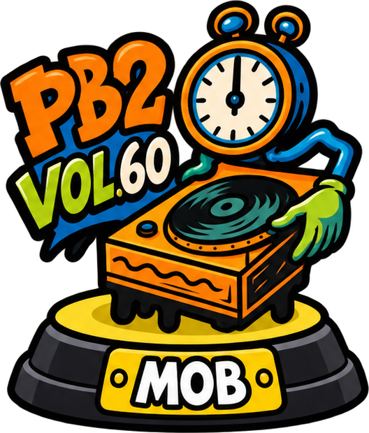
基本フィギュア
無 ATK 120 / DEF 100公開中
味方全体のDEF+20。次の相手ターン、ATK/DEF低下効果を1回無効にする。
PB2 / リスペクト / 機械の力基本フィギュア
雷 ATK 145 / DEF 130公開中
味方全体のDEF+20。次の相手ターン、ATK/DEF低下効果を1回無効にする。
キュート / リスペクト / 機械の力基本フィギュア
無 ATK 150 / DEF 140公開中
このターンATK+20、DEF+20。次の相手ターン終了時までこの強化を維持する。
キュート / リスペクト / 機械の力基本フィギュア
無 ATK 140 / DEF 140公開中
このターンATK+20、DEF+20。次の相手ターン終了時までこの強化を維持する。
キュート / リスペクト / 機械の力基本フィギュア
無 ATK 175 / DEF 180公開中
このターン、自分の場の全てのフィギュアのATK+20、DEF+20。次の相手ターン終了時までこの強化を維持する。
マスコット × PB2
基本フィギュア
無 ATK 140 / DEF 145公開中
自分ライフを20回復する。味方1体に付いているATK/DEF低下効果を解除する。
マスコット / PB2 / 職人 / リスペクト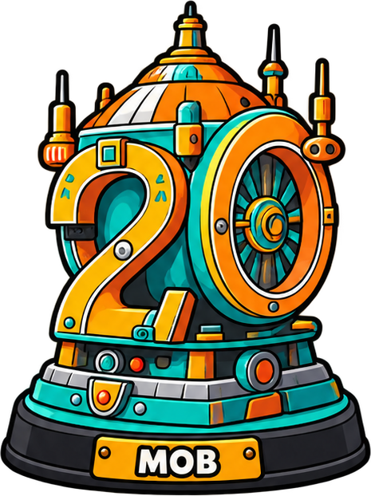
基本フィギュア
雷 ATK 0 / DEF 0公開中
メインスキル:自分と相手の手札を全て墓地へ送る。
パッシブ:このフィギュアのATKとDEFは自分と相手の墓地の数×20となる。
PB2 ×
基本フィギュア
火 ATK 140 / DEF 130公開中
このターン、攻撃するたびATK+20（累積）。撃破した場合は別の相手1体へ追加攻撃できる。
マスコット / ドラゴン / 火炎 / 遠距離攻撃基本フィギュア
水 ATK 150 / DEF 140公開中
相手1体のDEF-20。このターン、その相手への攻撃はDEF上昇効果を無視する。
マスコット / キュート / 遠距離攻撃 / もちもち基本フィギュア
無 ATK 140 / DEF 140公開中
このフィギュアを対象にした攻撃を1回無効にし、自分ライフを10回復する。
スピードスター / 影の実力者 / 遠距離攻撃基本フィギュア
水 ATK 140 / DEF 140公開中
相手1体のDEF-20。このターン、その相手への攻撃はDEF上昇効果を無視する。
海底 / 影の実力者 / 遠距離攻撃基本フィギュア
雷 ATK 160 / DEF 140公開中
このターン、相手フィールドの各フィギュアへ1回ずつ攻撃できる。2体目以降への攻撃時ATK+10。
主人公パーティー / 田舎町 / もちもち基本フィギュア
水 ATK 60 / DEF 80公開中
攻撃対象をこのフィギュアへ変更し、その攻撃中DEF+30。
草原基本フィギュア
地 ATK 60 / DEF 80公開中
このターンATK+20。攻撃対象変更・守護効果を無視して任意の相手を攻撃できる。
草原 / 遠距離攻撃基本フィギュア
光 ATK 160 / DEF 130公開中
相手1体のDEF-20。そのフィギュアは次のバトルフェイズで攻撃できない。
ソウル / 主人公パーティー / スピードスター / 遠距離攻撃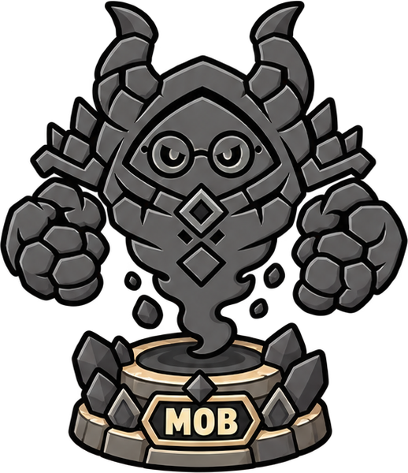
基本フィギュア
地 ATK 140 / DEF 150公開中
味方全体のDEF+20。次の相手ターン、最初に発生する差分ライフダメージを0にする。
田舎町 / 遠距離攻撃 / 大地の力基本フィギュア
闇 ATK 130 / DEF 160公開中
相手1体のDEF-20。次の相手ターン終了まで、そのフィギュアをソウルフュージョン素材にできない。
ソウル / 魔法使い / 砂漠 / 遠距離攻撃基本フィギュア
風 ATK 140 / DEF 140公開中
このターン、相手フィールドの各フィギュアへ1回ずつ攻撃できる。2体目以降への攻撃時ATK+10。
ソウル / 草原 / 遠距離攻撃基本フィギュア
火 ATK 150 / DEF 140公開中
このターン相手フィールド全員へ1回ずつ攻撃できる。2体目以降への攻撃時ATK+10。
ソウル / ドラゴン / マグマ / 遠距離攻撃基本フィギュア
水 ATK 150 / DEF 140公開中
このターンATK+30。撃破した場合、別の相手1体へ追加攻撃できる。
キュート / チルタイム / もちもち / リスペクト基本フィギュア
水 ATK 150 / DEF 130公開中
このターン、相手フィールドの各フィギュアへ1回ずつ攻撃できる。2体目以降への攻撃時ATK+10。
キュート / チルタイム / もちもち / リスペクト基本フィギュア
水 ATK 130 / DEF 150公開中
自分ライフを20回復し、味方全体のDEF+20。
キュート / チルタイム / もちもち / リスペクト基本フィギュア
水 ATK 130 / DEF 180公開中
自分ライフを50回復し、味方全体のDEF+20。
マスコット / キュート / チルタイム / スイーツ / もちもち / リスペクト / とびっきりのスイーツ / 美味しい食べ物基本フィギュア
雷 ATK 140 / DEF 140公開中
味方1体を選ぶ。その味方がこのターン撃破した場合、1体ドローする。
影の実力者 / 伝統基本フィギュア
光 ATK 140 / DEF 150公開中
自分ライフを20回復する。味方1体に付いているATK/DEF低下効果を解除する。
美味しい食べ物 / キュート / チルタイム / スイーツ / 伝統基本フィギュア
無 ATK 200 / DEF 200公開中
相手フィギュアの攻撃を無効にする。このターン、相手は攻撃出来ない。
マスコット / PB2 / ソウル / 特殊能力 / 職人 / リスペクト基本フィギュア
闇 ATK 140 / DEF 140公開中
味方全体のDEF+20。次の相手ターン、ATK/DEF低下効果を1回無効にする。
キュート / メタリック / もちもち / 職人 / リスペクト / 機械の力基本フィギュア
闇 ATK 140 / DEF 130公開中
味方全体のDEF+20。次の相手ターン、ATK/DEF低下効果を1回無効にする。
キュート / メタリック / もちもち / 職人 / リスペクト / 機械の力基本フィギュア
闇 ATK 150 / DEF 140公開中
相手1体を選ぶ。そのフィギュアは次のバトルフェイズで最後にしか攻撃できない。
マスコット / スピードスター / 伝統 / 職人 / リスペクト基本フィギュア
光 ATK 120 / DEF 100公開中
相手1体のDEF-20。次の相手ターン、そのフィギュアはソウルスキルを発動できない。
魔法使い / ピラミッド / 不気味なオーラ基本フィギュア
闇 ATK 60 / DEF 75公開中
このターンATK+20。このフィギュアがこのターン相手を撃破した時、1体ドローする。
伝統 / リスペクト基本フィギュア
無 ATK 60 / DEF 70公開中
このフィギュアが攻撃対象になった時、その攻撃による撃破を1回だけ無効にする。
伝統基本フィギュア
光 ATK 60 / DEF 75公開中
自分ライフを20回復する。味方1体は次に撃破される時、1度だけ撃破されず場に残る。
伝統 / リスペクト基本フィギュア
無 ATK 60 / DEF 80公開中
このターン最大5回攻撃できる。攻撃するたび、このターン中ATK+10（累積）。同じ相手を続けて攻撃してもよい。ダイレクトアタック不可。
伝統基本フィギュア
無 ATK 60 / DEF 80公開中
この攻撃中DEF+30。このフィギュアが撃破されても、その戦闘の差分ライフダメージを0にする。
伝統基本フィギュア
無 ATK 60 / DEF 70公開中
自分ライフを20回復する。手札が4体以下ならシードデッキから1体ドローする。
伝統 / リスペクト基本フィギュア
無 ATK 60 / DEF 80公開中
自分ライフを20回復する。手札が4体以下ならシードデッキから1体ドローする。
伝統 / リスペクトMOB STORYS
水 ATK 135 / DEF 160公開中
自分ライフを20回復し、味方全体のDEF+20。
頼もしい仲間 / キュート / チルタイム / 遠距離攻撃 / もちもちMOB STORYS
火 ATK 150 / DEF 145公開中
攻撃対象をこのフィギュアへ変更し、その攻撃中DEF+40。差分ライフダメージは0。
頼もしい仲間 / 影の実力者MOB STORYS
光 ATK 130 / DEF 160公開中
自分ライフを20回復する。さらに、味方1体のATKを35アップする。
頼もしい仲間 / 不気味なオーラMOB STORYS
光 ATK 140 / DEF 160公開中
相手の攻撃を無効にする。さらに、相手のバトルターンを強制終了させる。
頼もしい仲間 / キュート / 特殊能力 / 影の実力者MOB STORYS
闇 ATK 140 / DEF 150公開中
手札をデッキに戻し、デッキをシャッフルする。その後、5体引く。
頼もしい仲間 / ソウル / 魔法使い / 伝統基本フィギュア
地 ATK 60 / DEF 75公開中
味方全体のDEF+20。次の相手ターン終了まで、相手のDEF低下系ソウルスキルを1回無効にする。
基本フィギュア
地 ATK 60 / DEF 80公開中
相手1体のDEF-20。そのフィギュアは次のバトルフェイズで攻撃できない。
基本フィギュア
地 ATK 60 / DEF 70公開中
自分ライフを20回復する。撃破済みのシードソウル1体をシードデッキの一番下へ戻す。
基本フィギュア
地 ATK 60 / DEF 75公開中
このターン最大2回攻撃できる。攻撃するたび、このターン中ATK+10（累積）。同じ相手を続けて攻撃してもよい。ダイレクトアタック不可。
MOB STORYS
地 ATK 140 / DEF 140公開中
相手1体の通常タグ1つをターン終了まで無効化する。
頼もしい仲間 / 特殊能力MOB STORYS
地 ATK 150 / DEF 130公開中
このターンATK+20。ATKが相手DEFを30以上上回った場合、差分ライフダメージ+20。
頼もしい仲間 / 影の実力者 / 伝統基本フィギュア
闇 ATK 120 / DEF 110公開中
自分ライフを20回復する。味方1体に付いているATK/DEF低下効果を解除する。
マスコット / 職人基本フィギュア
闇 ATK 110 / DEF 110公開中
自分ライフを20回復し、味方全体のDEF+20。
チルタイム / 職人基本フィギュア
闇 ATK 120 / DEF 100公開中
相手フィールド全体のATKを-10。このターン、相手フィールド全員へ1回ずつ攻撃できる。
マスコット / 職人基本フィギュア
火 ATK 130 / DEF 160公開中
相手フィールド全体のDEF-20。このターン、相手フィールド全員へ1回ずつ攻撃できる。
ソウル / 魔法使い / 火炎 / 不気味なオーラ / 遠距離攻撃基本フィギュア
雷 ATK 155 / DEF 140公開中
相手フィールド全体のDEF-20。このターン、相手フィールド全員へ1回ずつ攻撃できる。
ソウル / 魔法使い / 不気味なオーラ / 遠距離攻撃基本フィギュア
水 ATK 130 / DEF 160公開中
相手フィールド全体のDEF-20。このターン、相手フィールド全員へ1回ずつ攻撃できる。
ソウル / キュート / 魔法使い / 不気味なオーラ / 遠距離攻撃基本フィギュア
光 ATK 155 / DEF 130公開中
相手フィールド全体のDEF-20。このターン、相手フィールド全員へ1回ずつ攻撃できる。
ソウル / キュート / 魔法使い / 不気味なオーラ / 遠距離攻撃基本フィギュア
光 ATK 150 / DEF 150公開中
相手の攻撃を無効にし、このフィギュアを墓地に送る。このスキルの発動に成功した時、とびっきりのスイーツタグを持つミドルフィギュアをミドルデッキか墓地から1体召喚する。
頼もしい仲間 / 魔法使い / 不気味なオーラ / 職人 / 美味しい食べ物 / とびっきりのスイーツ基本フィギュア
無 ATK 140 / DEF 140公開中
自分ライフを20回復する。撃破済みのシードソウル1体をシードデッキの一番下へ戻す。
PB2 / チルタイム / メタリック / 職人 / 機械の力基本フィギュア
無 ATK 130 / DEF 140公開中
自分ライフを20回復する。撃破済みのシードソウル1体をシードデッキの一番下へ戻す。
PB2 / チルタイム / メタリック / 職人 / 機械の力基本フィギュア
雷 ATK 150 / DEF 140公開中
味方全体のDEF+20。次の相手ターン、ATK/DEF低下効果を1回無効にする。
チルタイム / メタリック / 職人 / 機械の力基本フィギュア
水 ATK 140 / DEF 140公開中
味方全体のDEF+20。次の相手ターン、ATK/DEF低下効果を1回無効にする。
PB2 / チルタイム / メタリック / 職人 / 機械の力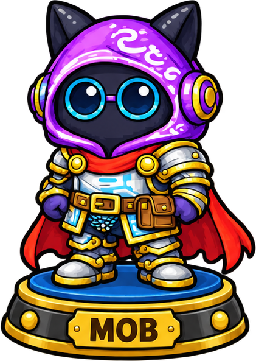
悪の組織とあのヒーロー
光 ATK 250 / DEF 210公開中
メインスキル:自身のATKとDEFを35アップし、自分以外の味方全体のATKとDEFを25アップする。
パッシブ:破壊された時、融合領域からモブあのヒーローを召喚する。
主人公パーティー × 主人公パーティー
読みかけの本 × 読みかけの本
MOB STORYS
無 ATK 140 / DEF 175公開中
自身が破壊された時、融合領域から主人公パーティーのミドル1体を選んで召喚する。
主人公パーティー / 影の実力者 / 職人MOB STORYS
地/闇 ATK 220 / DEF 200公開中
自身のATKとDEFを＋20、相手1体のATKとDEF-25。次の相手ターン終了まで、そのフィギュアをソウルフュージョン素材にできない。
× 闇属性
MOB STORYS
雷 ATK 215 / DEF 205公開中
このターン中、このフィギュアの攻撃を受けたフィギュアはダメージ計算を行わずに破壊される。
× 雷属性
MOB STORYS
火 ATK 200 / DEF 220公開中
相手フィールド全体のDEFを-25する。このターン、相手は手札からスキルを発動することが出来ない。
× 火属性
MOB STORYS
光 ATK 215 / DEF 225公開中
相手の攻撃を無効にし、攻撃してきたフィギュアを破壊する。
× 光属性
MOB STORYS
水 ATK 210 / DEF 210公開中
このターン中、自分の場の全てのフィギュアのDEFを30アップする。さらに、次の自分の攻撃ターンのみこのフィギュアのATKは30アップする。
× 水属性
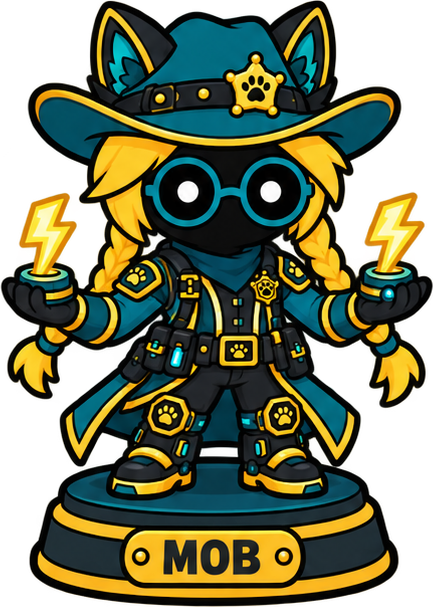
MOB STORYS
雷 ATK 225 / DEF 210公開中
このターン最大2回攻撃できる。攻撃するたびATK+25（累積）。さらに、このターンこのフィギュアに対して相手はスキルを発動出来ない。
× 雷属性
MOB STORYS
光 ATK 240 / DEF 180公開中
手札を1枚捨て、このターンこのフィギュアのATK+35 & DEF +45。さらに、このターン撃破に成功する度に相手の手札を1枚墓地へ送る。※手札が無い場合は無効
× 地属性
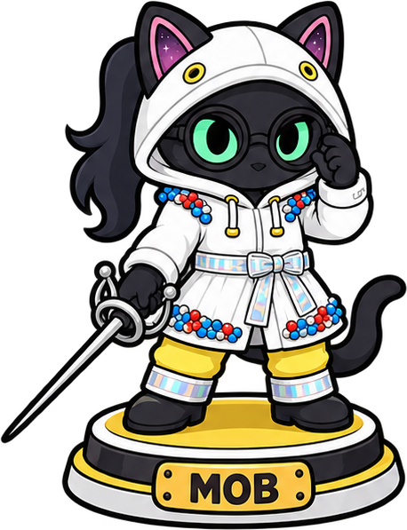
MOB STORYS
風 ATK 200 / DEF 175公開中
相手がスキルを発動した時、そのスキルを無効にする。そのスキルがバフ効果だった場合、このフィギュアに適用する。
× 風属性
悪の組織とあのヒーロー
光 ATK 350 / DEF 350公開中
メインスキル:相手の手札を全て破壊する。
パッシブ:このフィギュアはスキルの効果では破壊されない。
主人公パーティー × 読みかけの本
未分類
水 ATK 120 / DEF 130公開中
相手の攻撃を無効にし、このフィギュアのDEFを20アップする。
マスコット / 草原 / もちもち未分類
地 ATK 90 / DEF 100公開中
味方全体のDEF+20。次の相手ターン、最初に発生する差分ライフダメージを0にする。
草原 / 大地の力未分類
水 ATK 90 / DEF 100公開中
攻撃対象をこのフィギュアへ変更し、その攻撃中DEF+40。差分ライフダメージは0。
草原未分類
水 ATK 100 / DEF 95公開中
味方全体のDEF+20。次の相手ターン、最初に発生する差分ライフダメージを0にする。
草原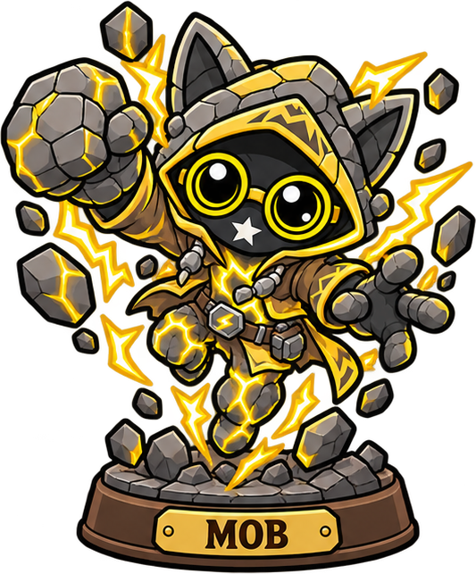
未分類
雷 ATK 170 / DEF 190公開中
このターン最大2回攻撃できる。攻撃するたびATK+25（累積）。攻撃対象変更・守護効果を無視して対象を選べる。
モブロック × 雷属性
未分類
地 ATK 125 / DEF 95公開中
各ターンに1度、このフィギュアへの攻撃を回避する。
草原 / スピードスター未分類
火 ATK 180 / DEF 170公開中
タグ草原を持つ自分の場のフィギュアのATKとDEF+25。
モブジョーロ × 火属性
未分類
水 ATK 170 / DEF 180公開中
相手1体のDEF-30。このターンATK=DEFでもその相手を撃破できる。
モブジョーロ × 地属性
未分類
風 ATK 180 / DEF 170公開中
相手がスキルを使用した時、そのスキルを無効にし、DEFを30ダウンする。
草原 × 草原
砂漠を統べる王
地 ATK 90 / DEF 110公開中
このフィギュアが破壊された時、シードデッキから砂漠タグを持つフィギュア1体を召喚する。
砂漠 / ピラミッド / 大地の力 / マスコット砂漠を統べる王
地 ATK 90 / DEF 100公開中
このフィギュアが攻撃に成功した時、相手の手札を1枚墓地へ送る。
砂漠 / ピラミッド / 大地の力ピラミッド・ガーディアンズ
闇 ATK 180 / DEF 180公開中
相手フィールド全体のDEF-30。このターン、相手フィールド全員へ1回ずつ攻撃できる。
モブミイラ × 闇属性
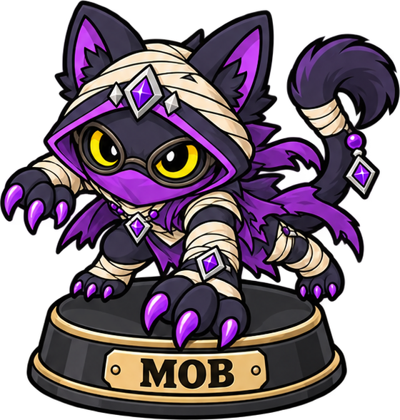
砂漠を統べる王
闇 ATK 140 / DEF 90公開中
タグ:砂漠かタグ:ピラミッドのミドルフィギュアをソウルフュージョン(シード×シード)召喚する時、このフィギュアはどの素材としても対応できる。
砂漠 / ピラミッド / 不気味なオーラ砂漠を統べる王
火 ATK 90 / DEF 110公開中
このターン、砂漠タグを持つ味方フィギュアのATKを25アップする。
砂漠 / ピラミッド / もちもち砂漠を統べる王
地 ATK 90 / DEF 110公開中
攻撃対象を別の味方へ変更する。変更後の味方はその攻撃中DEF+20。
砂漠 / スピードスター砂漠を統べる王
雷 ATK 170 / DEF 185公開中
手札を1枚捨てる。このターンこのフィギュアのATKとDEFは30アップし、スキルの対象にならなくなる。
モブミイラ × 雷属性
砂漠を統べる王
闇 ATK 180 / DEF 197公開中
このフィギュアはこのターン攻撃出来ない。自分の場のフィギュアのATKとDEFを45アップする。
モブミイラ × モブミイラ
未分類
水 ATK 90 / DEF 100公開中
手札1体をデッキ下へ戻し、同じタグを1つ以上持つシード1体を手札へ加える。
田舎町 / 職人未分類
地 ATK 100 / DEF 90公開中
このフィギュアが攻撃に成功した時、相手の手札を1枚墓地へ送る。
田舎町 / 波の如く未分類
火 ATK 100 / DEF 120公開中
相手の攻撃を無効にし、次の相手ターン終了時までスキルを無効にする。
田舎町 / スピードスター / 不気味なオーラ / 影の実力者未分類
水 ATK 90 / DEF 100公開中
このターン最大2回攻撃できる。攻撃するたび、このターン中ATK+20（累積）。同じ相手を続けて攻撃してもよい。ダイレクトアタック不可。
田舎町未分類
闇 ATK 190 / DEF 190公開中
このターン相手はスキルを発動出来ない。
モブダンサー × 光属性
未分類
水 ATK 170 / DEF 195公開中
このフィギュアが破壊された時、ミドルデッキからモブティラを召喚する。対象が存在しない時、シードデッキから田舎町タグを持つフィギュアを1体召喚する。
モブナイフ × 水属性
未分類
火 ATK 190 / DEF 165公開中
このフィギュアが破壊された時、ミドルデッキからモブティラを召喚する。対象が存在しない時、シードデッキから田舎町タグを持つフィギュアを1体召喚する。
モブナイフ × 火属性
未分類
闇 ATK 180 / DEF 180公開中
このフィギュアを墓地へ送り、デッキか墓地からモブアクイ、モブシツイ、モブヤマイを可能な限り召喚する。※フィールドに空きがある限り召喚可能
田舎町 × 闇属性
未分類
闇 ATK 140 / DEF 140公開中
このフィギュアが破壊された時、相手の場のフィギュア1体を破壊する。
モブヒトデヤリ × 闇属性
未分類
闇 ATK 185 / DEF 170公開中
攻撃してきた相手フィギュアは、このターンのみATKが0になる。
モブナイフ × 闇属性
未分類
闇 ATK 180 / DEF 180公開中
このフィギュアを破壊したフィギュアは、毎ターン、ターン開始時にATKとDEFが30ダウンする。
モブダンサー × 闇属性
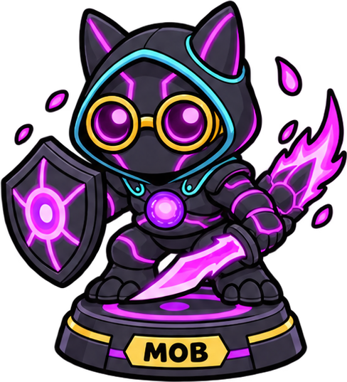
未分類
光 ATK 100 / DEF 90公開中
このターンATK+20。ATKが相手DEFを30以上上回った場合、差分ライフダメージ+20。
ネオン街未分類
地 ATK 110 / DEF 90公開中
相手の攻撃を無効にする。
ネオン街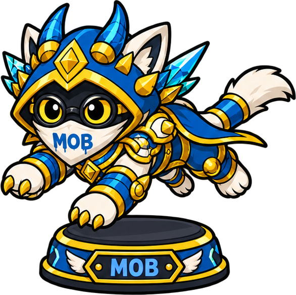
未分類
地 ATK 90 / DEF 100公開中
相手のスキルを無効にする。
キュート / チルタイム / ネオン街未分類
水 ATK 120 / DEF 200公開中
自分の場に存在するタグ:スライムを持つ全てのフィギュアのATKとDEFを45アップする。
この効果はこのフィギュアが場に存在する限り継続する。※新たに召喚したフィギュアにも適応
モブカイロ × 水属性
×
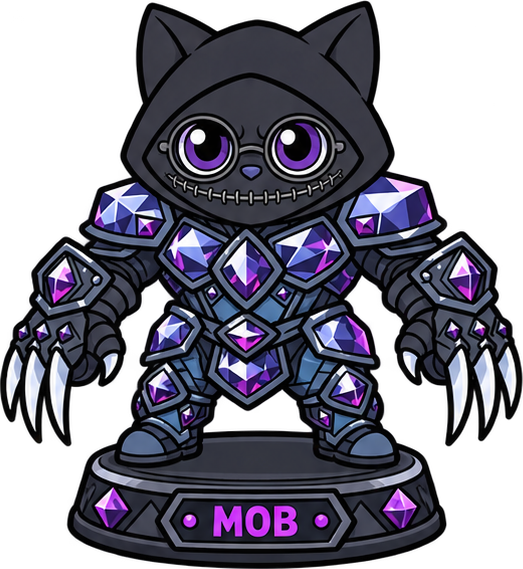
未分類
地 ATK 200 / DEF 140公開中
このフィギュアは同じフィギュアに3回連続で攻撃出来る。
モブネオントカゲ × モブネオントカゲ
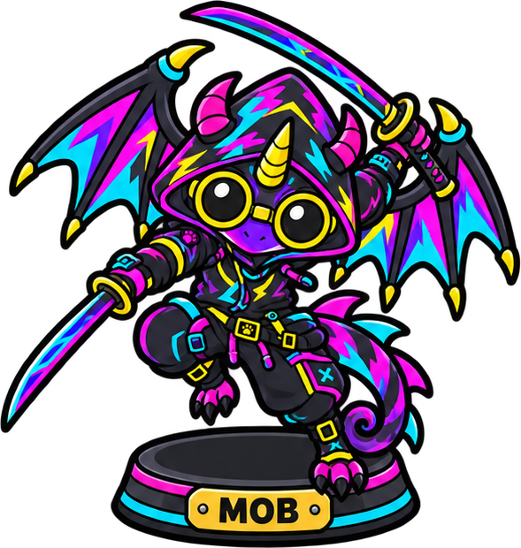
未分類
光 ATK 190 / DEF 190公開中
このターン、自分の場の光属性1体につき、このフィギュアのATKは25アップし、2回攻撃出来る。
モブネオントカゲ × モブカイロ
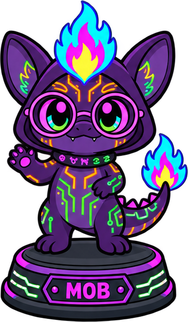
未分類
火 ATK 120 / DEF 140公開中
相手1体のATK-20。そのフィギュアが次に攻撃するまでDEFも-10。
キュート / ドラゴン / ネオン街未分類
火 ATK 170 / DEF 170公開中
相手の攻撃を無効にし、そのフィギュアのATKを30ダウンする。
モブバンケン × モブコドラ
未分類
水 ATK 100 / DEF 90公開中
このターンATK+20。ATKが相手DEFを30以上上回った場合、差分ライフダメージ+20。
海底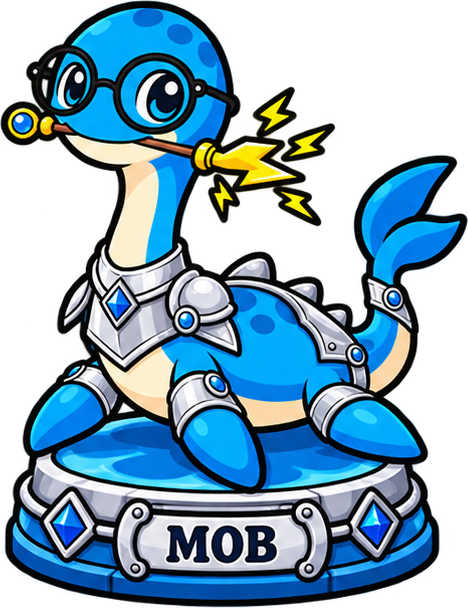
未分類
水 ATK 90 / DEF 100公開中
相手のスキルを無効にし、自分の場のフィギュアのATKを20UPする。
海底未分類
水 ATK 90 / DEF 100公開中
相手の攻撃を無効にする。
海底未分類
水 ATK 140 / DEF 150公開中
攻撃対象をこのフィギュアへ変更し、その攻撃中DEF+30。
モブジンベエ × 海底
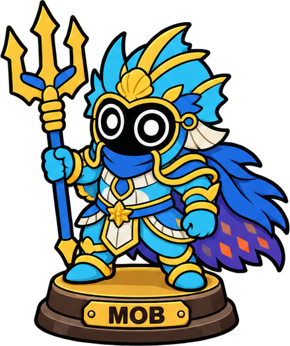
未分類
水 ATK 180 / DEF 170公開中
相手フィギュア1体を破壊する。この効果を使ったターン、このフィギュア以外の自分の場のフィギュアは攻撃出来ない。
海底 × 海底
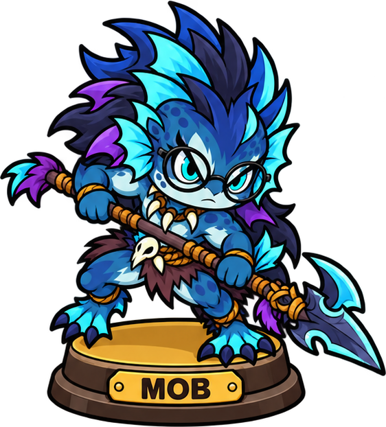
未分類
水 ATK 300 / DEF 275公開中
メインスキル:このターン、相手はフィギュアを破壊するスキルを発動出来ない。
パッシブ:攻撃を受ける度、ATKを20アップする。
モブシーガード × モブアビスナイト
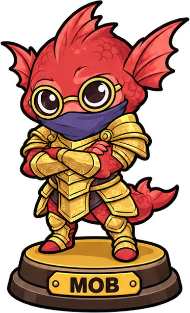
未分類
水 ATK 220 / DEF 200公開中
相手全体のDEFを25ダウンする。
モブバブルドクター × 光属性
未分類
地 ATK 105 / DEF 90公開中
相手フィールド全体のDEF-20。このターン、相手フィールド全員へ1回ずつ攻撃できる。
魔法使い / 部族村 / 不気味なオーラ未分類
地 ATK 100 / DEF 90公開中
相手のスキルを無効にし、タグ部族村を持つフィギュアのATKとDEFを+20する。
部族村 / 不気味なオーラ未分類
風 ATK 180 / DEF 180公開中
相手1体のDEF-30。次の相手ターン終了まで、そのフィギュアをソウルフュージョン素材にできない。
部族村 × 部族村
未分類
地 ATK 200 / DEF 220公開中
攻撃対象をこのフィギュアへ変更し、その攻撃中DEF+50。差分ライフダメージは0。
モブウォリアー × モブキバ
未分類
闇 ATK 170 / DEF 180公開中
相手の攻撃を無効にし、相手のライフに20ダメージを与える。
モブウォリアー × 闇属性
未分類
火 ATK 190 / DEF 170公開中
このターンATK+30。相手のDEF上昇効果を無視し、撃破時の差分ライフダメージ+10。
モブキバ × 火属性
未分類
火 ATK 105 / DEF 75公開中
このターンATK+30。相手のDEF上昇効果を無視し、撃破時の差分ライフダメージ+10。
ドラゴン / マグマ未分類
火 ATK 75 / DEF 105公開中
攻撃対象をこのフィギュアへ変更し、その攻撃中DEF+50。差分ライフダメージは0。
マグマ未分類
火 ATK 90 / DEF 100公開中
相手の攻撃を無効にし、相手プレイヤーに20のダメージを与える。
マグマ / 遠距離攻撃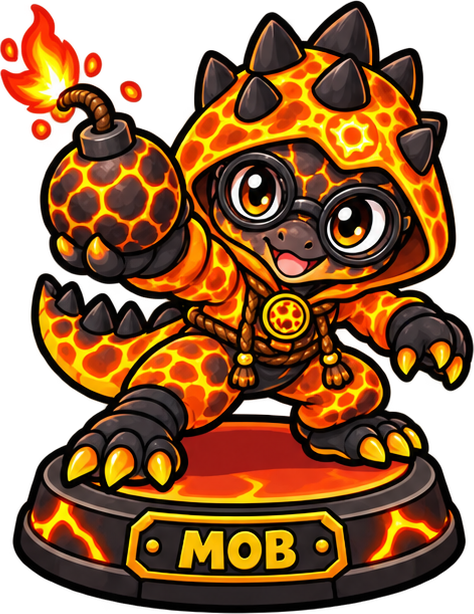
未分類
火 ATK 100 / DEF 90公開中
相手のスキルを無効にし、相手の手札を1枚ランダムに捨てる。
マグマ / 遠距離攻撃未分類
火 ATK 120 / DEF 100公開中
火属性のミドルフィギュアをソウルフュージョン(シード×シード)召喚する時、このフィギュアはどの素材としても対応できる。
キュート / 魔法使い / マグマ未分類
火 ATK 185 / DEF 170公開中
手札か場の火属性フィギュアを1体墓地へ送る。このターンこのフィギュアのATKは45アップする。
モブホノテイル × モブマグトカゲ
マグマ × モブホノテイル
未分類
水 ATK 170 / DEF 180公開中
スキルの発動を無効にし、相手フィールド全体のDEF-20。
モブヒノデビ × 水属性
未分類
火 ATK 180 / DEF 170公開中
相手1体のATK-30。次にそのフィギュアが攻撃するまでDEFも-20。
モブヒノデビ × 火属性
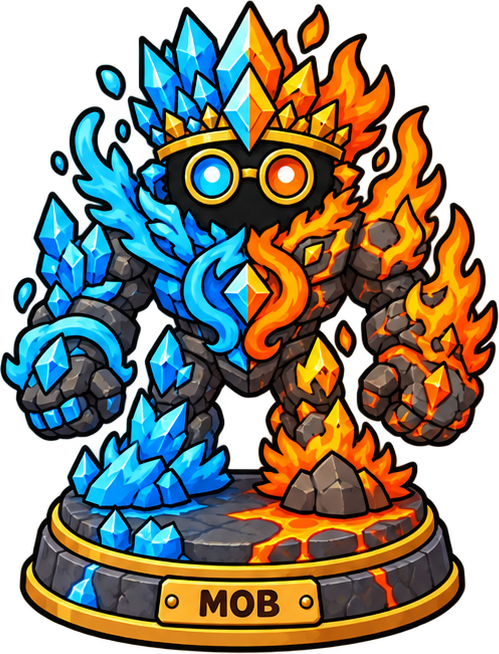
未分類
水/火 ATK 270 / DEF 270公開中
メインスキル:敵全体のDEFを20ダウンさせる。
パッシブ:自分の場の火属性と水属性モンスターのATKとDEFを20アップする。
モブブリザード × モブフレイム
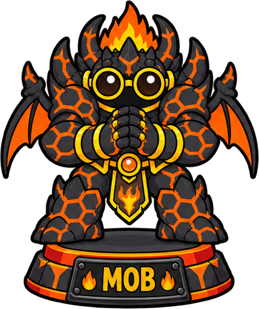
未分類
火 ATK 180 / DEF 170公開中
相手フィールド全体のDEFを-30する。このターン、このフィギュアは相手フィールド全員を攻撃対象に選べる。
モブヒートロック × 火属性
未分類
火 ATK 170 / DEF 190公開中
このターン、お互いのプレイヤーは火属性フィギュア以外の効果を発動出来ない。
モブマグトカゲ × モブヒノデビ
未分類
闇 ATK 90 / DEF 100公開中
攻撃を無効にし、DEFを20ダウンする。
魔法使い / 魔王城 / 遠距離攻撃未分類
水 ATK 90 / DEF 105公開中
スキルを無効にし、ATKを15ダウンする。
魔法使い / 魔王城未分類
水 ATK 175 / DEF 165公開中
このターン、このフィギュアは2回攻撃出来る。攻撃する度、このターン中ATKを20アップする。
モブデビルスライム × 魔王城
未分類
光 ATK 130 / DEF 120公開中
タグ魔王城のミドルフィギュアをソウルフュージョン(シード×シード)召喚する時、このフィギュアはどの素材としても対応できる。
キュート / チルタイム / 魔法使い / 魔王城 / 特殊能力未分類
闇 ATK 160 / DEF 180公開中
攻撃してきた相手フィギュア以外の相手の場のフィギュアと一時的に入れ替わり、代わりに攻撃を受けさせる。ダメージが発生する場合、お互いにダメージを受ける。※対象が存在しない場合、発動出来ない
魔王城 × ネオン街
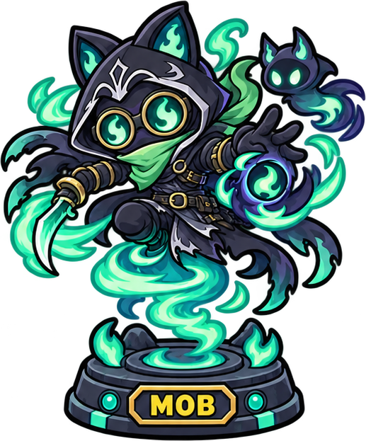
未分類
闇 ATK 180 / DEF 160公開中
相手フィールド全体のATKとDEF-10。
魔王城 × 部族村
未分類
火 ATK 145 / DEF 145公開中
次のソウルフュージョンで召喚するフィギュアのATKとDEFを+20。
魔王城 × マグマ
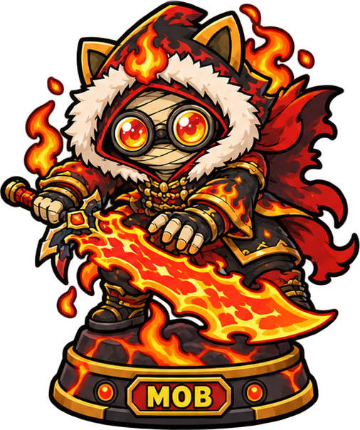
未分類
火 ATK 275 / DEF 275公開中
メインスキル:次のソウルフュージョンで召喚するフィギュアのATKとDEFを+20。
パッシブ:火属性以外とバトルを行う時、このフィギュアのATKは30アップする。
魔王城 × 砂漠
未分類
闇 ATK 180 / DEF 170公開中
自分の場の闇属性フィギュアは、2ターンの間、1回目の攻撃では破壊されない。
モブミニブック × 闇属性
未分類
火 ATK 180 / DEF 170公開中
相手の攻撃を無効にし、ライフを60回復する。
モブミニブック × 火属性
未分類
火 ATK 280 / DEF 265公開中
メインスキル:このターン4回まで攻撃出来る。同じ相手への攻撃も可能。
パッシブ:攻撃する度このフィギュアのATKとDEFは10アップする。
魔王城 × 魔王城
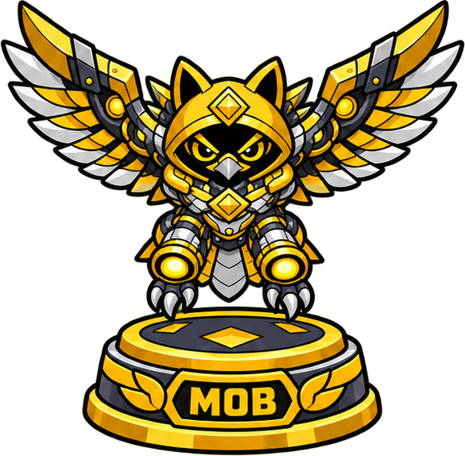
未分類
風 ATK 190 / DEF 180公開中
このターン中、このフィギュアに対する1度目の攻撃を回避する。
草原 × 風属性
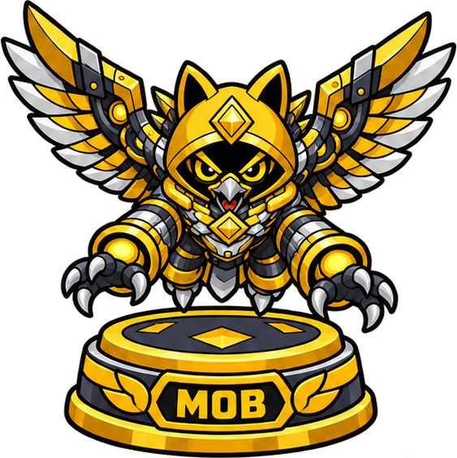
未分類
風 ATK 280 / DEF 275公開中
メインスキル:自分の場にこのフィギュアしかいない時、デッキから草原タグを持つミドルフィギュア1体を召喚する。
パッシブ:草原タグを持っていないフィギュアとの戦闘時、ATKを30アップする。
モブホーク × モブツルガンナー
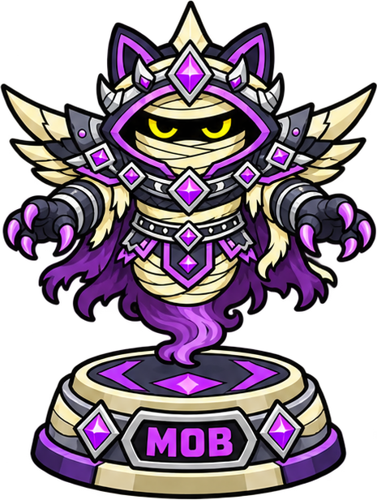
砂漠を統べる王
闇 ATK 190 / DEF 190公開中
相手の攻撃を無効にし、そのフィギュアをスキル使用不可状態にする。
砂漠 × 闇属性
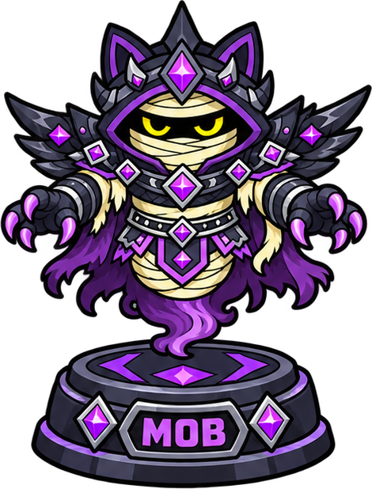
砂漠を統べる王
闇 ATK 280 / DEF 280公開中
メインスキル:相手フィギュア1体を選択する。そのフィギュアはこのターンから毎ターンATKとDEFが20ダウンする。
パッシブ:場に出ている砂漠タグフィギュア1体につきATKとDEF20アップ。
ミラモブ × モブミラバスター
未分類
地 ATK 170 / DEF 195公開中
このターン中、自分の場のフィギュアのDEFを30アップする。
田舎町 × 田舎町
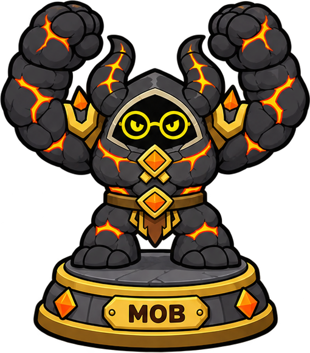
未分類
無 ATK 255 / DEF 290公開中
メインスキル:このターン、相手はこのフィギュアしか攻撃出来ない。
パッシブ:このフィギュアはそのターン中1回目の攻撃では破壊されない。
モブガーディアン × モブバイオリン
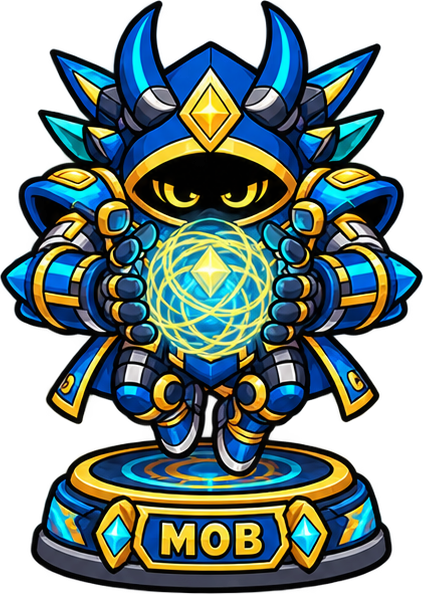
未分類
光 ATK 220 / DEF 220公開中
スキルの効果を無効にし、発動したフィギュアのDEFを20ダウンする。
モブバンケン × 光属性
未分類
闇 ATK 230 / DEF 220公開中
タグ:ネオン街 を持つフィギュアはこのターン中破壊されず、相手のスキルの効果も受け付けない。
ネオン街 × 魔王城
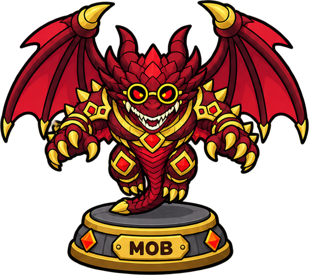
未分類
火 ATK 190 / DEF 190公開中
このターン、攻撃するたびATK+30（累積）。撃破した場合は別の相手1体へ追加攻撃できる。
モブマグトカゲ × モブフレイム
モブマグトカゲ × マグマ
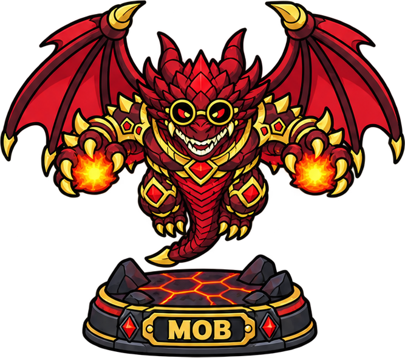
未分類
火 ATK 275 / DEF 275公開中
メインスキル:このターン最大2回攻撃できる。同じ相手を続けて攻撃してもよい。ダイレクトアタック不可。
パッシブ:このフィギュアが撃破された時、融合領域からモブギドラを1体召喚する。
モブドラゴン × モブマグバスター
マグマ × マグマ
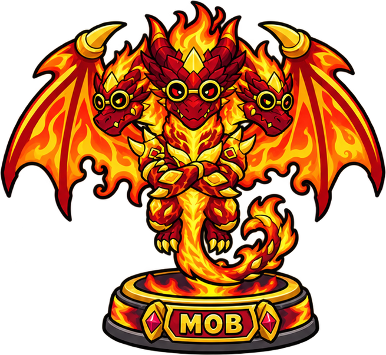
未分類
火 ATK 320 / DEF 320公開中
メインスキル:このターン最大3回攻撃できる。攻撃するたび、このターン中ATK+30（累積）。攻撃対象は毎回自由。同じ相手にも複数回攻撃できる。ダイレクトアタック不可。
パッシブ:破壊された時、自分の墓地の火属性モンスター1体を召喚する。（自分自身は蘇生対象外。）
モブドラゴン × モブヨーガンスライム
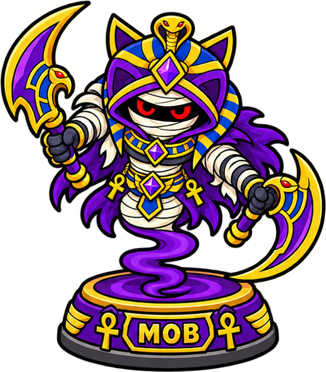
砂漠を統べる王
光/闇 ATK 340 / DEF 280公開中
メインスキル:相手フィギュア1体を選ぶ。次の相手ターン終了までDEF-40、ソウルスキル使用不可、ソウルフュージョン素材にもできない。
パッシブ:ピラミッドタグを持つ自分の場のモンスターは1ターンに2回まで攻撃出来る。
ミラモブの系譜 × ミラモブの系譜
未分類
地 ATK 180 / DEF 190公開中
相手フィールド全体のDEF-30。このターン、相手フィールド全員へ1回ずつ攻撃できる。
部族村 × 闇属性
未分類
闇 ATK 265 / DEF 275公開中
メインスキル:相手フィールド全体のDEF-40。このターン、相手フィールド全員へ1回ずつ攻撃できる。
パッシブ:相手の場のフィギュアのATKを20ダウンする。
モブデーバフ × モブバーサク
未分類
地 ATK 190 / DEF 185公開中
自身のDEFを30ダウンし、ATKを40アップする。このフィギュアが撃破された時、部族村のタグを持つシードかミドルフィギュア1体を復活させる。
部族村 × 闇属性
未分類
闇 ATK 250 / DEF 265公開中
メインスキル:手札を1枚捨てる。このターン、このフィギュアのATKはそのフィギュアの半分のATK分アップする。
パッシブ:自分の場の闇属性フィギュアのATKを20アップする。
モブデーバフ × モブバーサク
未分類
雷 ATK 275 / DEF 260公開中
メインスキル:相手の場のフィギュアはこのターンスキルを発動出来ない。
パッシブ:このフィギュアはステータスが下がるスキルやパッシブの効果を受けない。
モブガーディアン × 雷属性
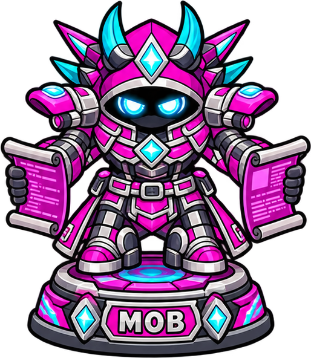
未分類
光 ATK 270 / DEF 300公開中
メインスキル:自身のATKを100ダウンし、ネオン街タグを持つシードかミドルフィギュア1体を復活させる。
パッシブ:ネオン街タグを持つ自分のフィギュアは1ターンに1度だけ戦闘で破壊されない。
モブネオンバルス × モブパレットレオン
未分類
火 ATK 115 / DEF 105公開中
相手の攻撃を無効にし、相手のバトルを終了させる。
リリス4姉妹 / ソウル / 魔法使い / 魔王城未分類
雷 ATK 115 / DEF 105公開中
相手のスキルを無効にし、相手の場のフィギュア1体のDEFを30ダウンする。
リリス4姉妹 / ソウル / 魔法使い / 魔王城未分類
水 ATK 115 / DEF 105公開中
このターン中のみ、このフィギュアは攻撃対象にならず、スキルの効果も受けない。
リリス4姉妹 / ソウル / 魔法使い / 魔王城未分類
光 ATK 115 / DEF 105公開中
リリス4姉妹のタグを持つフィギュアはこのターン破壊されない。さらに、ATKとDEFを25アップする。
リリス4姉妹 / ソウル / 魔法使い / 魔王城未分類
火 ATK 215 / DEF 205公開中
相手の攻撃を無効にし、このフィギュアのATKを20アップする。
モブヘルリリス × 魔法使い
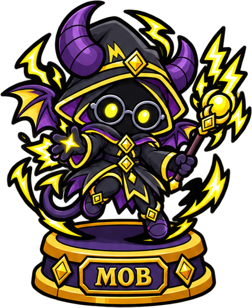
未分類
雷 ATK 180 / DEF 160公開中
相手の攻撃を無効にし、このフィギュアのDEFを20アップする。
モブキリンリリス × 魔法使い
未分類
水 ATK 180 / DEF 160公開中
相手のスキル発動を無効にし、このフィギュアのATKを20アップする。
モブリヴァリリス × 魔法使い
未分類
光 ATK 180 / DEF 160公開中
相手のスキル発動を無効にし、このフィギュアのDEFを20アップする。
モブクフリリス × 魔法使い
砂漠を統べる王
水 ATK 190 / DEF 190公開中
自身のATKとDEFを25アップする。さらに、このフィギュアが攻撃した相手フィギュアはこのターンスキル使用不可となる。
砂漠 × 水属性
砂漠を統べる王
地 ATK 190 / DEF 180公開中
相手フィールド全体のDEF-30。このターン、相手フィールド全員へ1回ずつ攻撃できる。
砂漠 × 地属性
砂漠を統べる王
光 ATK 190 / DEF 175公開中
このターン、お互いにスキルを使用することが出来ない。このスキルを使ったターン、このフィギュアは破壊されない。
砂漠 × 光属性
砂漠を統べる王
火 ATK 170 / DEF 195公開中
このターン、砂漠タグを持つ自分の場のフィギュアのATKを25アップする。
砂漠 × 火属性
未分類
闇 ATK 265 / DEF 280公開中
メインスキル:このターン、味方全体のATKとDEFを25アップする。リリス4姉妹タグを持つ場合、さらにATKとDEFを25アップする。
パッシブ:このフィギュアはターン開始毎にATKが15アップする。
モブキラウィッチ × モブララウィッチ
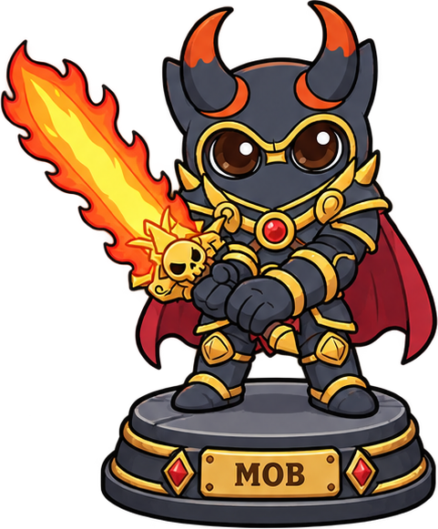
未分類
火 ATK 110 / DEF 110公開中
相手1体のATK-30。そのフィギュアが次に攻撃するまでDEFも-20。 撃破された時、手札1枚を捨ててモブ閻魔第二形態へ条件進化できる。
魔王城未分類
火 ATK 215 / DEF 205公開中
相手フィールド全体のDEF-40。このターン、相手フィールド全員へ1回ずつ攻撃できる。 撃破された時、手札2枚を捨ててモブ閻魔第最終形態へ条件進化できる。
ソウル / 魔王城 / 火炎 / 不気味なオーラ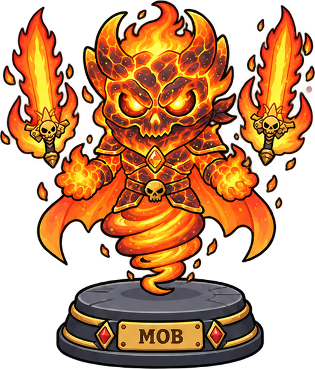
未分類
火 ATK 310 / DEF 305公開中
メインスキル:スキルの発動を無効にし、そのフィギュアのDEFを30ダウンする。
パッシブ:自分の場の火属性フィギュアのDEFを15アップする。
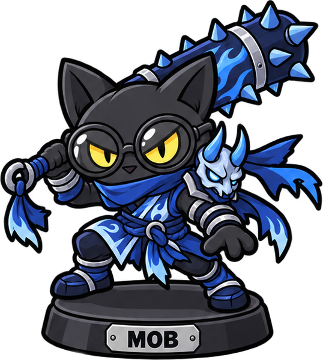
悪の組織とあのヒーロー
水 ATK 120 / DEF 110公開中
このフィギュアは登場ターンのみATKとDEFを35アップする。このフィギュアが破壊された場合、モブ怪人幹部青変身をミドルデッキから召喚する。
読みかけの本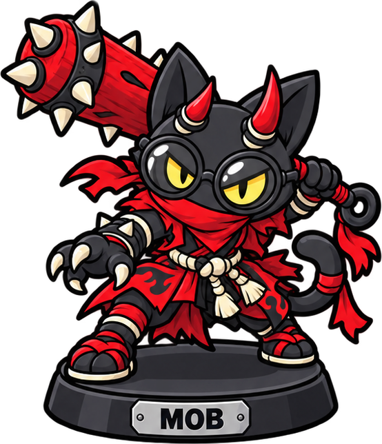
悪の組織とあのヒーロー
火 ATK 125 / DEF 105公開中
このフィギュアは登場ターンのみATKとDEFを35アップする。このフィギュアが破壊された時、モブ怪人幹部赤変身をミドルデッキから召喚する。
読みかけの本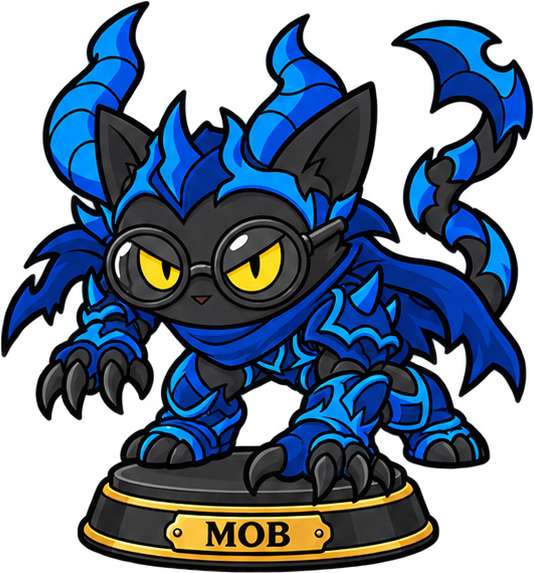
悪の組織とあのヒーロー
水 ATK 220 / DEF 200公開中
このターンATK+30。ATKが相手DEFを30以上上回った場合、差分ライフダメージ+20。このフィギュアが撃破された時、自分の場の読みかけの本のタグをフィギュア1体のATKとDEFを30アップする。
モブ怪人幹部青 × 読みかけの本
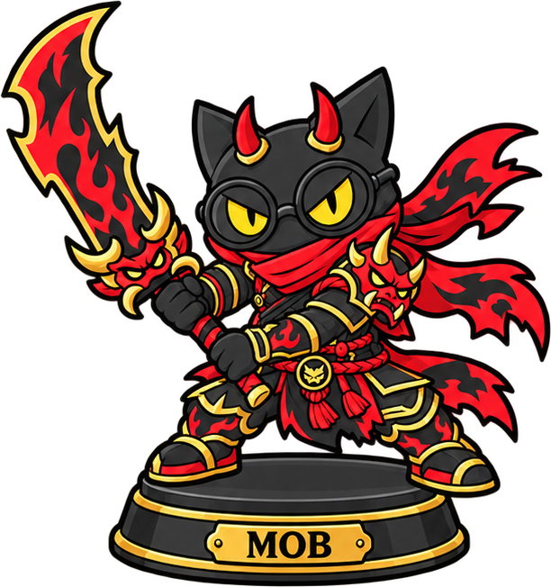
悪の組織とあのヒーロー
火 ATK 215 / DEF 205公開中
このターンATK+30。ATKが相手DEFを30以上上回った場合、差分ライフダメージ+20。このフィギュアが撃破された時、自分の場の読みかけの本のタグをフィギュア1体のATKとDEFを30アップする。
モブ怪人幹部赤 × 読みかけの本
悪の組織とあのヒーロー
光 ATK 215 / DEF 230公開中
このターン、このフィギュアは3回まで攻撃とスキル(このフィギュアに影響を与える)を無効にする。攻撃とスキル、合わせて3回とする。
読みかけの本 × 光属性
悪の組織とあのヒーロー
光 ATK 340 / DEF 330公開中
メインスキル:相手のDEF200以下のフィギュアを全て破壊し、破壊した数×20ライフを回復する。
パッシブ:このフィギュアは3回まで相手の攻撃と相手のスキルの発動(このフィギュアに影響を与える)を無効にすることが出来る。攻撃とスキル、合わせて3回とする。
モブナビ × 読みかけの本
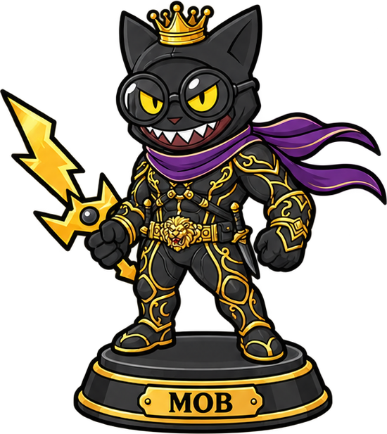
悪の組織とあのヒーロー
闇/無 ATK 325 / DEF 310公開中
メインスキル:このターン、このフィギュアの攻撃に対して相手はスキルを発動出来ない。
パッシブ:読みかけの本のタグを持つ自分の場のフィギュアのDEFを25アップする
モブ怪人幹部青変身 × モブ怪人幹部赤変身
モブ怪人幹部青変身 × 闇属性
モブ怪人幹部赤変身 × 闇属性
未分類
闇 ATK 375 / DEF 370公開中
スキル:相手の場のフィギュアのDEFを30ダウンさせ、このターンスキルを使用不可にする。
パッシブ:自身を除く自分の場の闇属性モンスターのATKを30アップする。
リリス4姉妹 × 闇属性
未分類
水 ATK 240 / DEF 240公開中
メインスキル:このターン、このフィギュアの攻撃対象となったフィギュアはスキルが使用できない。
パッシブ:場と墓地の水属性フィギュア1体につきATKとDEFが10アップする。
モブウェイブ × 海底
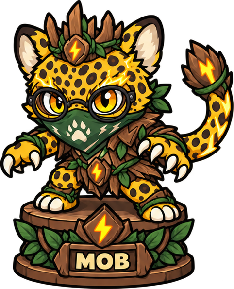
イベント
雷 ATK 140 / DEF 140公開中
このターン最大2回攻撃できる。攻撃するたび、このターン中ATK+20（累積）。同じ相手を続けて攻撃してもよい。ダイレクトアタック不可。
ピラミッド・ガーディアンズ
無 ATK 120 / DEF 150公開中
相手の攻撃対象を別の味方に移し替える。
魔法使い / 砂漠 / イベントボスピラミッド・ガーディアンズ
光 ATK 220 / DEF 220公開中
相手のソウルスキルの対象を、このフィギュアへ変更する。対象変更できない効果の場合はその効果を無効にする。
モブカネドール × モブカネドール
モブカネドール × 砂漠
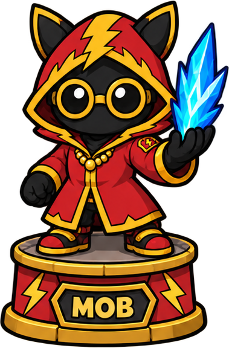
イベント
雷 ATK 150 / DEF 130公開中
相手1体のDEF-20。そのフィギュアは次のバトルフェイズで攻撃できない。
魔法使い / 田舎町 / イベントボス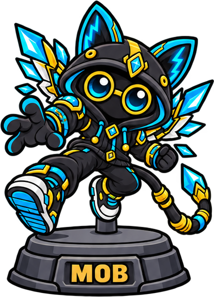
イベント
雷 ATK 175 / DEF 165公開中
このターン、相手フィールドの各フィギュアへ1回ずつ攻撃できる。2体目以降への攻撃時ATK+10。
ネオン街 / イベントボスイベント
火 ATK 150 / DEF 190公開中
相手1体のATK-20。そのフィギュアが次に攻撃するまでDEFも-10。
モブヒートロック × 火属性
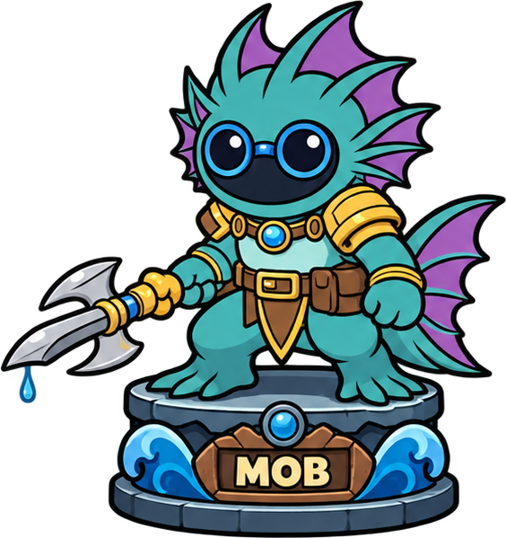
イベント
水 ATK 170 / DEF 170公開中
相手1体のATK-20。次の相手ターン、そのフィギュアは攻撃かフュージョン素材化のどちらか一方しか行えない。
海底 × 水属性
イベント
地 ATK 160 / DEF 180公開中
相手1体のATK-20。次の相手ターン、そのフィギュアはソウルスキルを発動できない。
田舎町 × 草原
イベント
闇 ATK 150 / DEF 130公開中
相手1体のDEF-20。次の相手ターン終了まで、そのフィギュアをソウルフュージョン素材にできない。
田舎町イベント
水 ATK 120 / DEF 160公開中
自分ライフを20回復する。撃破済みのシードソウル1体をシードデッキの一番下へ戻す。
魔法使い / ドラゴン / 田舎町 / イベントボス / 不気味なオーライベント
水 ATK 130 / DEF 150公開中
相手1体のATK-20。次の相手ターン、そのフィギュアはソウルスキルを発動できない。
魔法使い / ネオン街 / イベントボスイベント
火 ATK 150 / DEF 125公開中
破壊された時、山札に残っているモブレッドバードを1体召喚する。
マグマ / イベントボス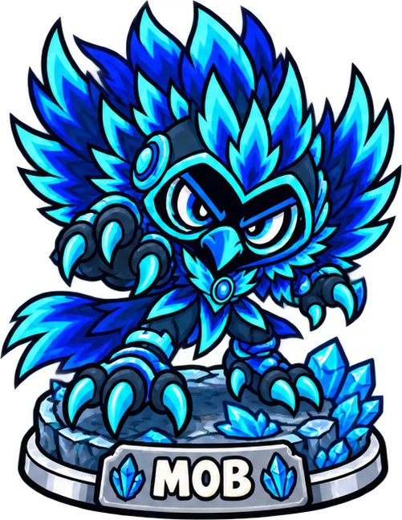
イベント
水 ATK 130 / DEF 140公開中
破壊された時、山札に残っているモブブルーバードを1体召喚する。
マグマ / イベントボス砂漠を統べる王
光 ATK 155 / DEF 185公開中
自分ライフを20回復する。味方1体に付いているATK/DEF低下効果を解除する。
砂漠 ×
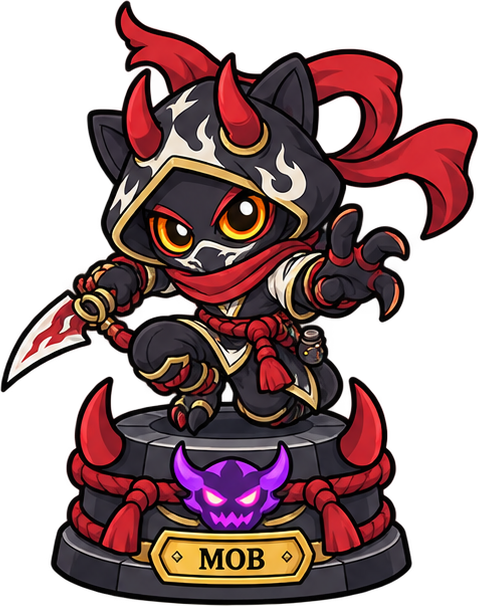
イベント
闇 ATK 200 / DEF 220公開中
味方の闇属性フィギュアはこのターン、ATKが20アップし、2回攻撃出来る。
魔王城 × イベントボス
イベント
闇 ATK 195 / DEF 225公開中
相手1体のDEF-20。次の相手ターン終了まで、そのフィギュアをソウルフュージョン素材にできない。
魔王城 ×
イベント
水 ATK 125 / DEF 120公開中
相手の攻撃を無効にする。
草原 / スピードスターイベント
風 ATK 110 / DEF 130公開中
攻撃対象を別の味方へ変更する。変更後の味方はその攻撃中DEF+20。
草原 / スピードスターイベント
風 ATK 160 / DEF 180公開中
攻撃対象を別の味方へ変更する。変更後の味方はその攻撃中DEF+20。
モブサバンナ × 草原
モブカゼサバンナ × モブミズサバンナ
イベント
風 ATK 210 / DEF 230公開中
攻撃対象をこのフィギュアへ変更し、その攻撃中DEF+50。差分ライフダメージは0。
モブサバンナ × 闇属性
イベント
水 ATK 130 / DEF 140公開中
このターン、このフィギュアは戦闘では破壊されない。さらに、このターン攻撃を受けるとATKとDEFを30アップする。
ソウル / 草原 / 火炎 / もちもちイベント
火 ATK 155 / DEF 185公開中
このターン相手フィールド全員へ1回ずつ攻撃できる。1体撃破するたび、残っている相手全体のDEF-10。
モブファイト × 火属性
モブファイト × モブファイト
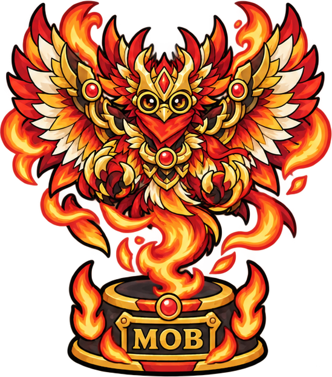
イベント
火 ATK 305 / DEF 325公開中
メインスキル:味方全体のDEFを30アップする。
パッシブ:破壊された時、1度だけ復活する。この効果が発動した時、自分のライフを50回復する。（同じ個体につき1戦1回。別の蘇生でも自動復活権は戻らない。）
火属性 ×
イベント
光 ATK 140 / DEF 140公開中
自分の場のとびっきりのスイーツを持つフィギュア1体につき、このフィギュアのATKとDEFを25アップする。
美味しい食べ物 / スイーツ / とびっきりのスイーツ / 魔法使い / イベントボス / 影の実力者イベント
光 ATK 200 / DEF 220公開中
自分がスキルを発動する度、このフィギュアのATKとDEFを20アップする。
美味しい食べ物 × ネオン街
モブカスタード × モブカスタード
イベント
雷 ATK 130 / DEF 150公開中
相手1体のDEF-20。そのフィギュアは次のバトルフェイズで攻撃できない。
ネオン街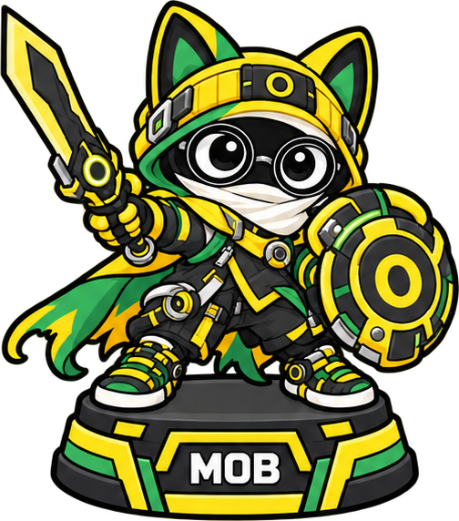
イベント
雷 ATK 140 / DEF 140公開中
味方全体のDEF+20。次の相手ターン、最初に発生する差分ライフダメージを0にする。
ネオン街イベント
雷 ATK 150 / DEF 130公開中
攻撃対象をこのフィギュアへ変更し、その攻撃中DEF+40。差分ライフダメージは0。
ネオン街イベント
雷 ATK 210 / DEF 220公開中
このターン、相手フィールドの各フィギュアへ1回ずつ攻撃できる。2体目以降への攻撃時ATK+20。
× 光属性
モブマグネットM × モブマグネットO
モブマグネットM × モブマグネットB
モブマグネットO × モブマグネットB
イベント
風 ATK 140 / DEF 140公開中
味方全体のDEF+20。このターン、相手のDEFアップ効果を一時的に無効化する。
イベントボスイベント
風 ATK 170 / DEF 170公開中
相手の攻撃を無効にし、ライフを30ポイント回復する。
草原 × 美味しい食べ物
モブトイティラ × 美味しい食べ物
イベント
水 ATK 170 / DEF 170公開中
相手フィールド全体のDEFを-20する。このターン、このフィギュアは相手フィールド全員を攻撃対象に選べる。
草原 × 水属性
モブトイティラ × 水属性
イベント
風 ATK 280 / DEF 270公開中
メインスキル:墓地に存在する 美味しい食べ物 タグを持つフィギュア1体につき、このターン中ATKとDEFが10アップする。
パッシブ:場に出ている 美味しい食べ物 タグを持つフィギュア1体につき、ATKとDEFが20アップする 。
草原 × 美味しい食べ物
モブトイティラ・ムシャ × モブトイティラ・ビーム
イベント
光 ATK 135 / DEF 145公開中
このフィギュアが破壊された時、1度だけ復活する。復活時、このフィギュアのDEFは30アップした状態で復活する。※同名が存在する場合も、この効果はフィギュア毎に発生する
美味しい食べ物 / 遠距離攻撃 / もちもち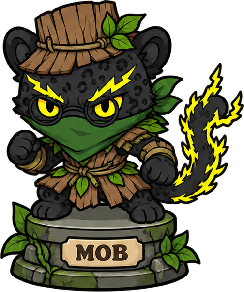
イベント
雷 ATK 165 / DEF 175公開中
このターン最大2回攻撃できる。攻撃するたび、このターン中ATK+20（累積）。同じ相手を続けて攻撃してもよい。ダイレクトアタック不可。
モブビリオン × 雷属性
モブビリオン × 闇属性
ピラミッド・ガーディアンズ
地 ATK 155 / DEF 185公開中
このターン、タグ:砂漠 を持つ自分のフィギュアは2回攻撃出来る。
砂漠 × 砂漠
ピラミッド・ガーディアンズ
風 ATK 150 / DEF 190公開中
相手のスキルの発動を無効にし、このフィギュアのATKを20アップする。
砂漠 × 闇属性
イベント
光 ATK 180 / DEF 160公開中
攻撃対象をこのフィギュアへ変更し、その攻撃中DEF+40。差分ライフダメージは0。
田舎町 × 地属性
イベント
火 ATK 180 / DEF 160公開中
このターンATK+20。ATKが相手DEFを30以上上回った場合、差分ライフダメージ+20。
火属性 × 水属性
イベント
風 ATK 270 / DEF 220公開中
メインスキル:このターン全ての攻撃を回避する。
パッシブ:このフィギュアはターン開始毎にATKが20アップする。（成長は自分ターン開始時。）
スピードスター × 草原
イベント
闇 ATK 130 / DEF 150公開中
相手のソウルスキルの対象を、このフィギュアへ変更する。対象変更できない効果の場合はその効果を無効にする。
魔法使い / 田舎町 / イベントボスイベント
地 ATK 140 / DEF 130公開中
相手1体のATK-20。次の相手ターン、そのフィギュアはソウルスキルを発動できない。
美味しい食べ物 / キュート / 魔法使い / 田舎町海底を救うクリアスイーツ
水 ATK 100 / DEF 120公開中
味方全体のDEF+30。次の相手ターン、最初に発生する差分ライフダメージを0にする。
美味しい食べ物 / 海底イベント
風 ATK 220 / DEF 220公開中
このターン、攻撃するたびATK+30（累積）。撃破した場合は別の相手1体へ追加攻撃できる。
ドラゴン × 火属性
イベント
闇 ATK 230 / DEF 210公開中
相手のソウルスキルの対象を、このフィギュアへ変更する。対象変更できない効果の場合はその効果を無効にする。
部族村 × 闇属性
イベント
地 ATK 155 / DEF 185公開中
味方全体のDEF+20。次の相手ターン、最初に発生する差分ライフダメージを0にする。
イベントボス × 闇属性
イベント
無 ATK 265 / DEF 250公開中
メインスキル:攻撃対象をこのフィギュアへ変更し、その攻撃中DEF+50。差分ライフダメージは0。
パッシブ:イベントボスのタグを持つフィギュアのATKとDEFを20アップする。
モブカセット × 闇属性
イベント
雷 ATK 245 / DEF 280公開中
メインスキル:相手の攻撃を無効にし、DEFを20ダウンする。
パッシブ:機械の力 タグを持つフィギュアのDEFを30アップする。
モブマグネットMOB × 水属性
イベント
火 ATK 185 / DEF 155公開中
このターン、攻撃するたびATK+20（累積）。撃破した場合は別の相手1体へ追加攻撃できる。
マグマ × 地属性
イベント
火 ATK 165 / DEF 175公開中
このターン、このフィギュアは戦闘では破壊されない。このスキルが発動する度、DEFを30アップする。
マグマ × 地属性
イベント
火 ATK 140 / DEF 140公開中
相手全体のDEF-20。
美味しい食べ物 / 遠距離攻撃 / スイーツ / もちもちピラミッド・ガーディアンズ
闇 ATK 160 / DEF 180公開中
攻撃対象をこのフィギュアへ変更し、その攻撃中DEF+40。差分ライフダメージは0。
砂漠 × 地属性
イベント
火 ATK 280 / DEF 270公開中
メインスキル:スキルを発動した相手フィギュアを破壊する。この効果を発動した場合、このフィギュアはスキルとパッシブを失う。
パッシブ:自分の手札1枚につき、このフィギュアのATKは10アップする。
イベントボス × 火属性
イベント
無 ATK 275 / DEF 270公開中
メインスキル:相手1体のDEF-30。そのフィギュアは3ターンの間ソウルスキルを発動出来なくなる。
パッシブ:立ちはだかる強敵 タグを持つフィギュアのATKを20アップする。
魔王城 × イベントボス
イベント
闇 ATK 320 / DEF 300公開中
メインスキル:攻撃対象をこのフィギュアへ変更し、その攻撃中DEF+60。差分ライフダメージは0。
パッシブ:攻撃を受ける度、このフィギュアのATKは10アップする。
×
砂漠を統べる王
地 ATK 130 / DEF 145公開中
タグ:草原 を持つフィギュアのATKとDEFを25アップする。次の自分のターンまで、相手はこのフィギュアを攻撃対象に選べない。
ソウル / 砂漠 / 遠距離攻撃 / MUSIC砂漠を統べる王
風 ATK 130 / DEF 145公開中
相手フィールド全体のDEFを-20する。このターン、このフィギュアは相手フィールド全員を攻撃対象に選べる。
ソウル / 砂漠 / 遠距離攻撃 / MUSIC砂漠を統べる王
水 ATK 180 / DEF 160公開中
このターン最大2回攻撃できる。攻撃する度、タグ:草原 or MUSIC を持つ味方フィギュア全員のATKを20アップする。
モブハリネット × MUSIC
モブエリマッキン × 砂漠
モブハリネット × モブエリマッキン
砂漠を統べる王
風 ATK 310 / DEF 290公開中
メインスキル:このターン、味方全体のATK+30。さらにMUSICまたは団結力タグを持つ味方はATK+20（合計ATK+50、両タグを持つ場合も追加は1回）。
パッシブ:このフィギュアが撃破された時、団結力タグを持つフィギュア1体を墓地から召喚する。
モブホラプエ × MUSIC
モブホラプエ × モブオンブ
砂漠を統べる王
地 ATK 170 / DEF 170公開中
このターン最大2回攻撃できる。攻撃するたび、このターン中ATK+20（累積）。同じ相手を続けて攻撃してもよい。ダイレクトアタック不可。
砂漠 × MUSIC
イベント
水 ATK 150 / DEF 140公開中
このターン最大2回攻撃できる。攻撃するたびATK+20（累積）。敵を撃破する度、ライフを20回復。
美味しい食べ物 / スイーツ / とびっきりのスイーツ / 魔法使い / 部族村 / イベントボスイベント
水 ATK 230 / DEF 200公開中
このターン最大2回攻撃できる。攻撃するたびATK+20（累積）。このフィギュアの攻撃に対して相手はスキルを発動出来ない。
モブミント × キュート
モブミント × モブミント
イベント
光 ATK 140 / DEF 130公開中
相手のスキルを無効化し、このフィギュアはモブネコマカロンに進化する。※ミドルデッキに存在する場合のみ進化
美味しい食べ物 / スイーツ / とびっきりのスイーツ / マグマイベント
光 ATK 220 / DEF 240公開中
相手の攻撃か、相手のスキル発動を無効にし、敵全体のATKを30ダウンする。
モブマカロン × キュート
モブマカロン × モブマカロン
モブライフ
風 ATK 115 / DEF 155公開中
このフィギュアが攻撃を受ける度ライフを20回復する。
ぷにモブ × 風属性
モブライフ
地 ATK 135 / DEF 130公開中
発生条件:相手フィギュアの攻撃時相手の攻撃を無効にする。
ぷにモブ × 地属性
パンとおやつ
光 ATK 150 / DEF 165公開中
相手フィギュアがスキルを発動した時、そのスキルを無効にし、味方全体のDEFを20アップする。タグ マスコットを持つ場合、さらに10アップする。
ぷにモブ × 光属性
モブライフ
水 ATK 130 / DEF 140公開中
自分の場の全てのフィギュアのATKを20アップする。タグ マスコットを持つ場合、さらに10あっぷする。
ぷにモブ × 水属性
モブライフ
雷 ATK 145 / DEF 125公開中
手札を1枚捨てる。このターン中、このフィギュアのATKを30アップする。
ぷにモブ × 雷属性
モブライフ
無 ATK 120 / DEF 130公開中
自分の場と相手の場のフィギュアを1体ずつ選択する。選択したフィギュア同士をこのターン中のみ入れ替える。
ぷにモブ × 無属性
パンとおやつ
火 ATK 140 / DEF 170公開中
発生条件:相手フィギュア攻撃時相手の攻撃を無効にし、このフィギュアのATKとDEFを20アップする。
ぷにモブ × 火属性
モブライフ
無 ATK 140 / DEF 140公開中
敵全体のDEFを30ダウンさせる。
ぷにモブ × マスコット
ヒーローベル
光 ATK 90 / DEF 110公開中
このターン、自分の場のフィギュアは1ターンに2回攻撃出来る。すでに回数バフがかかっている場合、回数が多い方を優先する。
ヒーローベル / ドラゴン / キュート / スピードスター / ネオン街ヒーローベル
光 ATK 150 / DEF 135公開中
発動条件:相手フィギュアがスキルを発動した時スキルの発動を無効にし、そのフィギュアのDEFを20ダウンする。
ヒーローベル × ぷにモブ
ヒーローベル
光 ATK 100 / DEF 90公開中
自分の場のフィギュア1体を選択する。選択したのATKとDEFを10か30か50アップする。アップした分、このフィギュアのATKとDEFをダウンする。
ヒーローベル / スピードスター / キュート / ネオン街ヒーローベル
光 ATK 120 / DEF 155公開中
デッキか墓地からタグ ヒーローベルを持つフィギュア1体を召喚する。この方法で召喚したフィギュアはATKとDEFが40アップし、スキル回数が回復する。
ヒーローベル × ぷにモブ
パンとおやつ
地 ATK 130 / DEF 130公開中
自分のライフを20回復し、味方フィギュア1体のDEFを20アップする。
マスコット × 地属性
パンとおやつ
火 ATK 140 / DEF 125公開中
自分のライフを20回復し、味方フィギュア1体のATKを20アップする。
マスコット × 火属性
パンとおやつ
風 ATK 110 / DEF 140公開中
自分のライフを20回復し、味方フィギュア全体のATKを10アップする。
マスコット × 風属性
パンとおやつ
無 ATK 125 / DEF 125公開中
自分のライフを20回復し、味方フィギュア全体のDEFを10アップする。
マスコット × 無属性
海辺のチャンピオンベルト
火 ATK 100 / DEF 60公開中
このターンATK+20。相手のDEF上昇効果を無視し、撃破時の差分ライフダメージ+10。
ボクサー / スピードスター / 田舎町海辺のチャンピオンベルト
闇 ATK 70 / DEF 100公開中
このフィギュアを対象にした攻撃を1回無効にし、自分ライフを10回復する。
ボクサー / スピードスター / 田舎町海辺のチャンピオンベルト
風 ATK 160 / DEF 120公開中
次の相手ターン終了まで、このフィギュアのATK+30、DEF+20。
ボクサー ×
海辺のチャンピオンベルト
水 ATK 150 / DEF 150公開中
相手1体のDEF-30。このターンATK=DEFでもその相手を撃破できる。
ボクサー ×
PB2
闇 ATK 120 / DEF 170公開中
味方全体のDEF+20。次の相手ターン終了まで、このフィギュアは破壊されない。
ぷにモブ × 闇属性属性
モブピンクバルーン × モブイエローバルーン
モブイエローバルーン × モブイエローバルーン
PB2
雷 ATK 80 / DEF 80公開中
手札1体をデッキ下へ戻し、同じタグを1つ以上持つシード1体を手札へ加える。
PB2 / MUSIC / マスコットPB2
風 ATK 70 / DEF 90公開中
次のソウルフュージョンで召喚するフィギュアのATKとDEFを+20。
PB2 / マスコットPB2
火 ATK 230 / DEF 235公開中
メインスキル:相手フィールド全体のDEFを-30する。このターン、このフィギュアの攻撃で撃破した時の差分ライフダメージを+20する。
パッシブ:PB2 タグを持つ全てのフィギュアのATKとDEFを40アップする。
PB2 × マスコット
モブパープルストーン × 火属性属性
モブオブジェ
風/地 ATK 0 / DEF 90公開中
相手の攻撃時、その攻撃を無効にして相手に10ダメージを与える。
モブオブジェ / マスコットモブオブジェ
火/光 ATK 0 / DEF 90公開中
相手の攻撃時、攻撃対象の自分のフィギュアのDEFを30アップする。
モブオブジェ / マスコットモブオブジェ
水/闇 ATK 0 / DEF 90公開中
相手のスキル発動時、そのスキルを無効にする。
モブオブジェ / マスコットモブオブジェ
雷/無 ATK 0 / DEF 90公開中
相手がフィギュアを召喚(融合含む)した時、そのフィギュアのATKを25ダウンする。
モブオブジェ / マスコットモブ兵士
地 ATK 80 / DEF 60公開中
相手1体のDEF-20。このターン、その相手への攻撃はDEF上昇効果を無視する。
モブ兵士 / 遠距離攻撃 / 草原モブ兵士
火 ATK 90 / DEF 90公開中
攻撃対象をこのフィギュアへ変更し、その攻撃中DEF+30。
モブ兵士 / 草原モブ兵士
闇 ATK 90 / DEF 50公開中
このターンATK+20。ATKが相手DEFを30以上上回った場合、差分ライフダメージ+20。
モブ兵士 / 草原モブ兵士
闇 ATK 160 / DEF 120公開中
相手1体のDEF-30。次の相手ターン終了まで、そのフィギュアをソウルフュージョン素材にできない。
モブ兵士 × 闇属性
モブ兵士
闇 ATK 100 / DEF 70公開中
このターンATK+20。攻撃対象変更・守護効果を無視して任意の相手を攻撃できる。
モブ兵士 / 草原モブ兵士
闇 ATK 140 / DEF 160公開中
攻撃対象をこのフィギュアへ変更し、その攻撃中DEF+50。差分ライフダメージは0。
モブ兵士 × モブ兵士
モブ兵士
地 ATK 80 / DEF 70公開中
このターンATK+20、DEF+20。次の相手ターン終了時までこの強化を維持する。
モブ兵士 / 草原モブ兵士
地 ATK 100 / DEF 160公開中
自分ライフを20回復し、味方全体のDEF+20。
モブ兵士 × モブ兵士
モブグリーンバルーン × モブイエローバルーン
モブ兵士
光 ATK 260 / DEF 245公開中
メインスキル:自分フィールド全体のATKとDEFを+30する。このターン、最初に味方が撃破される場合、その撃破を1回だけ無効にする。
パッシブ:このフィギュアは1ターンに1度相手の攻撃を無効にする。
モブ兵士 ×
モブパプソルジャー × モブグリヒーラー
モブ兵士
火 ATK 170 / DEF 110公開中
相手フィールド全体のDEF-20。
モブ兵士 × 火属性
モブ兵士
火 ATK 110 / DEF 70公開中
このターンATK+30。攻撃対象変更・守護効果を無視して任意の相手を攻撃できる。
モブ兵士 / 遠距離攻撃 / 草原海辺のチャンピオンベルト
火 ATK 90 / DEF 50公開中
このターンATK+20、DEF+20。次の相手ターン終了時までこの強化を維持する。
ボクサー / 田舎町海辺のチャンピオンベルト
雷 ATK 80 / DEF 60公開中
このターンATK+20。このフィギュアがこのターン相手を撃破した時、1体ドローする。
ボクサー / 田舎町海辺のチャンピオンベルト
水 ATK 80 / DEF 70公開中
相手1体のDEF-20。このターン、その相手への攻撃はDEF上昇効果を無視する。
ボクサー / 田舎町海辺のチャンピオンベルト
風 ATK 90 / DEF 50公開中
このターンATK+20。ATKが相手DEFを30以上上回った場合、差分ライフダメージ+20。
ボクサー / 田舎町海辺のチャンピオンベルト
火 ATK 150 / DEF 110公開中
このターンATK+30。撃破した場合、別の相手1体へ追加攻撃できる。
ボクサー ×
海辺のチャンピオンベルト
闇 ATK 140 / DEF 120公開中
このフィギュアのATKはこのターン中30アップする。
ボクサー ×
海辺のチャンピオンベルト
光 ATK 160 / DEF 130公開中
このターン最大3回攻撃できる。攻撃するたび、このターン中ATK+15（累積）。同じ相手を続けて攻撃してもよい。ダイレクトアタック不可。
ボクサー ×
海辺のチャンピオンベルト
光 ATK 250 / DEF 240公開中
メインスキル:このターン最大2回攻撃できる。攻撃するたび、このターン中ATK+30（累積）。同じ相手を続けて攻撃してもよい。ダイレクトアタック不可。
パッシブ:ボクサー タグを持つ自分の場のフィギュアのDEFを25アップする。
ボクサー ×
モブレッドスマッシュ × モブシルバーショットガン

スイーツ・ストリート
風 ATK 70 / DEF 65公開中
このターンATK+20。このフィギュアがこのターン相手を撃破した時、1体ドローする。
スイーツ / スピードスター / 美味しい食べ物 / とびっきりのスイーツ / 田舎町
スイーツ・ストリート
地 ATK 80 / DEF 60公開中
このターン最大5回攻撃できる。攻撃するたび、このターン中ATK+10（累積）。同じ相手を続けて攻撃してもよい。ダイレクトアタック不可。
スイーツ / 美味しい食べ物 / とびっきりのスイーツ / 田舎町スイーツ・ストリート
風 ATK 60 / DEF 80公開中
相手1体のDEF-20。そのフィギュアは次のバトルフェイズで攻撃できない。
スイーツ / MUSIC / 美味しい食べ物 / とびっきりのスイーツ / 田舎町スイーツ・ストリート
風 ATK 75 / DEF 60公開中
このフィギュアを手札へ戻し、その攻撃を終了する。
スイーツ / 美味しい食べ物 / とびっきりのスイーツ / 田舎町スイーツ・ストリート
地 ATK 60 / DEF 75公開中
自分ライフを20回復する。撃破済みのシードソウル1体をシードデッキの一番下へ戻す。
スイーツ / 美味しい食べ物 / とびっきりのスイーツ / 田舎町スイーツ・ストリート
光 ATK 120 / DEF 160公開中
このフィギュアが攻撃対象になった時、その攻撃中DEF+20。
とびっきりのスイーツ × 美味しい食べ物
スイーツ・ストリート
火 ATK 180 / DEF 140公開中
このターンATK+30。ATKが相手DEFを30以上上回った場合、差分ライフダメージ+20。
火属性 × とびっきりのスイーツ
スイーツ・ストリート
雷 ATK 105 / DEF 115公開中
相手フィールド全体のATKを-10。このターン、相手フィールド全員へ1回ずつ攻撃できる。
美味しい食べ物 / MUSIC / とびっきりのスイーツ / 田舎町スイーツ・ストリート
水 ATK 155 / DEF 185公開中
次の相手ターン終了まで、このフィギュアのATKを25、DEFを30アップする。
水属性 × とびっきりのスイーツ
スイーツ・ストリート
火 ATK 155 / DEF 130公開中
このターン最大2回攻撃できる。攻撃するたびATK+20（累積）。攻撃対象変更・守護効果を無視して対象を選べる。
スイーツ / 伝統 / 美味しい食べ物 / とびっきりのスイーツ / 田舎町
スイーツ・ストリート
地 ATK 75 / DEF 65公開中
このターン最大3回攻撃できる。攻撃するたび、このターン中ATK+15（累積）。同じ相手を続けて攻撃してもよい。ダイレクトアタック不可。
スイーツ / 風の如く / 美味しい食べ物 / とびっきりのスイーツ / 田舎町スイーツ・ストリート
地 ATK 70 / DEF 60公開中
このフィギュアを手札へ戻し、手札から別のシードソウル1体を召喚できる。
スイーツ / 伝統 / 美味しい食べ物 / とびっきりのスイーツ / 田舎町スイーツ・ストリート
地 ATK 65 / DEF 75公開中
攻撃対象をこのフィギュアへ変更し、その攻撃中DEF+30。
スイーツ / 美味しい食べ物 / とびっきりのスイーツ / 田舎町スイーツ・ストリート
風 ATK 60 / DEF 70公開中
自分ライフを20回復する。手札が4体以下ならシードデッキから1体ドローする。
スイーツ / 美味しい食べ物 / とびっきりのスイーツ / 田舎町スイーツ・ストリート
光 ATK 65 / DEF 65公開中
自分ライフを20回復する。味方1体は次に撃破される時、1度だけ撃破されず場に残る。
スイーツ / 魔法使い / 美味しい食べ物 / とびっきりのスイーツ / 田舎町スイーツ・ストリート
水 ATK 70 / DEF 70公開中
味方全体のDEF+20。次の相手ターン終了まで、相手のDEF低下系ソウルスキルを1回無効にする。
スイーツ / 職人 / 美味しい食べ物 / とびっきりのスイーツ / 田舎町スイーツ・ストリート
水 ATK 110 / DEF 110公開中
このターン最大2回攻撃できる。攻撃するたび、このターン中ATK+20（累積）。同じ相手を続けて攻撃してもよい。ダイレクトアタック不可。
スイーツ / スピードスター / 風の如く / キュート / 美味しい食べ物 / とびっきりのスイーツ / 田舎町スイーツ・ストリート
地 ATK 95 / DEF 125公開中
相手1体のDEF-20。次の相手ターン終了まで、そのフィギュアをソウルフュージョン素材にできない。
スイーツ / 職人 / 伝統 / 美味しい食べ物 / とびっきりのスイーツ / 田舎町スイーツ・ストリート
雷 ATK 125 / DEF 150公開中
味方1体のATK+20。その味方はこのターン守護効果を無視して攻撃対象を選べる。
スイーツ / MUSIC / 魔法使い / 特殊能力 / 美味しい食べ物 / とびっきりのスイーツ / 田舎町スイーツ・ストリート
火 ATK 180 / DEF 200公開中
このターン相手フィールド全員へ1回ずつ攻撃できる。1体撃破するたび、このターン残っている相手全体のDEFを15ダウンする。
火属性 × 美味しい食べ物
スイーツ・ストリート
水 ATK 60 / DEF 75公開中
自分ライフを20回復する。手札が4体以下ならシードデッキから1体ドローする。
スイーツ / スピードスター / 美味しい食べ物 / とびっきりのスイーツ / 田舎町スイーツ・ストリート
地 ATK 80 / DEF 60公開中
このターンATK+20。攻撃対象変更・守護効果を無視して任意の相手を攻撃できる。
スイーツ / 職人 / 美味しい食べ物 / とびっきりのスイーツ / 田舎町スイーツ・ストリート
光 ATK 60 / DEF 70公開中
自分ライフを20回復する。味方1体は次に撃破される時、1度だけ撃破されず場に残る。
スイーツ / 魔法使い / 美味しい食べ物 / とびっきりのスイーツ / 田舎町スイーツ・ストリート
地 ATK 60 / DEF 80公開中
攻撃対象をこのフィギュアへ変更し、その攻撃中DEF+30。
美味しい食べ物 / 伝統 / とびっきりのスイーツ / 田舎町スイーツ・ストリート
雷 ATK 70 / DEF 65公開中
味方全体のDEF+20。次の相手ターン終了まで、相手のDEF低下系ソウルスキルを1回無効にする。
スイーツ / MUSIC / 機械の力 / 美味しい食べ物 / とびっきりのスイーツ / 田舎町スイーツ・ストリート
風 ATK 75 / DEF 60公開中
このターン最大3回攻撃できる。攻撃するたび、このターン中ATK+15（累積）。同じ相手を続けて攻撃してもよい。ダイレクトアタック不可。
スイーツ / キュート / スピードスター / 美味しい食べ物 / とびっきりのスイーツ / 田舎町スイーツ・ストリート
闇 ATK 115 / DEF 100公開中
このターン、相手フィールドの各フィギュアへ1回ずつ攻撃できる。2体目以降への攻撃時ATK+10。
スイーツ / 美味しい食べ物 / とびっきりのスイーツ / 田舎町スイーツ・ストリート
地 ATK 100 / DEF 120公開中
自分ライフを20回復し、味方全体のDEF+20。
美味しい食べ物 / スイーツ / 伝統 / 職人 / とびっきりのスイーツ / 田舎町海底を救うクリアスイーツ
水 ATK 130 / DEF 150公開中
自分ライフを20回復する。味方1体に付いているATK/DEF低下効果を解除する。
スイーツ / もちもち / 魔法使い / キュート / 美味しい食べ物 / とびっきりのスイーツ / 田舎町スイーツ・ストリート
光 ATK 140 / DEF 150公開中
攻撃対象をこのフィギュアへ変更し、その攻撃中DEF+40。差分ライフダメージは0。
スイーツ / ドラゴン / 美味しい食べ物 / とびっきりのスイーツ / 田舎町海底に伝わる沈没船
水 ATK 60 / DEF 80公開中
撃破済みのシードソウル1体をシードデッキの一番下へ戻す。
深海探検 / キュート / 職人 / 海底 / 海底に伝わる沈没船海底に伝わる沈没船
水 ATK 65 / DEF 75公開中
このターンに行う次のソウルフュージョンで召喚したフィギュアのDEF+30。
深海探検 / キュート / 職人 / 海底 / 海底に伝わる沈没船海底に伝わる沈没船
雷 ATK 70 / DEF 70公開中
ミドル/MOBソウル領域からフュージョン可能な候補をすべて表示し、そのターン中表示を固定する。
深海探検 / 海底 / 海底に伝わる沈没船海底に伝わる沈没船
地 ATK 60 / DEF 80公開中
自分ライフを20回復する。撃破済みのシードソウル1体をシードデッキの一番下へ戻す。
深海探検 / 大地の力 / 海底 / 海底に伝わる沈没船海底に伝わる沈没船
地 ATK 65 / DEF 75公開中
このターンATK+20。攻撃対象変更・守護効果を無視して任意の相手を攻撃できる。
深海探検 / 大地の力 / 草原 / 海底に伝わる沈没船海底を救うクリアスイーツ
水 ATK 120 / DEF 80公開中
このフィギュアを対象にした攻撃を1回無効にし、自分ライフを10回復する。
モブスラゼリー × モブソーダスプラッシャー
マグマの職人工房
水 ATK 90 / DEF 90公開中
このターンATK+20。このフィギュアがこのターン相手を撃破した時、1体ドローする。
深海探検 / マグマ / 機械の力 / マグマの職人工房マグマの職人工房
火/水 ATK 95 / DEF 85公開中
このターンATK+20、DEF+20。次の相手ターン終了時までこの強化を維持する。
火炎 / マグマ / 機械の力 / マグマの職人工房海底に伝わる沈没船
光 ATK 240 / DEF 240公開中
メインスキル:このターン海底タグを持つ味方フィギュアのDEFは25アップする。
パッシブ:このフィギュアのATKとDEFは場に出ている海底タグフィギュアの数×10アップする。
モブシルクラ・ムーンローゼ × モブシルクラ・ミストローゼ
海底に伝わる沈没船
闇 ATK 130 / DEF 110公開中
相手1体のDEF-30。次の相手ターン、そのフィギュアはソウルスキルを発動できない。
深海探検 / 特殊能力 / 魔王城 / 海底に伝わる沈没船天空天文
風 ATK 65 / DEF 75公開中
このフィギュアを手札へ戻し、手札から別のシードソウル1体を召喚できる。
天空天文 / 風の如く / 草原天空天文
風 ATK 70 / DEF 70公開中
次のソウルフュージョンで召喚するフィギュアのATKとDEFを+20。
天空天文 / 風の如く / 草原天空天文
光 ATK 60 / DEF 80公開中
ミドル/MOBソウル領域からフュージョン可能な候補をすべて表示し、そのターン中表示を固定する。
天空天文 / 草原天空天文
火 ATK 65 / DEF 75公開中
味方1体のATK+20。その味方はこのターン守護効果を無視して攻撃対象を選べる。
天空天文 / 火炎 / 草原天空天文
闇 ATK 70 / DEF 70公開中
相手1体のATK-20。そのフィギュアが次に攻撃するまでDEFも-10。
天空天文 / 特殊能力 / 草原天空天文
風 ATK 60 / DEF 80公開中
このターンATK+20。このフィギュアがこのターン相手を撃破した時、1体ドローする。
天空天文 / 風の如く / 田舎町天空天文
光 ATK 95 / DEF 85公開中
味方1体に、このフィギュアが持つ通常タグ1つをターン終了まで追加する。
天空天文 / 魔王城天空天文
雷 ATK 100 / DEF 80公開中
このターン最大3回攻撃できる。攻撃するたび、このターン中ATK+15（累積）。同じ相手を続けて攻撃してもよい。ダイレクトアタック不可。
天空天文 / 草原天空天文
闇 ATK 110 / DEF 100公開中
相手1体のDEF-20。次の相手ターン、そのフィギュアはソウルスキルを発動できない。
天空天文 / 特殊能力 / 魔王城天空天文
光 ATK 135 / DEF 105公開中
相手のソウルスキルを無効にする。その後、自分フィールドのフィギュア1体のATKとDEFを+40する。
天空天文 / 魔王城和の妖精祭
火 ATK 70 / DEF 70公開中
このターンATK+20、DEF+20。次の相手ターン終了時までこの強化を維持する。
和の妖精祭 / 火炎 / チルタイム / 草原和の妖精祭
水 ATK 60 / DEF 80公開中
手札1体をデッキ下へ戻し、同じ属性を持つシードソウル1体をデッキから手札へ加える。
和の妖精祭 / チルタイム / 草原和の妖精祭
風 ATK 65 / DEF 75公開中
このターンATK+20。このフィギュアがこのターン相手を撃破した時、1体ドローする。
和の妖精祭 / 風の如く / チルタイム / 草原和の妖精祭
光 ATK 70 / DEF 70公開中
自分ライフを20回復する。味方1体に付いているATK/DEF低下効果を解除する。
和の妖精祭 / チルタイム / 草原和の妖精祭
地 ATK 60 / DEF 80公開中
このターンATK+20。ATKが相手DEFを30以上上回った場合、差分ライフダメージ+20。
和の妖精祭 / 大地の力 / チルタイム / 草原和の妖精祭
光 ATK 65 / DEF 75公開中
味方1体を選ぶ。その味方がこのターン撃破した場合、1体ドローする。
和の妖精祭 / チルタイム / 草原和の妖精祭
風 ATK 100 / DEF 80公開中
自分ライフを20回復する。味方1体は次に撃破される時、1度だけ撃破されず場に残る。
和の妖精祭 / 風の如く / チルタイム / 草原和の妖精祭
水 ATK 90 / DEF 90公開中
この攻撃中DEF+30。このフィギュアが撃破されても、その戦闘の差分ライフダメージを0にする。
和の妖精祭 / チルタイム / 草原和の妖精祭
闇 ATK 115 / DEF 95公開中
手札1体をデッキ下へ戻し、同じタグを1つ以上持つシード1体を手札へ加える。
和の妖精祭 / 特殊能力 / チルタイム / 草原和の妖精祭
光 ATK 140 / DEF 100公開中
味方全体のDEF+30。次の相手ターン、最初に発生する差分ライフダメージを0にする。
和の妖精祭 / チルタイム / 草原マグマの職人工房
地 ATK 90 / DEF 80公開中
味方のステータスダウン効果を全て取り除く。
大地の力 / 職人 / 草原 / マグマの職人工房 / マグママグマの職人工房
地 ATK 95 / DEF 75公開中
このターン、このフィギュアのATK+20、DEF+20。
大地の力 / 職人 / 草原 / マグマの職人工房 / マグママグマの職人工房
風 ATK 70 / DEF 70公開中
このフィギュアを手札へ戻し、手札から別のシードソウル1体を召喚できる。
風の如く / 職人 / 草原 / マグマの職人工房 / マグママグマの職人工房
水 ATK 60 / DEF 80公開中
相手の攻撃を無効にし、味方全体のDEF+20。
職人 / 草原 / マグマの職人工房 / マグママグマの職人工房
火 ATK 100 / DEF 75公開中
このターン、味方1体のDEFを40アップする。
火炎 / 職人 / 草原 / マグマの職人工房 / マグママグマの職人工房
雷 ATK 70 / DEF 70公開中
このターンATK+20。このフィギュアがこのターン相手を撃破した時、1体ドローする。
職人 / 草原 / マグマの職人工房 / マグママグマの職人工房
風 ATK 90 / DEF 90公開中
このフィギュアを対象にした攻撃を1回無効にし、自分ライフを10回復する。
風の如く / 職人 / 草原 / マグマの職人工房 / マグママグマの職人工房
雷 ATK 145 / DEF 170公開中
相手1体のDEF-20。このターン、その相手への攻撃はDEF上昇効果を無視する。
職人 / マグマの職人工房 / マグマ伝統を守る月
水 ATK 70 / DEF 100公開中
このターンATK+20。このフィギュアがこのターン相手を撃破した時、1体ドローする。
職人 / 伝統を守る月 / 魔法使い / 部族村レトロゲーム
風 ATK 90 / DEF 70公開中
このターンATK+20。このフィギュアがこのターン相手を撃破した時、1体ドローする。
レトロゲーム / マスコット / MUSIC / スピードスター / チルタイム / 職人 / ネオン街レトロゲーム
地 ATK 60 / DEF 80公開中
味方全体のDEF+20。次の相手ターン、ATK/DEF低下効果を1回無効にする。
レトロゲーム / マスコット / MUSIC / スピードスター / チルタイム / 職人 / ネオン街レトロゲーム
水 ATK 65 / DEF 75公開中
このフィギュアを対象にした攻撃を1回無効にする。
レトロゲーム / マスコット / MUSIC / スピードスター / チルタイム / 職人 / ネオン街レトロゲーム
地 ATK 70 / DEF 70公開中
撃破済みのシードソウル1体をシードデッキの一番下へ戻す。
レトロゲーム / マスコット / MUSIC / スピードスター / チルタイム / 職人 / ネオン街レトロゲーム
雷 ATK 60 / DEF 80公開中
相手1体のDEF-20。このターン、その相手への攻撃はDEF上昇効果を無視する。
レトロゲーム / マスコット / MUSIC / スピードスター / チルタイム / 職人 / ネオン街レトロゲーム
火 ATK 65 / DEF 75公開中
このターンATK+20。ATKが相手DEFを30以上上回った場合、差分ライフダメージ+20。
レトロゲーム / スピードスター / MUSIC / チルタイム / 職人 / ネオン街レトロゲーム
光 ATK 70 / DEF 70公開中
このターンに行う次のソウルフュージョンで召喚したフィギュアのDEF+30。
レトロゲーム / マスコット / MUSIC / スピードスター / チルタイム / 職人 / ネオン街レトロゲーム
火 ATK 90 / DEF 90公開中
このターンATK+20。攻撃対象変更・守護効果を無視して任意の相手を攻撃できる。
レトロゲーム / マスコット / MUSIC / スピードスター / チルタイム / 職人 / ネオン街レトロゲーム
光 ATK 115 / DEF 95公開中
味方全体のDEF+20。次の相手ターン終了まで、相手のDEF低下系ソウルスキルを1回無効にする。
レトロゲーム / マスコット / MUSIC / スピードスター / チルタイム / 職人 / ネオン街レトロゲーム
闇 ATK 120 / DEF 90公開中
相手1体のDEF-20。次の相手ターン、そのフィギュアはソウルスキルを発動できない。
レトロゲーム / マスコット / MUSIC / スピードスター / チルタイム / 職人 / ネオン街スイーツ・ストリート
風 ATK 80 / DEF 100公開中
手札の別の1体を墓地へ送り、シードデッキから2体ドローする。
スイーツ・ストリート / スイートビート・ストリート / MUSIC / スイーツ / キュート / 美味しい食べ物 / とびっきりのスイーツスイーツ・ストリート
水 ATK 80 / DEF 100公開中
このフィギュアを対象にした攻撃を無効にし、相手ライフに20ダメージを与える。
スイーツ・ストリート / ミッドナイト・シュガーライブ / MUSIC / スイーツ / キュート / 美味しい食べ物 / とびっきりのスイーツスイーツ・ストリート
光 ATK 70 / DEF 110公開中
次の相手ターン終了まで、このフィギュアと同じ属性を1つ以上持つ味方全体のATKとDEFを+20する。
スイーツ・ストリート / スイートビート・ストリート / MUSIC / スイーツ / キュート / 美味しい食べ物 / とびっきりのスイーツスイーツ・ストリート
雷 ATK 90 / DEF 90公開中
自分ライフを20消費し、このフィギュアと同じ属性を1つ以上持つシード1体をデッキから手札へ加える。
スイーツ・ストリート / ミッドナイト・シュガーライブ / MUSIC / スイーツ / キュート / 美味しい食べ物 / とびっきりのスイーツスイーツ・ストリート
水 ATK 70 / DEF 110公開中
相手1体のDEF-10。次の相手ターン終了まで、そのフィギュアはフュージョン素材にできない。シードデッキから1体ドローする。
スイーツ・ストリート / スイートビート・ストリート / MUSIC / スイーツ / キュート / 美味しい食べ物 / とびっきりのスイーツスイーツ・ストリート
闇 ATK 125 / DEF 155公開中
自分ライフを10回復する。シードデッキの上から3体までを確認し、1体を手札へ加える。残りの順番は変えない。
キュート × とびっきりのスイーツ
スイーツ・ストリート
風 ATK 90 / DEF 90公開中
自分の墓地からシード1体を手札へ戻す。
スイーツ・ストリート / ミッドナイト・シュガーライブ / MUSIC / スイーツ / キュート / 美味しい食べ物 / とびっきりのスイーツスイーツ・ストリート
火 ATK 100 / DEF 80公開中
相手1体のATK-10。相手ライフに20ダメージを与える。
スイーツ・ストリート / スイートビート・ストリート / MUSIC / スイーツ / キュート / 美味しい食べ物 / とびっきりのスイーツスイーツ・ストリート
火 ATK 80 / DEF 100公開中
自分の墓地からシード1体を手札へ戻す。
スイーツ・ストリート / レトロリミックス・ジャム / MUSIC / スイーツ / キュート / 美味しい食べ物 / とびっきりのスイーツスイーツ・ストリート
光 ATK 70 / DEF 110公開中
次の相手ターン終了まで、このフィギュアと同じ属性を1つ以上持つ味方全体のATKとDEFを+20する。
スイーツ・ストリート / スイートビート・ストリート / MUSIC / スイーツ / キュート / 美味しい食べ物 / とびっきりのスイーツスイーツ・ストリート
水 ATK 90 / DEF 90公開中
手札の別の1体を墓地へ送り、相手フィールドのシード1体を相手の手札へ戻す。
スイーツ・ストリート / ミッドナイト・シュガーライブ / MUSIC / スイーツ / キュート / 美味しい食べ物 / とびっきりのスイーツスイーツ・ストリート
地 ATK 80 / DEF 100公開中
シードデッキの上から3体までを確認し、その中の1体を手札へ加える。残りの順番は変えない。
スイーツ・ストリート / スイートビート・ストリート / MUSIC / スイーツ / キュート / 美味しい食べ物 / とびっきりのスイーツスイーツ・ストリート
闇 ATK 145 / DEF 175公開中
自分ライフを20消費し、相手のソウルスキルを無効にする。その後1体ドローする。
闇属性 × 美味しい食べ物
スイーツ・ストリート
雷 ATK 110 / DEF 90公開中
相手1体のATK-10。相手ライフに20ダメージを与える。
スイーツ・ストリート / レトロリミックス・ジャム / MUSIC / スイーツ / キュート / 美味しい食べ物 / とびっきりのスイーツスイーツ・ストリート
光 ATK 90 / DEF 110公開中
手札の別の1体を墓地へ送り、相手フィールドのシード1体を相手の手札へ戻す。
スイーツ・ストリート / ミッドナイト・シュガーライブ / MUSIC / スイーツ / キュート / 美味しい食べ物 / とびっきりのスイーツスイーツ・ストリート
雷 ATK 140 / DEF 140公開中
手札の別の1体を墓地へ送り、シードデッキから2体ドローする。
スイーツ・ストリート / レトロリミックス・ジャム / MUSIC / スイーツ / キュート / 美味しい食べ物 / とびっきりのスイーツスイーツ・ストリート
風 ATK 120 / DEF 160公開中
次の相手ターン終了まで、このフィギュアと同じ属性を1つ以上持つ味方全体のATKとDEFを+20する。
スイーツ・ストリート / スイートビート・ストリート / MUSIC / スイーツ / キュート / 美味しい食べ物 / とびっきりのスイーツスイーツ・ストリート
雷 ATK 145 / DEF 125公開中
相手1体のDEF-10。次の相手ターン終了まで、そのフィギュアはフュージョン素材にできない。シードデッキから1体ドローする。
美味しい食べ物 × 美味しい食べ物
モブパフェメトロノーム × モブチョコミキサー
海底を救うクリアスイーツ
水 ATK 140 / DEF 160公開中
このフィギュアを対象にした攻撃を無効にし、相手ライフに20ダメージを与える。
水属性 × 美味しい食べ物
スイーツ・ストリート
光 ATK 150 / DEF 150公開中
自分ライフを30消費し、相手のソウルスキルを無効にする。その後1体ドローする。
MUSIC × MUSIC
モブシャーベットホーン × モブクッキーポータブル
スイーツ・ストリート
闇 ATK 145 / DEF 155公開中
自分ライフを30消費し、相手のソウルスキルを無効にする。その後1体ドローする。
火属性 × とびっきりのスイーツ
モブキャンディアンテナ × モブチェリーディスクマン
スイーツ・ストリート
闇 ATK 250 / DEF 280公開中
メインスキル:自分の墓地からシードフィギュアを任意の数デッキの下に戻す。このターン、戻した数×15このフィギュアのATKはアップする。
パッシブ:とびっきりのスイーツ タグを持つ自分の場のフィギュアのATKとDEFを20アップする。
MUSIC × 美味しい食べ物
スイーツ・ストリート
光 ATK 185 / DEF 175公開中
このターン最大2回攻撃できる。攻撃するたび、このターン中ATK+20（累積）。同じ相手にも攻撃できる。
光属性 × とびっきりのスイーツ
モブカセットクレープ × モブチョコミキサー
スイーツ・ストリート
水 ATK 235 / DEF 290公開中
メインスキル:自分ライフを30回復し、次の相手ターン終了まで味方全体のDEFを30アップする。
パッシブ:フィギュアを1体ドローする度、このフィギュアのATKは10アップする。
モブゼリーステーション × モブソーダ・エコーフィン
伝統を守る月
火 ATK 75 / DEF 65公開中
味方の火属性1体のATKをこのターン30上げる。
キュート / スピードスター / 部族村伝統を守る月
闇 ATK 60 / DEF 80公開中
相手1体のATKを次の相手ターン終了まで20下げる。
伝統を守る月 / キュート / スピードスター / 部族村伝統を守る月
火 ATK 65 / DEF 85公開中
シードデッキから1体ドローする。場に伝統を守る月のフィギュアがいればライフ10回復。
モブの旅仲間 / 伝統を守る月 / キュート / スピードスター / 部族村伝統を守る月
闇 ATK 125 / DEF 170公開中
部族村のタグを持つ味方全体のDEFを次の相手ターン終了まで20上げる。場に火と闇の味方が揃っている場合、さらに15アップする。
モブミカゲ × モブタッセル
部族村 × 闇属性
伝統を守る月
火 ATK 160 / DEF 120公開中
相手1体のDEFをこのターン30下げる。場に火の味方がいればATKも20下げる。
モブヒバナ × モブミカゲ
部族村 × 火属性
伝統を守る月
闇 ATK 250 / DEF 250公開中
メインスキル:部族村 タグを持つ味方全体のATKをこのターン30上げ、相手1体のATKを次の相手ターン終了まで30下げる。
パッシブ:このフィギュアが場に存在する限り、お互い手札の最大数が4枚となる。※5体以上持っている場合は4体になるよう捨てる
モブクレセント × モブフレアベル
モブクレセント × 部族村
海辺のチャンピオンベルト
火 ATK 85 / DEF 55公開中
味方1体のATKをこのターン20上げる。その味方の次の攻撃で撃破したらライフ10回復。
モブの旅仲間 / ボクサー / 魔王城海辺のチャンピオンベルト
火 ATK 55 / DEF 85公開中
味方1体のDEFを次の相手ターン終了まで30上げる。水属性ならATK/DEF低下も解除。
モブの旅仲間 / ボクサー / 魔王城海辺のチャンピオンベルト
火 ATK 70 / DEF 80公開中
味方1体のATKがDEFより高ければ次の相手ターン終了までDEF+20。それ以外はこのターンATK+20。
モブの旅仲間 / ボクサー / 魔王城海辺のチャンピオンベルト
火 ATK 175 / DEF 105公開中
物理タイプの味方1体のATKをこのターン30上げ、DEF上昇を無視して攻撃する。
モブアカネ × モブユラ
海辺のチャンピオンベルト
火 ATK 115 / DEF 165公開中
味方全体のDEFを次の相手ターン終了まで20上げる。次の相手ターンの最初の正の差分ダメージを20軽減。
モブアオビ × モブユラ
海辺のチャンピオンベルト
火 ATK 260 / DEF 265公開中
メインスキル:火属性と水属性の味方全体のATK/DEFを次の相手ターン終了まで50上げ、ライフを20回復する。
パッシブ:このフィギュアが破壊された時、シードかミドルの火属性と水属性のフィギュアをそれぞれ1体ずつ復活する。対象がいない時は無効。
モブレッカ × モブソウハ
ピラミッド・ガーディアンズ
闇 ATK 65 / DEF 75公開中
相手1体のATKを次の相手ターン終了まで10下げ、ライフ10回復。
ピラミッド / 砂漠ピラミッド・ガーディアンズ
光 ATK 50 / DEF 90公開中
ライフ20回復。味方1体のDEFを次の相手ターン終了まで10上げる。光属性ならATK/DEF低下も解除。
ピラミッド / 砂漠ピラミッド・ガーディアンズ
闇 ATK 85 / DEF 65公開中
相手1体のDEFをこのターン20下げる。自分のライフが少ない場合は30下げる。
ピラミッド / 砂漠ピラミッド・ガーディアンズ
闇 ATK 160 / DEF 120公開中
相手1体のDEFをこのターン30下げる。その相手がこのターン撃破されたらライフ20回復。
モブカル × モブハクロ
ピラミッド・ガーディアンズ
光 ATK 120 / DEF 160公開中
ライフ20回復。墓地のシードを最大2体選び、選んだ順にシードデッキの下へ戻す。
モブカル × モブユラギ
ピラミッド・ガーディアンズ
闇 ATK 245 / DEF 235公開中
メインスキル:相手全体のATKを次の相手ターン終了まで30下げる。発動前の墓地にシードが3体以上あればライフ50回復。
パッシブ:ピラミッドタグを持つ自分の場のフィギュアのATK+20。
モブカリオン × モブトモリ
部族村の忍者部隊
風 ATK 75 / DEF 65公開中
相手1体のDEFをこのターン20下げる。雷属性の相手にはさらに10下げる。
部族村の忍者部隊 / 部族村部族村の忍者部隊
無 ATK 55 / DEF 85公開中
味方1体のATK/DEF低下を解除し、DEFを次の相手ターン終了まで10上げる。
部族村の忍者部隊 / 部族村部族村の忍者部隊
闇 ATK 80 / DEF 70公開中
異なる味方2体までのATKをこのターン20上げる。
部族村の忍者部隊 / 部族村部族村の忍者部隊
闇 ATK 130 / DEF 150公開中
味方1体のDEFを次の相手ターン終了まで30上げ、相手1体のATKを同じ期限まで20下げる。
モブコハク × モブシロマキ
部族村の忍者部隊
風 ATK 165 / DEF 115公開中
物理タイプの味方1体はこのターン最大2回、異なる相手に攻撃できる。
モブコハク × モブスミネ
部族村の忍者部隊
闇 ATK 240 / DEF 235公開中
メインスキル:味方2体までのATKをこのターン30上げ、それぞれ2回ずつ攻撃出来る。自身も対象に出来る。
パッシブ:部族村 タグを持つ味方フィギュアのATKを20アップする。
モブカゲヌイ × モブホネツバメ
マグマの職人工房
火 ATK 65 / DEF 70公開中
味方1体のATKをこのターン15上げる。火属性なら20上げる。
モブの旅仲間 / 職人 / マグマ / マグマの職人工房 / マグマの職人工房マグマの職人工房
無 ATK 55 / DEF 90公開中
味方1体の一時的DEF低下を1件選んで解除する。
モブの旅仲間 / 職人 / マグマ / マグマの職人工房マグマの職人工房
風 ATK 70 / DEF 60公開中
味方1体のATK+25、DEF-10（このターン）。
モブの旅仲間 / 職人 / マグマ / マグマの職人工房マグマの職人工房
火 ATK 150 / DEF 155公開中
味方1体のATKとDEFをこのターン中40アップする。
モブココル × モブチック
マグマ × 火属性
マグマの職人工房
雷 ATK 135 / DEF 160公開中
相手1体の一時的ATK上昇を1件解除し、味方1体のDEFを次の相手ターン終了まで20上げる。
モブチック × モブハンダ
マグマ × 機械の力
マグマの職人工房
火 ATK 240 / DEF 220公開中
メインスキル:味方と相手を1体ずつ選択する。このターン、選んだ相手のDEFを20ダウンし、選んだ味方のATKを20アップする。
パッシブ:このフィギュアは場に他の味方がいる時、攻撃対象にならない。
モブボルタ × モブギアロ
結晶灯の守人
光 ATK 55 / DEF 85公開中
シードデッキの上3体までを確認し、1体を一番上へ。残りの順番を保つ。ドローはしない。
モブの旅仲間 / 結晶灯の守人 / ネオン街結晶灯の守人
水 ATK 50 / DEF 95公開中
味方1体のDEFを次の相手ターン終了まで20上げる。シードなら25。水属性ならATK/DEF低下も解除。
モブの旅仲間 / 結晶灯の守人 / ネオン街結晶灯の守人
地 ATK 80 / DEF 55公開中
相手1体のDEFをこのターン15下げる。使用時にDEFがATKより高ければ25下げる。
モブの旅仲間 / 結晶灯の守人 / ネオン街結晶灯の守人
光 ATK 110 / DEF 170公開中
味方1体のDEF+30。別の味方1体を追加で選びDEF+15（次の相手ターン終了まで）。
モブアメル × モブフロー
結晶灯の守人
水 ATK 165 / DEF 115公開中
味方1体のATK+20、相手1体のDEF-20（このターン）。相手が地属性ならDEF-30。
モブフロー × モブオニル
結晶灯の守人
闇 ATK 230 / DEF 240公開中
メインスキル:相手フィギュア2体までのATK/DEFを次の相手ターン終了まで25下げる。
パッシブ:このフィギュアは攻撃を受ける度ATKが20アップする。
モブシオン × モブラズリ
刻印遺跡
地 ATK 80 / DEF 60公開中
相手1体のATKを次の相手ターン終了まで15下げる。使用時にATKがDEFより高ければ25下げる。
モブの旅仲間 / 刻印遺跡 / 魔王城刻印遺跡
光 ATK 55 / DEF 80公開中
味方1体のATKかDEFを選んでこのターン20上げる。刻印遺跡の仲間ならもう一方も5上げる。
モブの旅仲間 / 刻印遺跡 / 魔王城刻印遺跡
地 ATK 45 / DEF 105公開中
相手1体のATK-10、味方1体のDEF+15（次の相手ターン終了まで）。地属性の味方ならDEFをさらに10上げる。
モブの旅仲間 / 刻印遺跡 / 魔王城刻印遺跡
地 ATK 120 / DEF 165公開中
味方1体を選ぶ。構え：ATK-15/DEF+45（次の相手ターン終了まで）。進撃：ATK+35/DEF-15（このターン）。
モブルノ × モブパピ
刻印遺跡
雷 ATK 175 / DEF 105公開中
相手1体のDEFを35下げるか、異なる相手2体のDEFを各20下げる（このターン）。
モブパピ × モブトル
刻印遺跡
闇 ATK 255 / DEF 225公開中
メインスキル:相手全体のDEFをこのターン20下げる。その中の1体のATKを次の相手ターン終了まで30下げる。
パッシブ:場に出ている闇属性フィギュアの数×20、このフィギュアのATKをアップする。
モブヴァル × モブボルグ
魂灯仕立て
光 ATK 50 / DEF 85公開中
墓地から発動元と同名でないシード1体を手札へ戻す。
モブの旅仲間 / 魂灯仕立て / チルタイム / 部族村魂灯仕立て
無 ATK 45 / DEF 95公開中
味方1体の一時的ATK低下を1件解除。魂灯仕立ての仲間ならDEF+10（次の相手ターン終了まで）。
モブの旅仲間 / 魂灯仕立て / チルタイム / 部族村魂灯仕立て
闇 ATK 65 / DEF 65公開中
相手1体のATKを次の相手ターン終了まで20下げる。一時的ATK上昇があれば30下げる。
モブの旅仲間 / 魂灯仕立て / チルタイム / 部族村魂灯仕立て
光 ATK 115 / DEF 155公開中
墓地の魂灯仕立ての仲間1体をシードデッキ下へ戻し、味方1体のATK/DEF+20（次の相手ターン終了まで）。シードだけを戻せる。
モブトモリ × モブヌイ
魂灯仕立て
闇 ATK 135 / DEF 145公開中
相手1体のATK-30、味方1体のATK+15（次の相手ターン終了まで）。光と闇の味方が揃えばライフ10回復。
モブヌイ × モブヒソ
魂灯仕立て
闇 ATK 210 / DEF 245公開中
メインスキル:墓地から部族村のシードかミドル1体を復活召喚する。
パッシブ:このフィギュアが復活させたフィギュアは1.シードの場合 ATKとDEFを80アップ、2.ミドルの場合 ATKとDEFを40アップする。
モブユラギ × モブイトマ
レトロデバイス
無 ATK 60 / DEF 80公開中
自分ライフを20回復する。撃破済みのシードソウル1体をシードデッキの一番下へ戻す。
リスペクト / MUSIC / スピードスター / チルタイム / 職人 / ネオン街レトロデバイス
風 ATK 70 / DEF 60公開中
味方1体を選ぶ。その味方がこのターン撃破した場合、1体ドローする。
リスペクト / スピードスター / MUSIC / チルタイム / 職人 / ネオン街レトロデバイス
闇 ATK 60 / DEF 80公開中
相手1体の通常タグ1つをターン終了まで無効化する。
リスペクト / 機械の力 / MUSIC / スピードスター / チルタイム / 職人 / ネオン街レトロデバイス
雷 ATK 75 / DEF 60公開中
相手1体のDEF-20。このターン、その相手への攻撃はDEF上昇効果を無視する。
リスペクト / MUSIC / スピードスター / チルタイム / 職人 / ネオン街レトロデバイス
闇 ATK 130 / DEF 150公開中
相手1体のDEF-20。次の相手ターン、そのフィギュアはソウルスキルを発動できない。
リスペクト / 魔法使い / 特殊能力 / MUSIC / スピードスター / チルタイム / 職人 / ネオン街レトロデバイス
雷 ATK 150 / DEF 150公開中
自分フィールド全体のATKとDEFを+30する。このターン、最初に味方が撃破される場合、その撃破を1回だけ無効にする。
リスペクト / 機械の力 / 特殊能力 / MUSIC / スピードスター / チルタイム / 職人 / ネオン街ミミックルの鍵工房
無 ATK 60 / DEF 80公開中
シードデッキの上から3体までを確認し、その中の1体を手札へ加える。残りの順番は変えない。
ミミックルの鍵工房 / モブの旅仲間 / チルタイム / 職人 / 読みかけの本ミミックルの鍵工房
光 ATK 65 / DEF 75公開中
自分の墓地からシード1体を手札へ戻す。
ミミックルの鍵工房 / モブの旅仲間 / チルタイム / 職人 / 読みかけの本ミミックルの鍵工房
風 ATK 70 / DEF 65公開中
手札の別の1体を墓地へ送り、シードデッキから2体ドローする。
ミミックルの鍵工房 / モブの旅仲間 / チルタイム / 職人 / 読みかけの本ミミックルの鍵工房
光 ATK 125 / DEF 145公開中
手札の別の1体を墓地へ送り、相手フィールドのシード1体を相手の手札へ戻す。
モブミミックル・ヴォルト × モブミミックル・スペード
ミミックルの鍵工房
闇 ATK 130 / DEF 140公開中
自分ライフを30消費し、相手のソウルスキルを無効にする。その後1体ドローする。
モブミミックル・スペード × モブミミックル・クロック
ミミックルの鍵工房
光 ATK 250 / DEF 215公開中
メインスキル:相手の攻撃を無効にし、自身のDEFを20アップする。
パッシブ:相手がスキルを発動する度、ATKを20アップする。
モブミミックル・ヴォルトスペード × モブミミックル・クロックスペード
海底に伝わる沈没船
光 ATK 55 / DEF 85公開中
自分ライフを20回復する。味方1体に付いているATK/DEF低下効果を解除する。
モブの旅仲間 / キュート / チルタイム / 海底 / 海底に伝わる沈没船海底に伝わる沈没船
闇 ATK 60 / DEF 80公開中
自分ライフを20回復する。味方1体は次に撃破される時、1度だけ撃破されず場に残る。
モブの旅仲間 / キュート / チルタイム / 海底 / 海底に伝わる沈没船海底に伝わる沈没船
水 ATK 65 / DEF 75公開中
攻撃対象を別の味方へ変更する。変更後の味方はその攻撃中DEF+20。
モブの旅仲間 / キュート / チルタイム / 海底 / 海底に伝わる沈没船海底に伝わる沈没船
光 ATK 115 / DEF 160公開中
味方全体のDEF+20。次の相手ターン、最初に発生する差分ライフダメージを0にする。
モブシルクラ・ムーン × モブシルクラ・ローゼ
海底に伝わる沈没船
水 ATK 120 / DEF 155公開中
味方全体のDEF+20。次の相手ターン終了まで、相手のDEF低下系ソウルスキルを1回無効にする。
モブシルクラ・ローゼ × モブシルクラ・ミスト
海底に伝わる沈没船
光/水 ATK 230 / DEF 225公開中
メインスキル:自分フィールド全体のATKとDEFを+30する。このターン、このフィギュアはスキルの効果を受けない。
パッシブ:自分の場の海底フィギュア1体につき、ATKが20アップする。
モブシルクラ・ムーンローゼ × モブシルクラ・ミストローゼ
ネオルの光刃隊
雷 ATK 75 / DEF 65公開中
自分ライフを20消費し、このフィギュアと同じ属性を1つ以上持つシード1体をデッキから手札へ加える。
ネオルの光刃隊 / モブの旅仲間 / キュート / スピードスター / ネオン街ネオルの光刃隊
雷 ATK 70 / DEF 70公開中
相手1体のATK-10。相手ライフに20ダメージを与える。
ネオルの光刃隊 / モブの旅仲間 / キュート / スピードスター / ネオン街ネオルの光刃隊
風 ATK 75 / DEF 60公開中
味方1体を選ぶ。その味方がこのターン撃破した場合、1体ドローする。
ネオルの光刃隊 / モブの旅仲間 / キュート / スピードスター / ネオン街ネオルの光刃隊
雷 ATK 150 / DEF 120公開中
このターン最大2回攻撃できる。攻撃するたび、このターン中ATK+20（累積）。同じ相手を続けて攻撃してもよい。ダイレクトアタック不可。
モブネオル・アーク × モブネオル・ビート
ネオルの光刃隊
風 ATK 145 / DEF 125公開中
相手1体のDEF-20。このターン、その相手への攻撃はDEF上昇効果を無視する。
モブネオル・ビート × モブネオル・グラフ
ネオルの光刃隊
雷 ATK 240 / DEF 200公開中
メインスキル:このターン最大2回攻撃できる。攻撃するたびATK+20（累積）。
パッシブ:自分のフィギュアがスキルを発動する度、ATKを20アップする。
モブネオル・アークビート × モブネオル・ビートグラフ
ピラミッド・ガーディアンズ
地 ATK 60 / DEF 85公開中
相手のスキル発動を無効にし、自分ライフを20回復する。
モブの旅仲間 / ピラミッド / 砂漠ピラミッド・ガーディアンズ
地 ATK 65 / DEF 80公開中
相手1体のDEF-20。次の相手ターン、そのフィギュアはソウルスキルを発動できない。
モブの旅仲間 / ピラミッド / 砂漠ピラミッド・ガーディアンズ
闇 ATK 70 / DEF 70公開中
相手フィールド1体のステータスアップ効果をターン終了まで無効にする。
モブの旅仲間 / ピラミッド / 砂漠ピラミッド・ガーディアンズ
地 ATK 130 / DEF 150公開中
このフィギュアを対象にした攻撃を無効にし、相手ライフに20ダメージを与える。
モブドクローネ・バサルト × モブドクローネ・サンド
ピラミッド・ガーディアンズ
闇 ATK 140 / DEF 140公開中
相手1体のDEF-10。次の相手ターン終了まで、そのフィギュアはフュージョン素材にできない。シードデッキから1体ドローする。
モブドクローネ・サンド × モブドクローネ・ルーン
ピラミッド・ガーディアンズ
地 ATK 250 / DEF 245公開中
メインスキル:相手フィールド全体のDEF-30。このターン、相手フィールド全員へ1回ずつ攻撃できる。
パッシブ:このフィギュアが破壊された時、砂漠タグを持つフィギュア1体を墓地から召喚する。
モブドクローネ・サンドバサルト × モブドクローネ・サンドルーン
ススとケケの妖怪物語
闇 ATK 75 / DEF 105公開中
撃破された時、同じ系列タグを持つシード1体を山札からランダムに召喚する。
スス / 不気味なオーラ / 読みかけの本ススとケケの妖怪物語
雷 ATK 100 / DEF 80公開中
相手1体のDEF-20。このターン、その相手への攻撃はDEF上昇効果を無視する。
スス / スピードスター / 読みかけの本ススとケケの妖怪物語
水 ATK 85 / DEF 95公開中
味方全体のDEF+20。次の相手ターン、最初に発生する差分ライフダメージを0にする。
スス / 波の如く / キュート / 読みかけの本ススとケケの妖怪物語
光 ATK 105 / DEF 75公開中
このターンATK+20、DEF+20。次の相手ターン終了時までこの強化を維持する。
スス / 読みかけの本ススとケケの妖怪物語
闇 ATK 90 / DEF 90公開中
撃破された時、同じ系列タグを持つシード1体を山札からランダムに召喚する。
ケケ / 不気味なオーラ / 読みかけの本ススとケケの妖怪物語
雷 ATK 75 / DEF 105公開中
味方1体を選ぶ。その味方がこのターン撃破した場合、1体ドローする。
ケケ / スピードスター / 読みかけの本ススとケケの妖怪物語
地 ATK 100 / DEF 80公開中
味方全体のDEF+20。次の相手ターン終了まで、相手のDEF低下系ソウルスキルを1回無効にする。
ケケ / 大地の力 / 読みかけの本ススとケケの妖怪物語
風 ATK 85 / DEF 95公開中
このターン最大2回攻撃できる。攻撃するたびATK+20（累積）。攻撃対象変更・守護効果を無視して対象を選べる。
ケケ / 風の如く / スピードスター / 読みかけの本モケは暗闇に棲む
火 ATK 105 / DEF 75公開中
攻撃してきたフィギュアのATKを20ダウンする。さらに、相手ライフに20ダメージを与える。
スス / 火炎 / 読みかけの本 / モケモケは暗闇に棲む
水 ATK 90 / DEF 90公開中
手札を1枚捨てる。相手フィギュア1体のDEFを20ダウンさせる。
波の如く / キュート / 読みかけの本 / モケモケは暗闇に棲む
雷 ATK 95 / DEF 125公開中
味方が破壊される度、このフィギュアのATKとDEFを15アップする。
スピードスター / 読みかけの本 / モケモケは暗闇に棲む
光 ATK 120 / DEF 100公開中
相手のスキル発動を無効にする。
読みかけの本 / モケススとケケの妖怪物語
水 ATK 85 / DEF 95公開中
攻撃対象を別の味方へ変更する。変更後の味方はその攻撃中DEF+20。
ケケ / 波の如く / キュート / 読みかけの本ススとケケの妖怪物語
地 ATK 105 / DEF 75公開中
相手1体のDEF-20。次の相手ターン、そのフィギュアはソウルスキルを発動できない。
スス / 大地の力 / 読みかけの本ススとケケの妖怪物語
風 ATK 110 / DEF 110公開中
シードデッキの上から3体までを確認し、その中の1体を手札へ加える。残りの順番は変えない。
スス / 風の如く / スピードスター / 読みかけの本ススとケケの妖怪物語
闇 ATK 95 / DEF 125公開中
自分の墓地からシード1体を手札へ戻す。
ケケ / 不気味なオーラ / 読みかけの本ススとケケの妖怪物語
地 ATK 100 / DEF 80公開中
相手1体のDEF-20。このターン、その相手への攻撃はDEF上昇効果を無視する。
ケケ / 大地の力 / 読みかけの本ススとケケの妖怪物語
風 ATK 85 / DEF 95公開中
このターン最大2回攻撃できる。攻撃するたび、このターン中ATK+20（累積）。同じ相手を続けて攻撃してもよい。ダイレクトアタック不可。
ケケ / 風の如く / スピードスター / 読みかけの本ススとケケの妖怪物語
雷 ATK 105 / DEF 75公開中
相手1体のATK-10。相手ライフに20ダメージを与える。
ケケ / スピードスター / 読みかけの本ススとケケの妖怪物語
水 ATK 90 / DEF 90公開中
味方全体のDEF+20。次の相手ターン終了まで、相手のDEF低下系ソウルスキルを1回無効にする。
ケケ / 波の如く / キュート / 読みかけの本ススとケケの妖怪物語
火 ATK 95 / DEF 125公開中
自分ライフを20回復する。撃破済みのシードソウル1体をシードデッキの一番下へ戻す。
スス / 火炎 / 読みかけの本ススとケケの妖怪物語
水 ATK 120 / DEF 100公開中
味方全体のDEF+20。次の相手ターン、最初に発生する差分ライフダメージを0にする。
スス / 波の如く / キュート / 読みかけの本ススとケケの妖怪物語
光 ATK 105 / DEF 115公開中
シードデッキの上から3体までを確認し、その中の1体を手札へ加える。残りの順番は変えない。
スス / 読みかけの本ススとケケの妖怪物語
風 ATK 125 / DEF 95公開中
味方1体を選ぶ。その味方がこのターン撃破した場合、1体ドローする。
スス / 風の如く / スピードスター / 読みかけの本ススとケケの妖怪物語
火 ATK 145 / DEF 145公開中
このターン最大2回攻撃できる。攻撃するたびATK+20（累積）。攻撃対象変更・守護効果を無視して対象を選べる。
ケケ / 火炎 / 読みかけの本ススとケケの妖怪物語
水 ATK 95 / DEF 125公開中
自分ライフを20回復する。味方1体に付いているATK/DEF低下効果を解除する。
ケケ / 波の如く / キュート / 読みかけの本ススとケケの妖怪物語
光 ATK 120 / DEF 100公開中
自分フィールド全体のATKとDEFを+30する。このターン、最初に味方が撃破される場合、その撃破を1回だけ無効にする。
ケケ / 読みかけの本ススとケケの妖怪物語
雷 ATK 105 / DEF 115公開中
自分ライフを20消費し、このフィギュアと同じ属性を1つ以上持つシード1体をデッキから手札へ加える。
ケケ / スピードスター / 読みかけの本ススとケケの妖怪物語
闇 ATK 185 / DEF 155公開中
このターン、自身のATKを相手の墓地のフィギュア数×10上げ、ターン終了後に自身を破壊する。
モブススカケラ ×
モブモケレッド × モブススカケラ
ススとケケの妖怪物語
水 ATK 170 / DEF 170公開中
手札の別の1体を墓地へ送り、このターン自身のDEFを50上げる。
モブスス槍 ×
モブスス剣 × モブススミゾレ
ススとケケの妖怪物語
雷 ATK 155 / DEF 185公開中
このフィギュアが相手を撃破するたび、自分のライフを25回復する。
モブケケロ ×
モブケケスライム × モブススハス
ススとケケの妖怪物語
光 ATK 180 / DEF 160公開中
撃破された時、自分の墓地のシードを最大2体選び、空き枠に復活召喚する。このターン、相手のバトルフェイズを強制終了する。
モブケケミ ×
モブケケミイラ × モブケケミ
ススとケケの妖怪物語
火 ATK 85 / DEF 95公開中
このターン、場のアメ戦士タグを持つ全フィギュアのATKを20上げる。
アメ戦士 / 火炎 / ネオン街ススとケケの妖怪物語
水 ATK 105 / DEF 75公開中
攻撃された時、手札の別の1体を墓地へ送り、その攻撃に対して自身のDEFを30上げる。
アメ戦士 / 波の如く / キュート / ネオン街ススとケケの妖怪物語
闇 ATK 90 / DEF 90公開中
攻撃してきた相手のATKを、このターン20下げる。
アメ戦士 / 不気味なオーラ / ネオン街ススとケケの妖怪物語
闇 ATK 75 / DEF 105公開中
場の味方とこのフィギュアを素材にする融合レシピがある時、墓地から融合素材にできる。
アメ戦士 / 不気味なオーラ / ネオン街ススとケケの妖怪物語
闇 ATK 100 / DEF 80公開中
場の味方とこのフィギュアを素材にする融合レシピがある時、墓地から融合素材にできる。
アメ戦士 / 不気味なオーラ / ネオン街ススとケケの妖怪物語
闇 ATK 165 / DEF 175公開中
相手1体のDEF-10。次の相手ターン終了まで、そのフィギュアはフュージョン素材にできない。シードデッキから1体ドローする。
モブアメチー ×
モブアメチー × モブススカケラ
ススとケケの妖怪物語
水 ATK 185 / DEF 155公開中
このターン最大2回攻撃できる。攻撃するたび、このターン中ATK+20（累積）。同じ相手を続けて攻撃してもよい。ダイレクトアタック不可。
モブアメブー ×
モブケケペン × モブススカケラ
ススとケケの妖怪物語
闇 ATK 145 / DEF 145公開中
自分ライフを20回復する。味方1体に付いているATK/DEF低下効果を解除する。
スス × ケケ
モブアメヒノコ × モブアメソウル
ススとケケの妖怪物語
雷 ATK 155 / DEF 185公開中
相手フィールド全体のDEF-30。このターン、相手フィールド全員へ1回ずつ攻撃できる。
モブアメロー ×
モブアメロー × モブススカケラ
ススとケケの妖怪物語
闇 ATK 180 / DEF 160公開中
このターン最大2回攻撃できる。攻撃するたびATK+20（累積）。攻撃対象変更・守護効果を無視して対象を選べる。
モブアメチー ×
モブスス剣 × モブアメチー
ススとケケの妖怪物語
水 ATK 165 / DEF 175公開中
相手1体のDEF-20。次の相手ターン、そのフィギュアはソウルスキルを発動できない。
モブアメブー ×
モブケケ剣 × モブアメブー
ススとケケの妖怪物語
雷 ATK 185 / DEF 155公開中
シードデッキの上から3体までを確認し、その中の1体を手札へ加える。残りの順番は変えない。
アメ戦士 × 美味しい食べ物
モブケケミイラ × モブススハス
ススとケケの妖怪物語
光 ATK 210 / DEF 210公開中
手札数×10ライフを回復し、このターン、場のアメ戦士タグを持つ全フィギュアのATKを20上げる。
× とびっきりのスイーツ
スス × ケケ
とびっきりのスイーツ × とびっきりのスイーツ
ススとケケの妖怪物語
闇 ATK 155 / DEF 185公開中
味方全体のDEF+20。次の相手ターン、最初に発生する差分ライフダメージを0にする。
モブアメチー × 火属性
モブアメチー ×
ススとケケの妖怪物語
水 ATK 180 / DEF 160公開中
このターンATK+20、DEF+20。次の相手ターン終了時までこの強化を維持する。
モブアメブー × 水属性
モブアメブー ×
ススとケケの妖怪物語
闇 ATK 205 / DEF 215公開中
味方1体を選ぶ。その味方がこのターン撃破した場合、1体ドローする。
モブアメヒノコ × 雷属性
モブアメヒノコ × モブケケミイラ
ススとケケの妖怪物語
光 ATK 225 / DEF 195公開中
自分フィールド全体のATKとDEFを+30する。このターン、このフィギュアは攻撃対象にならない。
モブアメソウル × 光属性
モブアメソウル × モブススサバンナ
ススとケケの妖怪物語
闇 ATK 260 / DEF 260公開中
メインスキル:相手の攻撃を別の相手のフィギュアに代わりに受けさせる。ダメージが発生する場合、相手が受ける。
パッシブ:スキルを発動する度、このフィギュアのDEFは40ダウンする。
モブススアメ × ケケ
モブススブラッド × モブススアメ
ススとケケの妖怪物語
水 ATK 245 / DEF 275公開中
メインスキル:相手フィギュアを1体選択する。このターン中、このフィギュアATKとDEFは選択した相手と同じになる。
パッシブ:このフィギュアが撃破された時、ススかケケのタグを持つシードかミドルフィギュア1体を復活召喚する。
モブケケアメ × ケケ
モブススゼリー × モブケケアメ
ススとケケの妖怪物語
雷 ATK 270 / DEF 250公開中
メインスキル:自分フィールド全体のATKとDEFを+30する。さらに、手札の数×10、相手フィールド全体のDEFをダウンさせる。
パッシブ:このフィギュアは手札を1枚捨てることで相手の攻撃を1回無効化する。手札が無い時は使用不可。
モブアメリード × ケケ
モブアメゴールド × モブアメリード
ススとケケの妖怪物語
地 ATK 255 / DEF 265公開中
手札の別の1体を墓地へ送り、相手フィールドのシード1体を相手の手札へ戻す。
モブアメリーフ × ケケ
モブケケカボス × モブアメリーフ
ススとケケの妖怪物語
光 ATK 330 / DEF 300公開中
相手1体のDEF-20。このターン、その相手への攻撃はDEF上昇効果を無視する。
モブアメコットン × 光属性
モブアメヴァル × 闇属性
モブアメコットン × モブアメヴァル
ススとケケの妖怪物語
光 ATK 315 / DEF 315公開中
メインスキル:相手がステータスアップのスキルを使った時、アップ効果をダウン効果に変更する。
パッシブ:とびっきりのスイーツ、美味しい食べ物 いずれかのタグを持つ自分の場のフィギュアのATKとDEFを35アップする。
モブアメコットン × とびっきりのスイーツ
モブアメコットン × モブネコマカロン
無限の空
火 ATK 75 / DEF 105公開中
相手1体のATK-10。相手ライフに20ダメージを与える。
火炎無限の空
水 ATK 100 / DEF 80公開中
自分ライフを20回復する。味方1体に付いているATK/DEF低下効果を解除する。
波の如く / キュート無限の空
闇 ATK 85 / DEF 95公開中
相手1体のDEF-20。このターン、その相手への攻撃はDEF上昇効果を無視する。
不気味なオーラ無限の空
光 ATK 105 / DEF 75公開中
味方全体のDEF+20。次の相手ターン、最初に発生する差分ライフダメージを0にする。
悪の組織とあのヒーロー
闇 ATK 55 / DEF 70公開中
このフィギュアが撃破された時、墓地のシードフィギュア1体を復活召喚する。
読みかけの本悪の組織とあのヒーロー
闇 ATK 115 / DEF 105公開中
このターン、場の読みかけの本タグを持つ全フィギュアのATKとDEFを30アップする。
読みかけの本未分類
闇 ATK 245 / DEF 235公開中
次の相手ターン終了まで、相手はソウルフュージョン出来ない。
パッシブ:撃破された時、場か手札のリリス4姉妹1体を捨て、融合領域からウルモブリリスを召喚できる。
魔王城 × 魔王城
海底を救うクリアスイーツ
水 ATK 270 / DEF 310公開中
メインスキル:自分ライフを30回復し、自分の場の水属性フィギュア全員のDEFを20アップする。
パッシブ:場に出ている水属性フィギュア1体につき、このフィギュアのATKとDEFを15アップする。
モブソーダ・エコーフィン × 水属性
モブソーダ・エコーフィン × モブクレセント・ミックス
スイーツ・ストリート
光 ATK 280 / DEF 280公開中
メインスキル:自分と相手の場からフィギュアを1体ずつ選択する。自身は選択不可。選択したフィギュアをこのターン中入れ替える。
パッシブ:このフィギュアが破壊された時、自分の墓地からミドルフィギュア1体を召喚する。
モブワッフルアーケイダー × とびっきりのスイーツ
モブワッフルアーケイダー × モブラズベリー・ノイズフォックス
海底を救うクリアスイーツ
水 ATK 80 / DEF 70公開中
自分の場の水属性フィギュア全員のDEFを10アップする。対象が場を離れるまで継続。
美味しい食べ物 / とびっきりのスイーツ / 田舎町スイーツ・ストリート
地 ATK 75 / DEF 85公開中
自分ライフを20回復する。
美味しい食べ物 / とびっきりのスイーツ / 田舎町スイーツ・ストリート
闇 ATK 100 / DEF 100公開中
相手フィギュア1体のATKを15ダウンする。対象が場を離れるまで継続。
美味しい食べ物 / とびっきりのスイーツ / 田舎町 / 魔法使いスイーツ・ストリート
地 ATK 85 / DEF 120公開中
自分の場の美味しい食べ物タグを持つフィギュア全員のDEFを15アップする。対象が場を離れるまで継続。
美味しい食べ物 / とびっきりのスイーツ / 田舎町 / 職人スイーツ・ストリート
風 ATK 155 / DEF 145公開中
自分の場の風属性フィギュア全員のATKを20アップする。対象が場を離れるまで継続。
職人 × 美味しい食べ物
スイーツ・ストリート
光 ATK 140 / DEF 165公開中
自分の場のMUSICタグを持つフィギュア全員のDEFを20アップする。対象が場を離れるまで継続。
MUSIC × とびっきりのスイーツ
スイーツ・ストリート
水 ATK 110 / DEF 95公開中
このターン、自分の場の水属性フィギュア全員のATKを20アップする。
美味しい食べ物 / とびっきりのスイーツ / 田舎町 / スピードスタースイーツ・ストリート
火 ATK 290 / DEF 250公開中
メインスキル:このフィギュアのATKを40アップし、このターン2回まで攻撃出来る。
パッシブ:自分の場に出ているとびっきりのスイーツ1体につき、このフィギュアのATKは20アップする。
モブカステラフリッパー × とびっきりのスイーツ
スイーツ・ストリート
光 ATK 260 / DEF 250公開中
メインスキル:自分ライフを30回復し、自分の場の美味しい食べ物タグを持つフィギュア全員のDEFを20アップする。
パッシブ:自分がフィギュアをドローする度、ライフを10ポイント回復する。
ボーロバランサー × ヨーグルクライマー
スイーツ・ストリート
火 ATK 280 / DEF 260公開中
メインスキル:このターン中、このフィギュアは戦闘では破壊されない。
パッシブ:相手がスキルを発動する度、このフィギュアのATKとDEFを10アップする。
モブカステラフリッパー × ビスケットスカウト
スイーツ・ストリート
光 ATK 250 / DEF 290公開中
メインスキル:自分の場のとびっきりのスイーツタグを持つフィギュア全員は、次に撃破される時に1度だけ場に残る。
パッシブ:相手がソウルフュージョンする度、このフィギュアのATKを20アップする。
ビスケットスカウト × ワッフルアコーディオン
スイーツ・ストリート
風 ATK 165 / DEF 140公開中
自分の場の風属性フィギュア全員のATKを15アップする。対象が場を離れるまで継続。
風属性 × とびっきりのスイーツ
伝統を守る月
火 ATK 75 / DEF 70公開中
相手フィギュア1体のDEFを10ダウンする。
キュート / スピードスター / 部族村 / 伝統を守る月 / 魔法使い伝統を守る月
火 ATK 105 / DEF 90公開中
自分の場の火属性フィギュア全員のATKを15アップする。
キュート / スピードスター / 部族村 / 伝統を守る月 / 魔法使い伝統を守る月
光 ATK 70 / DEF 95公開中
相手フィギュア攻撃時に発動。相手の攻撃を無効にする。
伝統を守る月 / 部族村 / 魔法使い
伝統を守る月
光 ATK 110 / DEF 80公開中
相手の攻撃を無効にし、ATKとDEFを10ダウンさせる。
職人 / 伝統を守る月 / 魔法使い / 部族村伝統を守る月
闇 ATK 95 / DEF 120公開中
相手のスキルを無効にし、ATKとDEFを10ダウンさせる。
職人 / 伝統を守る月 / 魔法使い / 部族村伝統を守る月
光 ATK 155 / DEF 145公開中
攻撃してきた相手のATKを20ダウンし、自分の場の部族村フィギュア全体のDEFを25アップする。
モブホコロ × モブカノグ
部族村 × 光属性
伝統を守る月
闇 ATK 160 / DEF 160公開中
スキルを発動した相手のATKとDEFを20ダウンし、そのスキルを無効にする。
モブスミアカリ × モブスミアカリ
モブスミアカリ × 光属性
伝統を守る月
闇 ATK 260 / DEF 245公開中
メインスキル:自分と相手のフィギュアを1体ずつ選ぶ。選んだフィギュアのATKをこのターンのみ入れ替える。
パッシブ:このフィギュアが破壊された時、自分の墓地からミドルフィギュア1体を復活召喚する。そのフィギュアはATKとDEFが30アップし、復活ターンは攻撃対象にならない。
モブクレセント × モブフレアベル
モブクレセント × 部族村
伝統を守る月
光/火 ATK 240 / DEF 270公開中
メインスキル:自分と相手のフィギュアを1体ずつ選ぶ。選んだフィギュアのDEFをこのターンのみ入れ替える。
パッシブ:このフィギュアが破壊された時、相手の墓地からシードかミドルフィギュア1体を復活召喚する。そのフィギュアはATKとDEFが30アップし、復活ターンは攻撃対象にならない。
モブカグノメ × モブフレアベル
モブカグノメ × 火属性
モケは暗闇に棲む
火 ATK 140 / DEF 150公開中
このターン、モケタグを持つ味方全体のATKを25アップする。
モケ × モケ
モブモケレッド × モケ
モケは暗闇に棲む
闇 ATK 170 / DEF 160公開中
このターン、相手はスキルを使用できない。
モブモケグレー × モケ
モブモケグレー × モブケケシルバー
モケは暗闇に棲む
風 ATK 130 / DEF 155公開中
相手の攻撃を無効にし、攻撃してきたフィギュアと自身を破壊する。その後、自身をミドルデッキへ戻す。
モブモケミント × モケ
モブモケミント × モブモケブルー
モケは暗闇に棲む
闇 ATK 150 / DEF 140公開中
破壊された時、自身と自分の墓地の全シードをそれぞれのデッキへ戻す。
モケ × 闇属性
モブモケレッド × モブモケブルー
モケは暗闇に棲む
雷/光 ATK 165 / DEF 160公開中
攻撃を受ける時、相手全体のATKを20、DEFを30ダウンする。
モブモケゴールド × 光属性
モブモケブラウン × モブモケゴールド
モケは暗闇に棲む
水/闇 ATK 140 / DEF 180公開中
破壊された時、一度だけATK・DEFを20アップして復活する。次に破壊された時は使用不可になる。
モブモケブルー × 光属性
モブモケブルー × モブモケブルー
モケは暗闇に棲む
光 ATK 90 / DEF 105公開中
手札を全て捨て、捨てた枚数×20ライフを回復する。
モケ / 読みかけの本モケは暗闇に棲む
闇 ATK 100 / DEF 65公開中
相手がドローした時、そのフィギュアを墓地へ送る。複数同時の場合はその中からランダムに1体。
モケ / 読みかけの本モケは暗闇に棲む
地 ATK 80 / DEF 75公開中
破壊された時、モケタグを持つミドル1体を融合領域から召喚する。
モケ / 読みかけの本モケは暗闇に棲む
風/光 ATK 140 / DEF 120公開中
相手の攻撃を無効にし、自身のATKとDEFを30アップする。
モケ / 読みかけの本モケは暗闇に棲む
雷 ATK 220 / DEF 265公開中
メインスキル:破壊された時、相手の場の1体を選んで破壊する。
パッシブ:場のモケ1体につき自身のATKを30アップする。
モブモケデンキ × 闇属性
モブモケデンキ × モブモケパープル
モケは暗闇に棲む
光 ATK 270 / DEF 250公開中
メインスキル:破壊された時、自分の墓地からミドルかMOB1体を復活召喚する。
パッシブ:毎ターン1回だけ戦闘破壊を免れ、発動するたびDEFを35ダウンする。
モブモケオレンジ × 光属性
モブモケオレンジ × モブモケアワ
モケは暗闇に棲む
闇/風 ATK 265 / DEF 260公開中
メインスキル:自分の墓地からランダムに最大3体を、それぞれのデッキへ戻す。
パッシブ:味方がスキルを発動するたび、自身のATKとDEFを10アップする。
モブモケブラック × 闇属性
モブモケブラック × モブモケパープル
モケは暗闇に棲む
光/無 ATK 270 / DEF 280公開中
メインスキル:このターン、相手は自身をスキルの対象に選べない。
パッシブ:攻撃するたび、自身のATKとDEFを15アップする。
モブモケグリーン × 読みかけの本
モブモケブラック × モブモケグリーン
モケは暗闇に棲む
火/光 ATK 270 / DEF 260公開中
メインスキル:このターン、味方全体のATKを25アップする。
パッシブ:相手がソウルフュージョンするたび、自身のATKを10アップする。
モブモケピンク × モケ
モブモケオレンジ × モブモケデンキ
モケは暗闇に棲む
雷 ATK 275 / DEF 250公開中
メインスキル:相手フィギュアを撃破するたび、1体ドローする。
パッシブ:毎ターン2回攻撃できる。
モブモケアワ × モケ
モブモケデンキ × モブモケアワ
桃影の国
地 ATK 75 / DEF 80公開中
相手フィギュアの攻撃を無効にする。
桃影の国 / 部族村桃影の国
闇 ATK 80 / DEF 85公開中
このターン、桃影の国タグを持つ味方フィギュアのDEFを25アップする。
桃影の国 / 部族村桃影の国
風 ATK 90 / DEF 90公開中
相手の攻撃時に発動。このターン、攻撃してきたフィギュア以外は攻撃できない。
桃影の国 / ネオン街桃影の国
火 ATK 110 / DEF 80公開中
このフィギュアが相手フィギュアを撃破した時、相手の場の他の1体を選んでDEFを25ダウンする。
桃影の国 / 砂漠桃影の国
風 ATK 100 / DEF 90公開中
このターン、自身のATKを20アップし、3回攻撃できる。
桃影の国 / ネオン街桃影の国
地 ATK 80 / DEF 80公開中
相手の攻撃を無効にする。
桃影の国 / ネオン街桃影の国
水 ATK 100 / DEF 120公開中
相手を最大2体選び、ATKとDEFを20ダウンし、自身のATKを30アップする。
桃影の国 / ネオン街桃影の国
雷/光 ATK 150 / DEF 150公開中
互いの手札をランダムに1枚ずつ捨て、捨てた1体につき自身のATKとDEFを20アップする。どちらかの手札が0枚なら発動不可。
桃影の国 / ネオン街桃影の国
闇 ATK 100 / DEF 135公開中
3体ドローする。この効果で引いたフィギュアは、使わず手札に残っていればターン終了時に墓地へ送る。
桃影の国 / 草原桃影の国
無 ATK 60 / DEF 80公開中
相手のスキル発動を無効にする。
桃影の国 / 草原桃影の国
火 ATK 120 / DEF 120公開中
自分の手札が0枚の間、自身のATKを70アップする。
桃影の国 / 魔王城桃影の国
地 ATK 90 / DEF 65公開中
自身の攻撃を受けた相手のDEFを追加で20ダウンする。
桃影の国 / マグマ桃影の国
闇 ATK 110 / DEF 95公開中
相手の攻撃時、自分の墓地にある攻撃対応スキルを1つ選んで発動する。
桃影の国 / 草原桃影の国
雷 ATK 80 / DEF 75公開中
手札からのみ発動できる。相手のスキルを無効にし、相手の山札の上から1枚を墓地へ送る。
桃影の国 / 草原桃影の国
火 ATK 115 / DEF 110公開中
このターン、自身と選んだ相手1体のDEFを入れ替える。
桃影の国 / 草原桃影の国
光 ATK 120 / DEF 95公開中
味方1体のステータス低下を解除し、自分のライフを20回復する。
桃影の国 / 魔王城桃影の国
風 ATK 70 / DEF 140公開中
相手の攻撃時、その攻撃中、自身のDEFを40アップする。
桃影の国 / 海底 / マグマ桃影の国
水 ATK 140 / DEF 160公開中
相手の攻撃を無効にし、このターン、攻撃してきたフィギュアのATKを20ダウンする。
桃影の国 / 海底 / マグマ桃影の国
地 ATK 145 / DEF 185公開中
このターン、味方全体のDEFを35アップする。
地属性 × 桃影の国
モブクス × モブウォリアー
桃影の国
闇 ATK 160 / DEF 170公開中
このターン、相手全体のATKを25ダウンする。
闇属性 × 桃影の国
モブユラ × モブキバ
桃影の国
闇 ATK 165 / DEF 165公開中
相手の攻撃を無効にし、このターン、相手全体のDEFを20ダウンする。
闇属性 × 闇属性
モブぺパ × モブネオントカゲ
桃影の国
火 ATK 185 / DEF 150公開中
相手1体のDEFを35ダウンする。
火属性 × 桃影の国
モブジク × モブミイラ
桃影の国
風 ATK 170 / DEF 155公開中
このターン、自身は3回攻撃できる。
風属性 × 桃影の国
モブミヤ × モブカイロ
桃影の国
闇/風 ATK 165 / DEF 160公開中
このターン、自身のATKとDEFを30アップする。
闇属性 × 風属性
モブウサ × モブマイ
桃影の国
闇/水 ATK 155 / DEF 180公開中
このターン、相手1体のATKとDEFを25ダウンする。
闇属性 × 水属性
モブウサ × モブクノ
桃影の国
水 ATK 155 / DEF 195公開中
このターン、桃影の国タグを持つ味方全体のDEFを40アップする。
水属性 × 桃影の国
モブギョウ × モブミヤ
桃影の国
火/闇 ATK 190 / DEF 150公開中
このターン、自身のATKを40アップし、相手ライフに20ダメージを与える。
火属性 × 闇属性
モブギョウ × モブラース
桃影の国
光 ATK 155 / DEF 180公開中
味方全体のステータス低下を解除し、自分のライフを30回復する。
光属性 × 桃影の国
モブギョウ × モブミスリ
桃影の国
雷/光 ATK 210 / DEF 195公開中
このターン、自身のATKを30アップし、2回攻撃できる。
雷属性 × 桃影の国
モブヘイム × モブミスリ
桃影の国
地 ATK 170 / DEF 185公開中
相手の攻撃を無効にし、このターン、味方全体のDEFを20アップする。
地属性 × 地属性
モブツネ × モブクス
桃影の国
無/光 ATK 200 / DEF 205公開中
このターン、自身のATKとDEFを35アップする。
無属性 × 光属性
モブヘイム × モブユラ
桃影の国
光/水 ATK 190 / DEF 205公開中
相手のスキル発動を無効にする。
光属性 × 水属性
モブクノ × モブぺパ
桃影の国
火 ATK 185 / DEF 150公開中
相手1体のDEFを30ダウンし、相手ライフに20ダメージを与える。
火属性 × 火属性
モブマイ × モブジク
桃影の国
水 ATK 180 / DEF 220公開中
このフィギュアが破壊された時、墓地からミドルフィギュア1体を復活召喚する。そのフィギュアはこのターン破壊されない。
水属性 × 水属性
モブイタチ × モブイタ
桃影の国
雷 ATK 210 / DEF 190公開中
このターン、桃影の国タグを持つ味方全体のATKを35アップする。
雷属性 × 雷属性
モブミヤ × モブミスリ
桃影の国
火 ATK 170 / DEF 180公開中
このターン、自身のATKを20、DEFを40アップする。
火属性 × 闇属性
モブウサ × モブラース
桃影の国
雷/水 ATK 205 / DEF 200公開中
このターン、相手全体のDEFを30ダウンし、自身のATKを20アップする。
雷属性 × 水属性
モブクノ × モブマイ
桃影の国
風 ATK 160 / DEF 190公開中
このターン、味方全体のDEFを25アップし、自分のライフを30回復する。
風属性 × 水属性
モブジャノ × モブジンベエ
桃影の国
水 ATK 200 / DEF 215公開中
このターン、自身のATKを30アップし、2回攻撃できる。
水属性 × 水属性
モブバート × モブネッシー
桃影の国
地 ATK 285 / DEF 335公開中
メインスキル:このターン、桃影の国タグを持つ味方全体のDEFを50アップする。
パッシブ:部族村タグを持つ味方全体のDEFを20アップする。
モブクロクス × 地属性
モブクロクス ×
桃影の国
闇 ATK 305 / DEF 315公開中
メインスキル:このターン、相手全体のATKを40ダウンする。
パッシブ:味方がスキルを発動するたび、自身のATKとDEFを10アップする。
モブユラギ × 闇属性
モブユラギ ×
桃影の国
風 ATK 315 / DEF 290公開中
メインスキル:このターン、自身は3回攻撃できる。
パッシブ:攻撃するたび、自身のATKを10アップする。
モブぺパロール × 風属性
モブぺパロール ×
桃影の国
火 ATK 320 / DEF 305公開中
メインスキル:相手1体のDEFを45ダウンし、自分のライフを30回復する。
パッシブ:お互いのプレイヤーがカードをドローする度ATKとDEFを5アップする。※最大100アップまで
モブチジク × 火属性
モブチジク ×
桃影の国
水 ATK 290 / DEF 290公開中
メインスキル:このターン、味方全体のDEFを40アップし、自分のライフを40回復する。
パッシブ:攻撃対象になるたび、自分のライフを10回復する。
モブスイズ × 水属性
モブスイズ ×
桃影の国
雷/光 ATK 340 / DEF 300公開中
メインスキル:このターン、相手全体のATKとDEFを35ダウンする。
パッシブ:味方がスキルを発動するたび、自身のATKを15アップする。
モブガルド × 雷属性
モブガルド ×
桃影の国
火 ATK 280 / DEF 255公開中
メインスキル:このターン、味方全体のATKを40アップする。
パッシブ:攻撃するたび、自身のATKを15、DEFを10アップする。
モブカイド × 火属性
モブカイド ×
桃影の国
雷/水 ATK 300 / DEF 365公開中
メインスキル:次の相手ターン、相手の場の各フィギュアは攻撃可能なら必ず1回攻撃する。対象は自由。
パッシブ:相手が攻撃するたび、自身のATKを30アップする。
モブマリラビ × 水属性
モブマリラビ ×
桃影の国
火/水 ATK 0 / DEF 335公開中
メインスキル:手札が3枚以下なら5枚になるまでドローする。
パッシブ:自身のATKは手札の枚数×75になる。
モブインク × 水属性
モブマリラビ ×
桃影の国
雷 ATK 275 / DEF 280公開中
メインスキル:このターン、自身は2回攻撃できる。
パッシブ:相手を累計3体撃破すると、融合領域のモブライガルトに進化する。
モブミスリ × 雷属性
モブミスリ ×
桃影の国
雷 ATK 370 / DEF 370公開中
メインスキル:敵味方の全フィギュアを破壊し、破壊した数×30ダメージを相手ライフに与える。
パッシブ:スキルの効果を受けない。
桃影の国
水/風 ATK 275 / DEF 340公開中
メインスキル:このターン、全フィギュアのATKとDEFを入れ替える。
パッシブ:スキルを無効化された時、このフィギュアのDEFを20アップする。
モブジャグル × 風属性
モブハンズ × モブジャグル
桃影の国
風 ATK 265 / DEF 270公開中
メインスキル:攻撃を受ける時、このターン、自身のDEFを30アップする。
パッシブ:攻撃対象になるたび、自身のATKを20アップする。
モブオミヤ × 風属性
モブオミヤ × モブノフダ
桃影の国
光 ATK 275 / DEF 300公開中
メインスキル:このターン、味方全体のATKとDEFを30アップする。
パッシブ:破壊された時、自分か相手の墓地から1体を選び、自分の場へ復活召喚する。※このフィギュアは選択できない
モブノフダ × 水属性
モブノフダ × モブぺパロール
悪の組織とあのヒーロー
水 ATK 65 / DEF 65公開中
このターン、自身のDEFを25アップする。
読みかけの本悪の組織とあのヒーロー
風 ATK 70 / DEF 60公開中
相手のスキル発動を無効化する。
読みかけの本悪の組織とあのヒーロー
火 ATK 70 / DEF 65公開中
このターン、自身のATKを25アップする。
読みかけの本悪の組織とあのヒーロー
雷 ATK 90 / DEF 90公開中
相手の攻撃を無効化する。
読みかけの本悪の組織とあのヒーロー
読みかけの本
公開中
このターン、読みかけの本タグを持つ味方全体のATKを20アップする。
読みかけの本悪の組織とあのヒーロー
読みかけの本
公開中
相手の攻撃時、その攻撃を無効にして相手全体のDEFを10ダウンする。
読みかけの本悪の組織とあのヒーロー
読みかけの本
公開中
相手フィギュアを1体指定する。そのフィギュアはこのターンスキルを発動出来ない。
読みかけの本悪の組織とあのヒーロー
読みかけの本
公開中
自分のフィギュア1体を指定する。そのフィギュアのステータスダウン効果を全て解除する。
読みかけの本悪の組織とあのヒーロー
読みかけの本
公開中
お互いのプレイヤーのライフを40回復する。
読みかけの本悪の組織とあのヒーロー
読みかけの本
公開中
相手フィギュアの撃破に成功した時、このフィギュアのATKとDEFを20アップし、相手のライフに20ダメージを与える。
読みかけの本悪の組織とあのヒーロー
読みかけの本
公開中
相手フィギュアの撃破に成功した時、このフィギュアのATKとDEFを20アップし、相手のライフに20ダメージを与える。
読みかけの本悪の組織とあのヒーロー
読みかけの本
公開中
このフィギュアが攻撃対象になった時、戦闘を行わず相手のバトルフェイズを終了する。
読みかけの本悪の組織とあのヒーロー
読みかけの本
公開中
このターン、自分の場のフィギュアは2回ずつ攻撃出来る。
読みかけの本悪の組織とあのヒーロー
読みかけの本
公開中
自分のフィギュア1体を指定する。指定したフィギュアはこのターン攻撃対象にならない。
読みかけの本悪の組織とあのヒーロー
読みかけの本
公開中
相手フィギュアを1体指定する。そのフィギュアをデッキに戻す。
読みかけの本悪の組織とあのヒーロー
読みかけの本
公開中
味方の墓地からシードフィギュア1体を復活させる。このフィギュアと選んだフィギュアはDEFが30アップする。
読みかけの本悪の組織とあのヒーロー
読みかけの本
公開中
相手フィギュア1体を選択する。そのフィギュアは次のターンまで攻撃出来ない。
読みかけの本悪の組織とあのヒーロー
読みかけの本
公開中
相手の場のフィギュア1体をランダムで破壊する。
読みかけの本悪の組織とあのヒーロー
読みかけの本
公開中
このフィギュアは墓地にいてもソウルフュージョン、MOBソウルフュージョンを行うことが出来る。
※属性フュージョン、タグフュージョン、同名フュージョンは不可。
モブ怪人紳士 × 光属性
モブ怪人紳士隊長 × 読みかけの本
モブ怪人紳士 × モブ怪人紳士隊長
悪の組織とあのヒーロー
読みかけの本
公開中
このフィギュアが撃破された時、1度だけ墓地から復活召喚される。
この時、ATK120 DEF200 となる。
モブ怪人奇術 × 闇属性
モブ怪人奇術隊長 × 読みかけの本
モブ怪人奇術 × モブ怪人奇術隊長
悪の組織とあのヒーロー
読みかけの本
公開中
このターン、読みかけの本タグを持つ全てのフィギュアのATKを25アップする。
モブ怪人整備 × 雷属性
モブ怪人整備隊長 × 読みかけの本
モブ怪人整備 × モブ怪人整備隊長
悪の組織とあのヒーロー
読みかけの本
公開中
相手の墓地のミドルフィギュア1体を自分の場に復活召喚する。
モブ怪人探偵 × 水属性
モブ怪人モブ探偵隊長 × 読みかけの本
モブ怪人探偵 × モブ怪人モブ探偵隊長
悪の組織とあのヒーロー
読みかけの本
公開中
このターン、自分がソウルフュージョンで召喚したフィギュアはATKとDEFが20アップする。
※相手には適用しない
モブ怪人音楽隊長 × 風属性
モブ怪人モブ探偵隊長 × モブ怪人音楽隊長
悪の組織とあのヒーロー
読みかけの本
公開中
相手が攻撃してきた時、その攻撃を無効にし、このフィギュアのDEFを20アップする。
モブ怪人道着 × 火属性
モブ怪人道着隊長 × 読みかけの本
モブ怪人道着 × モブ怪人道着隊長
悪の組織とあのヒーロー
読みかけの本
公開中
メインスキル:このスキルは1度使用すると失われる。お互い自分の場の全てのフィギュアを破壊する。その後、自分の墓地から1体フィギュアを選択し、場に復活召喚する。※この効果で破壊したフィギュアも選択可能
パッシブ:このフィギュアは復活召喚される度、ATKとDEFが40アップする。
モブ怪人紳士幹部 × 光属性
モブ怪人紳士幹部 × モブ怪人奇術幹部
悪の組織とあのヒーロー
読みかけの本
公開中
メインスキル:このターン中のみ、このフィギュアのATKを100アップする。
パッシブ:このフィギュアは自分よりATKの高いフィギュアとの戦闘では破壊されない。ダメージ適用やDEFダウンは変わらず行う。
モブ怪人奇術幹部 × 闇属性
モブ怪人奇術幹部 × モブ怪人紳士幹部
悪の組織とあのヒーロー
読みかけの本
公開中
メインスキル:手札から1枚シードフィギュアを捨てる。自分の場に モブ怪人整備変身 のクローンフィギュア1体を召喚する。ATKとDEFは190となる。
パッシブ:相手がスキルを発動する度、フィギュアを1体ドローする。
モブ怪人整備幹部 × 雷属性
モブ怪人整備幹部 × モブ怪人道着幹部
悪の組織とあのヒーロー
読みかけの本
公開中
メインスキル:墓地のミドルフィギュアを2体除外する。このフィギュアのATKはこのターン60アップする。
パッシブ:このフィギュアが戦闘・スキルで破壊される代わりに、ミドルデッキからフィギュアを2体破壊することが出来る。
モブ怪人幹部赤変身 × 火属性
モブ怪人幹部赤変身 × モブ怪人道着変身
悪の組織とあのヒーロー
読みかけの本
公開中
メインスキル:相手は手札が5枚になるようフィギュアをドローする。このフィギュア効果を発動したプレイヤーはライフを50回復する。
パッシブ:このフィギュアのATKは自分の残りライフポイントと同じになる。
モブ怪人探偵幹部 × 水属性
モブ怪人探偵幹部 × モブ怪人音楽幹部
悪の組織とあのヒーロー
読みかけの本
公開中
メインスキル:このフィギュアを破壊し、墓地のMOBフィギュア1体を復活召喚する。
パッシブ:このフィギュアは1ターンに2回攻撃出来る。
モブ怪人音楽幹部 × 風属性
モブ怪人音楽幹部 × モブ怪人探偵幹部
悪の組織とあのヒーロー
読みかけの本
公開中
メインスキル:このターン、相手はスキルを発動出来ない。
パッシブ:このフィギュアが破壊された時、墓地から火属性フィギュア1体を復活召喚する。
モブ怪人道着幹部 × 火属性
モブ怪人道着幹部 × モブ怪人整備幹部
悪の組織とあのヒーロー
読みかけの本
公開中
山札の上から3体を見て1体を手札に加える。
読みかけの本悪の組織とあのヒーロー
読みかけの本
公開中
このターン、読みかけの本タグを持つ味方全体のATKを20アップする。
読みかけの本悪の組織とあのヒーロー
読みかけの本
公開中
味方1体のステータス低下を解除し、自分のライフを20回復する。
読みかけの本悪の組織とあのヒーロー
読みかけの本
公開中
相手1体はこのターンスキルを発動できない。
読みかけの本悪の組織とあのヒーロー
読みかけの本
公開中
相手の攻撃を無効にする。
読みかけの本海底に伝わる沈没船
水 ATK 90 / DEF 110公開中
次の相手ターン終了まで、「海底に伝わる沈没船」タグを持つ味方全体のDEFを15アップする。
海底 / 深海探検 / 海底に伝わる沈没船海底に伝わる沈没船
水 ATK 110 / DEF 90公開中
自分のライフを20回復し、味方1体のATK・DEF低下を解除する。
海底 / 深海探検 / 海底に伝わる沈没船海底に伝わる沈没船
光/水 ATK 165 / DEF 190公開中
このターン、「海底に伝わる沈没船」タグを持つ味方全体のATKを20、DEFを10アップする。
モブコンパスコ × モブパイプダイバー
モブコンパスコ × モブイトアンカー
海底に伝わる沈没船
水 ATK 190 / DEF 165公開中
相手1体のDEFをこのターン25下げる。そのフィギュアを次の相手ターン終了まで融合素材にできなくする。
モブイトアンカー × モブシルクラ・ローゼ
モブコンパスコ × モブイトアンカー
海底に伝わる沈没船
光/水 ATK 260 / DEF 285公開中
メインスキル：ライフを25回復し、次の相手ターン終了まで「海底に伝わる沈没船」タグを持つ味方全体のDEFを30アップする。
パッシブ：同タグを持つ味方全体のDEFを10アップする。
モブランタンナビ × モブシルクラ・ムーンローゼ
モブランタンナビ × モブアンカーリガー
海底に伝わる沈没船
水 ATK 285 / DEF 260公開中
メインスキル：相手1体のDEFをこのターン30下げる。このターン、相手フィールド全員へ1回ずつ攻撃できる。
パッシブ：敵を撃破するたびライフを10回復する。
モブアンカーリガー × モブシルクラ・ミストローゼ
モブランタンナビ × モブアンカーリガー

砂漠を癒すどら焼き
風 ATK 65 / DEF 90公開中
自分のライフを20回復し、味方1体のDEFを10アップする。
美味しい食べ物 / 砂漠 / 砂漠を癒すどら焼き
砂漠を癒すどら焼き
地 ATK 90 / DEF 90公開中
シードデッキから1体ドローする。
美味しい食べ物 / 砂漠 / 砂漠を癒すどら焼き
砂漠を癒すどら焼き
火 ATK 105 / DEF 60公開中
相手のライフに20ダメージを与える。
美味しい食べ物 / 砂漠 / 砂漠を癒すどら焼き
砂漠を癒すどら焼き
地 ATK 70 / DEF 110公開中
味方1体のDEFを15アップする。
美味しい食べ物 / 砂漠 / 砂漠を癒すどら焼き
海底の秘宝どら焼き
水 ATK 70 / DEF 95公開中
攻撃対象となった味方のDEFを20アップする。
美味しい食べ物 / 海底 / 海底の秘宝どら焼き
砂漠を癒すどら焼き
闇 ATK 90 / DEF 85公開中
相手1体のATKを15ダウンする。
美味しい食べ物 / 砂漠 / 砂漠を癒すどら焼き
砂漠を癒すどら焼き
地 ATK 80 / DEF 100公開中
自分のライフを30回復する。
美味しい食べ物 / 砂漠 / 砂漠を癒すどら焼き
海底の秘宝どら焼き
水 ATK 65 / DEF 110公開中
味方1体のスキルによるATK・DEF低下を解除し、自分のライフを15回復する。防御で失ったDEFは戻らない。
美味しい食べ物 / 海底 / 海底の秘宝どら焼き
海底の秘宝どら焼き
水 ATK 85 / DEF 95公開中
シードデッキから1体ドローし、自分のライフを10回復する。
美味しい食べ物 / 海底 / 海底の秘宝どら焼き
砂漠を癒すどら焼き
風 ATK 100 / DEF 85公開中
味方1体のATKを15アップする。
美味しい食べ物 / 砂漠 / 砂漠を癒すどら焼き
砂漠を癒すどら焼き
闇 ATK 85 / DEF 95公開中
相手1体のDEFを15ダウンする。
美味しい食べ物 / 砂漠 / 砂漠を癒すどら焼き
砂漠を癒すどら焼き
光 ATK 95 / DEF 115公開中
自分のライフを25回復し、味方1体のATKを10アップする。
美味しい食べ物 / 砂漠 / 砂漠を癒すどら焼き
砂漠を癒すどら焼き
闇 ATK 110 / DEF 95公開中
相手1体のATKを20ダウンする。
美味しい食べ物 / 砂漠 / 砂漠を癒すどら焼き / 魔法使い
砂漠を癒すどら焼き
火 ATK 125 / DEF 80公開中
相手1体のDEFを20ダウンする。
美味しい食べ物 / 砂漠 / 砂漠を癒すどら焼き / 火炎
砂漠を癒すどら焼き
地 ATK 80 / DEF 130公開中
このフィギュアのDEFを25アップする。
美味しい食べ物 / 砂漠 / 砂漠を癒すどら焼き / ピラミッド
砂漠を癒すどら焼き
光 ATK 160 / DEF 190公開中
自分のライフを30回復し、「砂漠を癒すどら焼き」タグを持つ味方全体のDEFを15アップする。
モブオアシア × モブヒスイ
モブオアシア × モブアンコック

砂漠を癒すどら焼き
火 ATK 215 / DEF 145公開中
このターン、このフィギュアのATKを35アップする。相手のライフに20ダメージを与える。
モブコゲドラ × モブベニア
モブベニア × 火属性

砂漠を癒すどら焼き
地 ATK 145 / DEF 220公開中
このフィギュアのDEFを30アップする。このターン、相手はこのフィギュアを優先して攻撃対象に選ぶ。
モブマミドラ × モブサンドガード
モブサンドガード × 砂漠

海底の秘宝どら焼き
水 ATK 160 / DEF 190公開中
自分のライフを20回復し、自分の場の水属性フィギュア全体のDEFを20アップする。
モブバブル × モブギフティ
モブバブル × 水属性

砂漠を癒すどら焼き
闇 ATK 190 / DEF 165公開中
相手全体のATKを15ダウンする。
モブルナ × モブクロミツ
モブツクヨミ × 闇属性

海底の秘宝どら焼き
風/水 ATK 150 / DEF 205公開中
味方1体のスキルによるATK・DEF低下を解除し、ATKを10アップする。自分のライフを30回復する。防御で失ったDEFは戻らない。
モブシェルド × モブギフティ
モブシェルド × 風属性

砂漠を癒すどら焼き
闇 ATK 195 / DEF 175公開中
シードデッキから1体ドローし、このフィギュアのATKを20アップする。
モブツクヨミ × モブクロミツ
モブツクヨミ × 美味しい食べ物

砂漠を癒すどら焼き
火 ATK 215 / DEF 155公開中
このターン、このフィギュアのATKを30アップし、守護を無視して攻撃対象を選べる。
モブサンドラ × モブベニア
モブシルフィ × モブコゲドラ

海底の秘宝どら焼き
水 ATK 200 / DEF 225公開中
自分のライフを25回復し、自分の場の水属性フィギュア全体のATKを15アップする。
【パッシブ：潮騒アンサンブル】このフィギュアが場にいる間、このフィギュア以外の味方の水属性フィギュアのATKを10アップする。
モブタイディア × モブアズランス
モブタイディア × 水属性

海底の秘宝どら焼き
水/光 ATK 245 / DEF 270公開中
自分のライフを40回復し、自分の場の水属性フィギュア全体のDEFを25アップする。
【パッシブ：秘宝姫の加護】このフィギュアが場にいる間、このフィギュア以外の「海底の秘宝どら焼き」タグを持つ味方のDEFを15アップする。
モブタイディア × モブミントラ
モブセレパール × モブアズランス

砂漠を癒すどら焼き
闇 ATK 250 / DEF 245公開中
相手1体のATKを30ダウンし、相手のライフに20ダメージを与える。
【パッシブ：秘術の研鑽】このフィギュアがソウルスキルを発動するたび、このフィギュアのATKを10アップする。
モブミストラ × モブアヌビス
モブミストラ × モブグレンランス

砂漠を癒すどら焼き
闇/火 ATK 285 / DEF 250公開中
相手全体のATKを20ダウンし、このフィギュアのATKを20アップする。
【パッシブ：黒蜜の覇気】このフィギュアが攻撃を宣言するたび、このフィギュアのATKを10、DEFを5アップする。
モブイフリドラ × モブアヌビス
モブイフリドラ × モブグレンランス

砂漠を癒すどら焼き
光 ATK 145 / DEF 190公開中
味方1体のスキルによるATK・DEF低下を解除し、自分のライフを40回復する。防御で失ったDEFは戻らない。
モブアンコック × モブシルフィ
モブアンコック × 光属性

砂漠を癒すどら焼き
地 ATK 170 / DEF 180公開中
シードデッキから1体ドローし、味方1体のDEFを20アップする。
モブサンドラ × モブサンドガード
モブサンドラ × 地属性

砂漠を癒すどら焼き
光/地 ATK 245 / DEF 285公開中
自分のライフを50回復し、「砂漠を癒すどら焼き」タグを持つ味方全体のDEFを20アップする。
【パッシブ：癒砂王の号令】このフィギュアが場にいる間、このフィギュア以外の「砂漠を癒すどら焼き」タグを持つ味方のATK・DEFを10アップする。
モブゴルディア × モブハニエル
モブゴルディア × モブクロノギア

海底の秘宝どら焼き
水 ATK 70 / DEF 100公開中
自分のライフを20回復し、味方1体のDEFを10アップする。
美味しい食べ物 / 海底 / 海底の秘宝どら焼き
海底の秘宝どら焼き
水 ATK 80 / DEF 95公開中
自分のライフを30回復する。
美味しい食べ物 / 海底 / 海底の秘宝どら焼き
海底の秘宝どら焼き
水 ATK 85 / DEF 85公開中
シードデッキから1体ドローする。
美味しい食べ物 / 海底 / 海底の秘宝どら焼き
海底の秘宝どら焼き
水 ATK 110 / DEF 85公開中
相手1体のDEFを15ダウンする。
美味しい食べ物 / 海底 / 海底の秘宝どら焼き
海底の秘宝どら焼き
風/水 ATK 105 / DEF 80公開中
味方1体のATKを15アップする。
美味しい食べ物 / 海底 / 海底の秘宝どら焼き
海底の秘宝どら焼き
水 ATK 65 / DEF 125公開中
このフィギュアのDEFを25アップする。
美味しい食べ物 / 海底 / 海底の秘宝どら焼き
海底の秘宝どら焼き
水 ATK 85 / DEF 110公開中
自分の場の水属性フィギュア全体のATKを10アップする。
美味しい食べ物 / 海底 / 海底の秘宝どら焼き
海底の秘宝どら焼き
水/光 ATK 150 / DEF 210公開中
自分のライフを35回復し、「海底の秘宝どら焼き」タグを持つ味方全体のDEFを15アップする。
モブパール × モブメルティ
モブパール × 水属性

海底の秘宝どら焼き
水 ATK 215 / DEF 155公開中
このターン、このフィギュアのATKを30アップし、守護を無視して攻撃対象を選べる。
モブシースコープ × モブタツドラ
モブタツドラ × モブトレジャ
ホップステップ草原探検隊
地 ATK 90 / DEF 130第1弾 · 公開中
味方全体のATKを20アップする。
モブの旅仲間 / 大地の力 / マスコット / スピードスター / ボクサー / 草原 / ホップステップ草原探検隊ホップステップ草原探検隊
水 ATK 70 / DEF 90第1弾 · 公開中
味方1体を選び、DEFを15アップする。自分のライフを20回復する。
モブの旅仲間 / マスコット / スピードスター / 眠る才能 / 魔法使い / 草原 / ホップステップ草原探検隊ホップステップ草原探検隊
火 ATK 80 / DEF 80第1弾 · 公開中
シードデッキの上から3体を見て、1体を選んで手札に加える。
モブの旅仲間 / 火炎 / マスコット / スピードスター / 草原 / ホップステップ草原探検隊ホップステップ草原探検隊
光 ATK 105 / DEF 85第1弾 · 公開中
相手1体を選ぶ。次の相手ターン終了まで、そのフィギュアは攻撃できない。
モブの旅仲間 / マスコット / スピードスター / 草原 / ホップステップ草原探検隊ホップステップ草原探検隊
光 ATK 100 / DEF 60第1弾 · 公開中
墓地のシード1体を選んで手札に戻す。
モブの旅仲間 / マスコット / スピードスター / 魔法使い / 草原 / ホップステップ草原探検隊ホップステップ草原探検隊
地 ATK 60 / DEF 100第1弾 · 公開中
相手1体を選び、DEFを15ダウンする。
モブの旅仲間 / 大地の力 / マスコット / スピードスター / 草原 / ホップステップ草原探検隊ホップステップ草原探検隊
闇 ATK 85 / DEF 105第2弾 · 後日公開予定
味方1体を選び、DEFを20アップする。その味方はこのターン中、戦闘で破壊される時に1度だけ耐える。
モブの旅仲間 / 特殊能力 / マスコット / スピードスター / 魔法使い / 草原 / ホップステップ草原探検隊ホップステップ草原探検隊
風 ATK 80 / DEF 80第2弾 · 後日公開予定
シードデッキから1体ドローする。自分のライフを15回復する。
モブの旅仲間 / 風の如く / マスコット / スピードスター / 草原 / ホップステップ草原探検隊ホップステップ草原探検隊
地 ATK 90 / DEF 70第2弾 · 後日公開予定
墓地のシード1体を選んで手札に戻す。自分のライフを10回復する。
モブの旅仲間 / 大地の力 / マスコット / スピードスター / 草原 / ホップステップ草原探検隊ホップステップ草原探検隊
火 ATK 115 / DEF 75第2弾 · 後日公開予定
味方全体のDEFを15アップする。自分のライフを30回復する。
モブの旅仲間 / 火炎 / マスコット / スピードスター / 魔法使い / 草原 / ホップステップ草原探検隊ホップステップ草原探検隊
水 ATK 60 / DEF 100第2弾 · 後日公開予定
味方1体を選び、ATK・DEFの低下効果を取り除き、DEFを15アップする。
モブの旅仲間 / マスコット / スピードスター / 魔法使い / 草原 / ホップステップ草原探検隊ホップステップ草原探検隊
闇 ATK 70 / DEF 90第1弾 · 公開中
次にフュージョン召喚する味方のATK・DEFを15アップする。
草原 / ホップステップ草原探検隊ホップステップ草原探検隊
風 ATK 95 / DEF 95第1弾 · 公開中
シードデッキの上から3体を見て、1体を選んで手札に加える。味方1体を選び、ATKを15アップする。
草原 / ホップステップ草原探検隊ホップステップ草原探検隊
地 ATK 90 / DEF 70第1弾 · 公開中
味方1体を選び、次の相手ターン終了まで相手のスキルの対象にならなくする。
草原 / ホップステップ草原探検隊ホップステップ草原探検隊
光 ATK 100 / DEF 60第1弾 · 公開中
味方1体を選び、このターン中に戦闘で破壊される時に1度だけ耐えさせる。
草原 / ホップステップ草原探検隊ホップステップ草原探検隊
水 ATK 75 / DEF 115第3弾 · 後日公開予定
相手1体を選び、ATKを20ダウンする。自分のライフを30回復する。
草原 / ホップステップ草原探検隊ホップステップ草原探検隊
火 ATK 70 / DEF 90第3弾 · 後日公開予定
自分のライフを40回復する。
草原 / ホップステップ草原探検隊ホップステップ草原探検隊
闇 ATK 80 / DEF 80第3弾 · 後日公開予定
味方1体を選び、ATKを15アップする。
草原 / ホップステップ草原探検隊ホップステップ草原探検隊
風 ATK 105 / DEF 85第3弾 · 後日公開予定
味方1体を選び、DEFを20アップする。
草原 / ホップステップ草原探検隊ホップステップ草原探検隊
地 ATK 100 / DEF 60第3弾 · 後日公開予定
シードデッキの上から3体を見て、1体を選んで手札に加える。自分のライフを10回復する。
草原 / ホップステップ草原探検隊ホップステップ草原探検隊
風 ATK 150 / DEF 190第1弾 · 公開中
味方全体のATKを20アップする。選んだ味方1体はこのターン中、2回攻撃できる。
モブススケ × モブヒヤリ
モブススケ × ホップステップ草原探検隊
ホップステップ草原探検隊
地 ATK 140 / DEF 160第1弾 · 公開中
味方全体のDEFを20アップする。
モブトモシ × モブミハリ
モブトモシ × ホップステップ草原探検隊
ホップステップ草原探検隊
光 ATK 170 / DEF 170第1弾 · 公開中
墓地のシード1体を選んで手札に戻す。シードデッキから2体ドローする。
モブシオリ × モブサビネ
モブシオリ × ホップステップ草原探検隊
ホップステップ草原探検隊
水 ATK 160 / DEF 140第2弾 · 後日公開予定
味方1体を選び、ATKを20アップする。シードデッキから1体ドローする。
モブハルネ × モブヌイガミ
モブハルネ × ホップステップ草原探検隊
ホップステップ草原探検隊
火 ATK 190 / DEF 150第2弾 · 後日公開予定
相手1体を選び、ATK・DEFを20ダウンする。そのフィギュアは次の相手ターン終了までフュージョン素材にできない。
モブコンパ × モブトドケ
モブコンパ × ホップステップ草原探検隊
ホップステップ草原探検隊
闇 ATK 130 / DEF 170第3弾 · 後日公開予定
墓地のシード1体を選んで手札に戻す。味方1体を選び、ATK・DEFを15アップする。
モブキノリ × モブピクル
モブキノリ × ホップステップ草原探検隊
ホップステップ草原探検隊
風 ATK 190 / DEF 230第2弾 · 後日公開予定
味方全体のATK・DEFの低下効果を取り除き、DEFを20アップする。自分のライフを60回復する。
【パッシブ：森の加護】このフィギュア以外の草原探検隊の味方のDEFを20アップする。
モブブレイザー × モブブレイブ
ホップステップ草原探検隊
地 ATK 230 / DEF 250第3弾 · 後日公開予定
味方全体のATK・DEFを30アップする。シードデッキから2体ドローする。
【パッシブ：古樹の記憶】自分の場の草原探検隊1体につき、このフィギュアのATK・DEFを15アップする。
モブアトラス × モブクロスティア
ホップステップ草原探検隊
光 ATK 270 / DEF 270第3弾 · 後日公開予定
味方1体を選び、ATKを30アップする。このターン中、その味方は2回攻撃できる。
【パッシブ：探検隊の大将】このフィギュア以外の草原探検隊の味方のATKを15アップする。
モブランタン × モブトレイル
奇跡を起こす砂漠のカケラ
地 ATK 75 / DEF 115第1弾 · 公開中
味方1体を選び、DEFを20アップする。その味方はこのターン中、戦闘で破壊される時に1度だけ耐える。
モブの旅仲間 / 大地の力 / マスコット / スピードスター / 魔法使い / 砂漠 / 奇跡を起こす砂漠のカケラ奇跡を起こす砂漠のカケラ
水 ATK 70 / DEF 90第1弾 · 公開中
自分のライフを30回復する。シードデッキから1体ドローする。
モブの旅仲間 / マスコット / スピードスター / 眠る才能 / 砂漠 / 奇跡を起こす砂漠のカケラ奇跡を起こす砂漠のカケラ
風 ATK 80 / DEF 80第1弾 · 公開中
相手1体を選び、ATKを15ダウンする。
モブの旅仲間 / 風の如く / マスコット / スピードスター / 魔法使い / 砂漠 / 奇跡を起こす砂漠のカケラ奇跡を起こす砂漠のカケラ
地 ATK 105 / DEF 85第1弾 · 公開中
相手1体を選び、DEFを20ダウンする。そのフィギュアは次の相手ターン終了までフュージョン素材にできない。
モブの旅仲間 / 大地の力 / マスコット / スピードスター / 砂漠 / 奇跡を起こす砂漠のカケラ奇跡を起こす砂漠のカケラ
光 ATK 100 / DEF 60第1弾 · 公開中
味方1体を選び、DEFを15アップする。
モブの旅仲間 / マスコット / スピードスター / 砂漠 / 奇跡を起こす砂漠のカケラ奇跡を起こす砂漠のカケラ
地 ATK 90 / DEF 130第1弾 · 公開中
味方全体のDEFを20アップする。
モブの旅仲間 / 大地の力 / マスコット / スピードスター / 砂漠 / 奇跡を起こす砂漠のカケラ奇跡を起こす砂漠のカケラ
火 ATK 85 / DEF 105第2弾 · 後日公開予定
味方1体を選び、ATK・DEFの低下効果を取り除く。自分のライフを50回復する。
モブの旅仲間 / 火炎 / マスコット / スピードスター / 砂漠 / 奇跡を起こす砂漠のカケラ奇跡を起こす砂漠のカケラ
地 ATK 80 / DEF 80第2弾 · 後日公開予定
味方1体を選び、DEFを15アップし、ATKを10ダウンする。
モブの旅仲間 / 大地の力 / マスコット / スピードスター / 砂漠 / 奇跡を起こす砂漠のカケラ奇跡を起こす砂漠のカケラ
風 ATK 90 / DEF 70第2弾 · 後日公開予定
味方1体を選び、ATK・DEFの低下効果を取り除き、ATKを15アップする。
モブの旅仲間 / 風の如く / マスコット / スピードスター / 砂漠 / 奇跡を起こす砂漠のカケラ奇跡を起こす砂漠のカケラ
地 ATK 115 / DEF 75第2弾 · 後日公開予定
相手全体のATKを20ダウンする。
モブの旅仲間 / 大地の力 / マスコット / スピードスター / 砂漠 / 奇跡を起こす砂漠のカケラ奇跡を起こす砂漠のカケラ
風 ATK 60 / DEF 100第1弾 · 公開中
味方1体を選び、次の相手ターン終了まで相手のスキルの対象にならなくする。自分のライフを10回復する。
砂漠 / 奇跡を起こす砂漠のカケラ奇跡を起こす砂漠のカケラ
地 ATK 70 / DEF 90第1弾 · 公開中
味方全体のDEFを10アップする。自分のライフを20回復する。
砂漠 / 奇跡を起こす砂漠のカケラ奇跡を起こす砂漠のカケラ
光 ATK 95 / DEF 95第1弾 · 公開中
味方1体を選び、ATKを20アップする。このターン中、その味方は2回攻撃できる。
砂漠 / 奇跡を起こす砂漠のカケラ奇跡を起こす砂漠のカケラ
水 ATK 90 / DEF 70第1弾 · 公開中
味方1体を選び、DEFを15アップする。自分のライフを25回復する。
砂漠 / 奇跡を起こす砂漠のカケラ奇跡を起こす砂漠のカケラ
火 ATK 100 / DEF 60第2弾 · 後日公開予定
シードデッキの上から3体を見て、1体を選んで手札に加える。相手1体を選び、DEFを10ダウンする。
砂漠 / 奇跡を起こす砂漠のカケラ奇跡を起こす砂漠のカケラ
闇 ATK 75 / DEF 115第3弾 · 後日公開予定
相手1体を選ぶ。次の相手ターン終了まで、そのフィギュアはスキルを使えず、フュージョン素材にできない。
砂漠 / 奇跡を起こす砂漠のカケラ奇跡を起こす砂漠のカケラ
風 ATK 70 / DEF 90第3弾 · 後日公開予定
味方1体を選び、ATK・DEFの低下効果を取り除く。自分のライフを25回復する。
砂漠 / 奇跡を起こす砂漠のカケラ奇跡を起こす砂漠のカケラ
地 ATK 80 / DEF 80第3弾 · 後日公開予定
自分のライフを25回復する。墓地のシード1体を選んで手札に戻す。
砂漠 / 奇跡を起こす砂漠のカケラ奇跡を起こす砂漠のカケラ
光 ATK 105 / DEF 85第3弾 · 後日公開予定
シードデッキの上から3体を見て、1体を選んで手札に加える。さらに1体ドローする。
砂漠 / 奇跡を起こす砂漠のカケラ奇跡を起こす砂漠のカケラ
水 ATK 100 / DEF 60第3弾 · 後日公開予定
次にフュージョン召喚する味方のATKを15、DEFを15アップする。
砂漠 / 奇跡を起こす砂漠のカケラ奇跡を起こす砂漠のカケラ
光 ATK 150 / DEF 190第1弾 · 公開中
味方全体のDEFを20アップする。選んだ味方1体は次の相手ターン終了まで相手のスキルの対象にならない。
モブスナラ × モブアマネ
モブスナラ × 奇跡を起こす砂漠のカケラ
奇跡を起こす砂漠のカケラ
水 ATK 140 / DEF 160第1弾 · 公開中
相手のシード1体を選び、シードデッキの一番下へ戻す。
モブカゼル × モブスナリ
モブカゼル × 奇跡を起こす砂漠のカケラ
奇跡を起こす砂漠のカケラ
火 ATK 170 / DEF 170第1弾 · 公開中
味方全体のATK・DEFの低下効果を取り除く。自分のライフを80回復する。
モブシロガネ × モブカケラ
モブシロガネ × 奇跡を起こす砂漠のカケラ
奇跡を起こす砂漠のカケラ
闇 ATK 160 / DEF 140第2弾 · 後日公開予定
味方全体のDEFを20アップする。自分のライフを50回復する。
モブシンキ × モブユウヒ
モブシンキ × 奇跡を起こす砂漠のカケラ
奇跡を起こす砂漠のカケラ
風 ATK 190 / DEF 150第2弾 · 後日公開予定
相手全体のDEFを20ダウンする。
モブラクサ × モブレンガン
モブラクサ × 奇跡を起こす砂漠のカケラ
奇跡を起こす砂漠のカケラ
地 ATK 130 / DEF 170第3弾 · 後日公開予定
相手全体のATKを20ダウンする。シードデッキから1体ドローする。
モブスナトケ × モブオアリ
モブスナトケ × 奇跡を起こす砂漠のカケラ
奇跡を起こす砂漠のカケラ
光 ATK 190 / DEF 230第2弾 · 後日公開予定
相手1体を選ぶ。次の相手ターン終了まで、そのフィギュアは攻撃・スキル使用・フュージョン素材にすることができない。
【パッシブ：結晶の城壁】このフィギュア以外の砂漠のカケラの味方のDEFを20アップする。
モブクリスタ × モブオアスター
奇跡を起こす砂漠のカケラ
水 ATK 230 / DEF 250第3弾 · 後日公開予定
相手1体を選び、元のデッキの一番下へ戻す。シードはシードデッキ、ミドル・MOBは進化デッキへ戻る。
【パッシブ：陽炎の威圧】場にいる間、相手全体のATKを20ダウンする。
モブシルヴェール × モブサハロード
奇跡を起こす砂漠のカケラ
火 ATK 270 / DEF 270第3弾 · 後日公開予定
相手全体のATK・DEFを30ダウンする。自分のライフを80回復する。
【パッシブ：不屈の砂王】このフィギュアが攻撃するたびに、自身のATK・DEFを15アップする。
モブサンドベル × モブシロッコ
ネオン街のドリームスリーパー
闇 ATK 75 / DEF 115第1弾 · 公開中
相手1体を選ぶ。次の相手ターン終了まで、そのフィギュアはスキルを使えない。シードデッキから1体ドローする。
モブの旅仲間 / 特殊能力 / マスコット / スピードスター / 眠る才能 / 魔法使い / ネオン街 / ネオン街のドリームスリーパーネオン街のドリームスリーパー
闇 ATK 70 / DEF 90第1弾 · 公開中
墓地のシード1体を選んで手札に戻す。自分のライフを15回復する。
モブの旅仲間 / 特殊能力 / マスコット / スピードスター / 眠る才能 / 魔法使い / ネオン街 / ネオン街のドリームスリーパーネオン街のドリームスリーパー
闇 ATK 110 / DEF 110第1弾 · 公開中
相手1体を選び、DEFを20ダウンする。そのフィギュアは次の相手ターン終了まで攻撃・スキル使用ができない。
モブの旅仲間 / 特殊能力 / マスコット / スピードスター / 魔法使い / 眠る才能 / ネオン街 / ネオン街のドリームスリーパーネオン街のドリームスリーパー
地 ATK 105 / DEF 85第1弾 · 公開中
味方1体を選び、ATK・DEFの低下効果を取り除き、DEFを20アップする。
モブの旅仲間 / 大地の力 / マスコット / スピードスター / ネオン街 / ネオン街のドリームスリーパーネオン街のドリームスリーパー
地 ATK 100 / DEF 60第1弾 · 公開中
相手1体を選び、ATKを15ダウンする。自分のライフを15回復する。
モブの旅仲間 / 大地の力 / マスコット / スピードスター / ネオン街 / ネオン街のドリームスリーパーネオン街のドリームスリーパー
風 ATK 60 / DEF 100第1弾 · 公開中
味方1体を選び、次の相手ターン終了まで相手のスキルの対象にならなくする。
モブの旅仲間 / 風の如く / マスコット / スピードスター / ネオン街 / ネオン街のドリームスリーパーネオン街のドリームスリーパー
闇 ATK 85 / DEF 105第2弾 · 後日公開予定
相手全体のATKを15ダウンする。シードデッキから1体ドローする。
モブの旅仲間 / 特殊能力 / マスコット / スピードスター / 魔法使い / ネオン街 / ネオン街のドリームスリーパーネオン街のドリームスリーパー
闇 ATK 80 / DEF 80第2弾 · 後日公開予定
相手1体を選び、ATK・DEFを15ダウンする。
モブの旅仲間 / 特殊能力 / マスコット / スピードスター / 魔法使い / ネオン街 / ネオン街のドリームスリーパーネオン街のドリームスリーパー
火 ATK 90 / DEF 70第2弾 · 後日公開予定
相手1体を選ぶ。次の相手ターン終了まで、そのフィギュアはフュージョン素材にできない。
モブの旅仲間 / 火炎 / マスコット / スピードスター / ネオン街 / ネオン街のドリームスリーパーネオン街のドリームスリーパー
風 ATK 115 / DEF 75第2弾 · 後日公開予定
味方1体を選び、DEFを20アップする。その味方は次の相手ターン終了まで相手のスキルの対象にならない。
モブの旅仲間 / 風の如く / マスコット / スピードスター / 魔法使い / ネオン街 / ネオン街のドリームスリーパーネオン街のドリームスリーパー
水 ATK 60 / DEF 100第2弾 · 後日公開予定
相手1体を選び、ATKを15ダウンする。
モブの旅仲間 / マスコット / スピードスター / ネオン街 / ネオン街のドリームスリーパーネオン街のドリームスリーパー
闇 ATK 70 / DEF 90第3弾 · 後日公開予定
相手1体を選び、DEFを15ダウンする。
モブの旅仲間 / 特殊能力 / マスコット / スピードスター / 魔法使い / ネオン街 / ネオン街のドリームスリーパーネオン街のドリームスリーパー
火 ATK 95 / DEF 95第1弾 · 公開中
相手1体を選ぶ。次の相手ターン終了まで、そのフィギュアは攻撃できない。自分のライフを30回復する。
ネオン街 / ネオン街のドリームスリーパーネオン街のドリームスリーパー
闇 ATK 90 / DEF 70第1弾 · 公開中
味方1体を選び、ATKを15アップする。
ネオン街 / ネオン街のドリームスリーパーネオン街のドリームスリーパー
風 ATK 100 / DEF 60第1弾 · 公開中
相手1体を選ぶ。次の相手ターン終了まで、そのフィギュアはスキルを使えない。
ネオン街 / ネオン街のドリームスリーパーネオン街のドリームスリーパー
地 ATK 75 / DEF 115第1弾 · 公開中
相手1体を選ぶ。このフィギュアのATK・DEFを相手と同じ値にする。手札から発動する場合は味方1体を選んで同じ値にする。
ネオン街 / ネオン街のドリームスリーパーネオン街のドリームスリーパー
光 ATK 70 / DEF 90第3弾 · 後日公開予定
味方1体を選び、このターン中に2回攻撃できるようにする。
ネオン街 / ネオン街のドリームスリーパーネオン街のドリームスリーパー
水 ATK 80 / DEF 80第3弾 · 後日公開予定
シードデッキの上から3体を見て、1体を選んで手札に加える。自分のライフを15回復する。
ネオン街 / ネオン街のドリームスリーパーネオン街のドリームスリーパー
火 ATK 105 / DEF 85第3弾 · 後日公開予定
味方1体を選び、次の相手ターン終了まで攻撃の対象にならなくする。
ネオン街 / ネオン街のドリームスリーパーネオン街のドリームスリーパー
闇 ATK 100 / DEF 60第3弾 · 後日公開予定
味方1体を選び、ATKを15アップする。自分のライフを25回復する。
ネオン街 / ネオン街のドリームスリーパーネオン街のドリームスリーパー
火 ATK 150 / DEF 190第1弾 · 公開中
相手のフィギュア1体を選択する。そのフィギュアはスキルを失う。
モブユメル × モブツギト
モブユメル × ネオン街のドリームスリーパー
ネオン街のドリームスリーパー
闇 ATK 140 / DEF 160第1弾 · 公開中
相手1体を選び、ATK・DEFを20ダウンする。
モブヒソネ × モブツギハギ
モブヒソネ × ネオン街のドリームスリーパー
ネオン街のドリームスリーパー
風 ATK 170 / DEF 170第1弾 · 公開中
味方全体のATK・DEFの低下効果を取り除く。自分のライフを60回復し、シードデッキから1体ドローする。
モブイシマル × モブマントル
モブイシマル × ネオン街のドリームスリーパー
ネオン街のドリームスリーパー
地 ATK 160 / DEF 140第2弾 · 後日公開予定
墓地のシード1体を選んで手札に戻す。次にフュージョン召喚する味方のATK・DEFを20アップする。
モブマクラ × モブケムリン
モブマクラ × ネオン街のドリームスリーパー
ネオン街のドリームスリーパー
光 ATK 190 / DEF 150第2弾 · 後日公開予定
相手全体のATKを20ダウンする。相手全体は次の相手ターン終了までスキルを使えない。
モブネオン × モブスミト
モブネオン × ネオン街のドリームスリーパー
ネオン街のドリームスリーパー
水 ATK 130 / DEF 170第3弾 · 後日公開予定
味方1体を選び、ATK・DEFの低下効果を取り除き、ATK・DEFを20アップする。
モブホツレ × モブレコード
モブホツレ × ネオン街のドリームスリーパー
ネオン街のドリームスリーパー
火 ATK 190 / DEF 230第2弾 · 後日公開予定
相手1体を選び、元のデッキの一番下へ戻す。シードはシードデッキ、ミドル・MOBは進化デッキへ戻る。
【パッシブ：夢のかけら】自分の手札1体につき、このフィギュアのATKを10アップする。
モブユメミア × モブドリーム
ネオン街のドリームスリーパー
闇 ATK 230 / DEF 250第3弾 · 後日公開予定
相手全体のATKを30ダウンする。相手全体は次の相手ターン終了までスキルを使えない。自分のライフを60回復する。
【パッシブ：月夜の支配】場にいる間、相手全体のDEFを25ダウンする。
モブナイトモア × モブミストール
ネオン街のドリームスリーパー
風 ATK 270 / DEF 270第3弾 · 後日公開予定
相手全体のDEFを30ダウンする。
【パッシブ：夢の共鳴】タグ「ネオン街のドリームスリーパー」を持つ味方のDEFを25アップする。
モブルナヒール × モブパッチェル
ぷにモブシリーズ
光 ATK 140 / DEF 160公開中
味方1体を選び、ATK・DEFの低下効果を取り除き、ATK・DEFを20アップする。
ぷにモブ × ぷにモブ